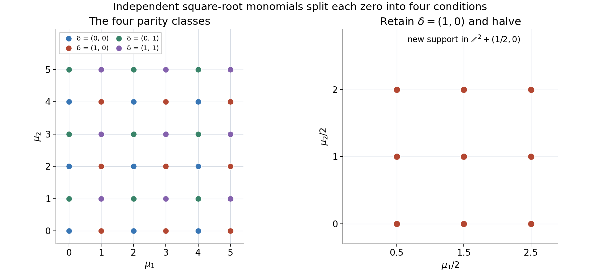
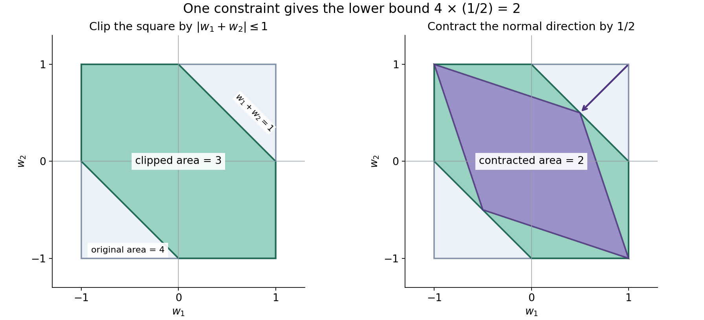
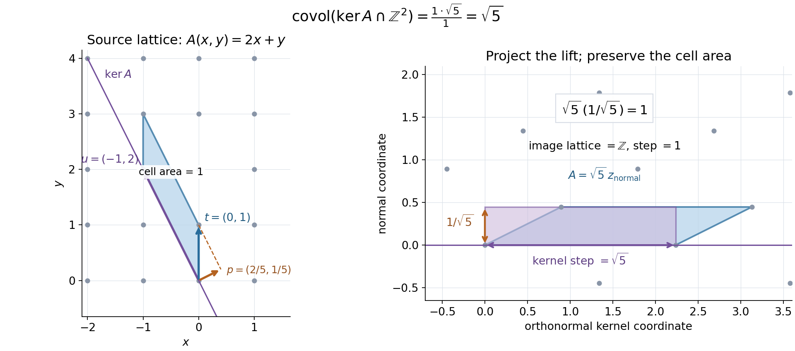
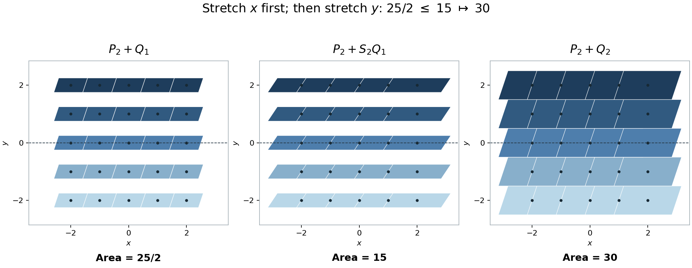
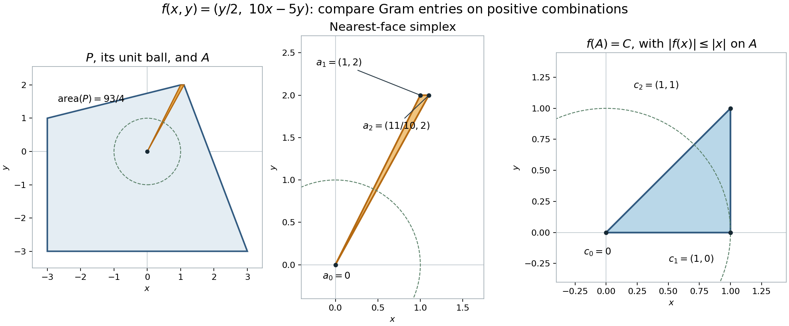
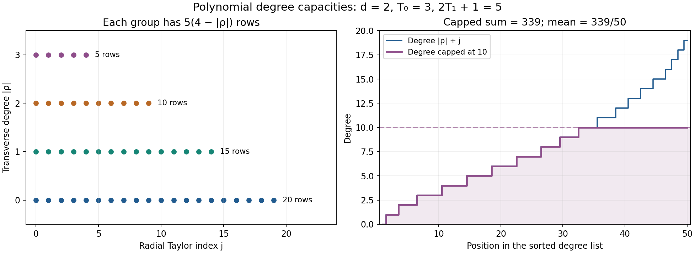
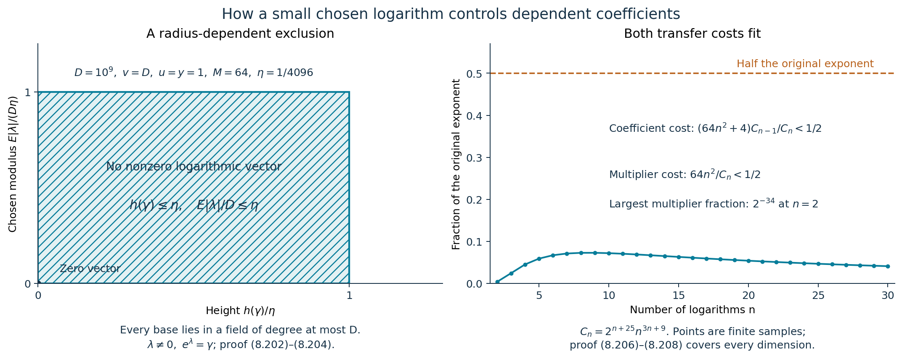

Linear forms in many logarithms: the modern estimates and how to use them
Draft. Public domain (CC0).
An explicit logarithmic estimate must specify its field degree, height normalization, logarithm branches and coefficient parameter. Vanishing requires equal care: a multiplicative relation can become a nonzero logarithmic period. We begin with the arithmetic tools that distinguish these cases and quantify the small relations.
We use the absolute logarithmic height and its power, product and conjugation identities from Heights of algebraic numbers, Theorem 2.4 and Proposition 2.5; its Theorem 2.8 supplies the one-place Liouville inequalities. For the arithmetic arguments below, the written internal providers are Counting primes by elementary means: Chebyshev and Mertens, Solution 2, for Bertrand's postulate; Lattices, Minkowski's theorem and the Minkowski embedding, Theorem 7.1, for the compact equality form of Minkowski's theorem; and Cyclotomic fields, Theorem 12.1, for the degree of a primitive root of unity.
The two quantitative proofs use different methods: Matveev's auxiliary functions and division of the argument, and Waldschmidt's interpolation determinants. The geometric, arithmetic and analytic bridges are proved here before use. Philippon's multiplicity mechanism and Damien Roy's treatment of it are credited where the zero estimate is developed. The worked examples, parameter checks and figures make those methods explicit.
1. Powers that are conjugate
Lemma 8.1. Suppose \(\alpha\ne0\) is algebraic. If \(\alpha^r\) and \(\alpha^s\) are conjugate over \(\mathbb Q\) for distinct positive integers \(r,s\), then \(\alpha\) is a root of unity.
Proof. Take a finite Galois extension containing all conjugates of \(\alpha\), and choose an automorphism \(\varphi\) with \(\varphi(\alpha^r)=\alpha^s\). Induction gives \[ \varphi^j(\alpha^{r^j})=\alpha^{s^j}. \] For the induction step, raise the previous equality to the power \(r\), apply \(\varphi\), and use \(\varphi(\alpha^r)=\alpha^s\). If \(\varphi\) has order \(t\), this yields \(\alpha^{r^t}=\alpha^{s^t}\). Their distinct exponents give a nonzero integer \(r^t-s^t\) with \(\alpha^{r^t-s^t}=1\). \(\square\)
Lemma 8.2 (Frobenius congruence). If \(p\) is prime and \(f\in\mathbb Z[X_1,\ldots,X_k]\), then every coefficient of \[ f(X_1^p,\ldots,X_k^p)-f(X_1,\ldots,X_k)^p \] is divisible by \(p\).
Proof. In characteristic \(p\), all intermediate binomial coefficients vanish, so taking the \(p\)-th power preserves sums and products. Every residue \(a\in\mathbb F_p\) satisfies \(a^p=a\): for \(a\ne0\), multiplication by \(a\) permutes the nonzero residues, and multiplying them gives \(a^{p-1}=1\). Apply these two facts to the reduction of \(f\). \(\square\)
2. An explicit gap above height zero
Theorem 8.3. Let \(d\ge1\) be an integer. Every nonzero algebraic number \(\alpha\) of degree at most \(d\) that is not a root of unity satisfies \[ h(\alpha)>\frac1{11d^3}. \tag{8.1} \]
The following proof gives an explicit elementary height gap, including the small-degree and nonintegral cases.
Proof. It suffices to prove the assertion with the actual degree \(\delta\), since \(\delta\le d\). If \(\alpha\) is not an algebraic integer, its primitive minimal polynomial has leading coefficient at least two in absolute value, and \(h(\alpha)\ge\log2/\delta>1/(11\delta^3)\). If \(\delta=1\) and \(\alpha\) is an integer, nonzero and not a root of unity, then \(|\alpha|\ge2\), giving the same conclusion. Hence assume \(\delta\ge2\) and \(\alpha\) integral.
List its conjugates \(\alpha_1,\ldots,\alpha_\delta\). For \(\ell\ge1\) put \[ S_\ell=\sum_{j=1}^{\delta}\alpha_j^\ell\in\mathbb Z. \] The height formula implies \(|\alpha_j|\le e^{\delta h(\alpha)}\). Lemma 8.2, applied to \(\sum X_j^\ell\), shows that \[ S_{\ell p}-S_\ell^p=p\,g_\ell(\alpha_1,\ldots,\alpha_\delta) \] for an integer polynomial \(g_\ell\). Its value is both an algebraic integer and the rational number \((S_{\ell p}-S_\ell^p)/p\); it is therefore an integer. Fermat's congruence for \(S_\ell\) then gives \[ S_{\ell p}\equiv S_\ell\pmod p. \tag{8.2} \]
Suppose, toward a contradiction, that \[ e^{\delta h(\alpha)}\le1+\frac1{4e\delta^2}. \tag{8.3} \] Bertrand's postulate, applied to \(\lfloor2e\delta\rfloor\), supplies a prime \[ 2e\delta<p<4e\delta. \] Indeed an integer prime exceeding the floor exceeds the original real number, and \(2\lfloor2e\delta\rfloor<4e\delta\). For \(1\le\ell\le\delta\), (8.3) gives \[ |S_\ell|\le\delta e,\qquad |S_{\ell p}|< \delta\left(1+\frac1{4e\delta^2}\right)^{4e\delta^2} <\delta e. \] Thus \(|S_{\ell p}-S_\ell|<2e\delta<p\). Combined with (8.2), this forces \(S_{\ell p}=S_\ell\) for every \(\ell=1,\ldots,\delta\).
The first \(\delta\) power sums determine all elementary symmetric polynomials in characteristic zero. Explicitly, with \(e_0=1\), Newton's identities are \[ ke_k=\sum_{\ell=1}^k(-1)^{\ell-1}e_{k-\ell}S_\ell \qquad(1\le k\le\delta). \] They follow by comparing coefficients in \(-t\,(\prod_j(1-\alpha_jt))'/\prod_j(1-\alpha_jt) =\sum_{\ell\ge1}S_\ell t^\ell\). Induction in these identities shows \[ \prod_j(X-\alpha_j^p)=\prod_j(X-\alpha_j). \] In particular \(\alpha^p\) and \(\alpha\) are conjugate. Lemma 8.1 contradicts the assumption that \(\alpha\) is not torsion.
Consequently (8.3) is false, and \[ h(\alpha)>\frac1\delta \log\left(1+\frac1{4e\delta^2}\right). \] The function \(z\mapsto z\log(1+1/(4ez))\) increases for \(z>0\): its derivative is \(\log(1+x)-x/(1+x)>0\), with \(x=1/(4ez)\), since that last expression vanishes at zero and has positive derivative \(x/(1+x)^2\). Its minimum for \(z=\delta^2\ge4\) is therefore attained at four. The exact rational interval certificate verifies \[ 44\log(1+1/(16e))>1. \] It follows that \(\log(1+1/(4e\delta^2))>1/(11\delta^2)\), proving (8.1). \(\square\)
3. Multiplicative dependence and logarithmic periods
A relation \(\prod_j\alpha_j^{n_j}=1\) says that \(\sum_j n_j\ell_j\in2\pi i\mathbb Z\), for chosen logarithms \(\ell_j\). It does not force that sum to vanish. For example, \[ \alpha_1=2,\quad\alpha_2=4,\quad \ell_1=\log2,\quad\ell_2=2\log2+2\pi i. \] The bases are multiplicatively dependent, yet the imaginary part of \(n_1\ell_1+n_2\ell_2=0\) forces \(n_2=0\), and then \(n_1=0\). To state a bound for a vanishing logarithmic form, the hypothesis must concern the chosen logarithms.
We first record a torsion bound. If a primitive \(M\)-th root of unity belongs to a degree-\(D\) field, then \[ M\le2D^2. \tag{8.4} \] Indeed its degree is \(\varphi(M)\le D\). For \(M=\prod p^{u_p}\), \[ \frac{\varphi(M)}{\sqrt M} =\prod_{p\mid M}p^{(u_p-2)/2}(p-1)\ge1/\sqrt2. \] The smallest factor at a fixed prime has \(u_p=1\). For \(p\ge3\), that factor \((p-1)/\sqrt p\) is at least one; for \(p=2\), it is \(1/\sqrt2\). This proves (8.4), including \(M=1\).
Theorem 8.4 (small logarithmic relations). Let \(m\ge2\), let \(\alpha_j\ne0\) be algebraic numbers in a degree-\(D\) field, and choose logarithms \(\ell_j\). Suppose these logarithms are linearly dependent over \(\mathbb Q\). Choose real numbers \[ a_j=\log A_j\ge\max\{h(\alpha_j),|\ell_j|/D,1/D\}. \] There is a nonzero vector \((n_1,\ldots,n_m)\in\mathbb Z^m\) with \[ \sum_jn_j\ell_j=0,\quad \prod_j\alpha_j^{n_j}=1,\qquad |n_k|\le[11(m-1)D^3]^{m-1}\frac{\prod_j a_j}{a_k} \quad(1\le k\le m). \tag{8.5} \]
Proof. Put \(C_m=11(m-1)D^3\). If some \(\ell_j=0\), its coordinate vector is a suitable relation, because \(C_ma_i\ge11(m-1)D^2\ge1\) for every other index. Otherwise choose an inclusion-minimal dependent subset of \(r\ge2\) logarithms. Any proper subset is independent, so the space of rational relations on this subset is one-dimensional. Choose its primitive integer generator \(n\); every coordinate is nonzero. We prove a bound on this same generator coordinate by coordinate. Write \(C=11(r-1)D^3\) and fix \(k\) in the subset. Put \[ c_j=(Ca_j)^{-1}\quad(j\ne k),\qquad c_k=C^{r-1}\prod_{j\ne k}a_j. \] Their product is one. The compact symmetric parallelepiped \[ \left|x_j-x_k n_j/n_k\right|\le c_j\ (j\ne k),\qquad |x_k|\le c_k \] has volume \(2^r\), since the shear followed by the diagonal scaling has determinant \(\prod_jc_j=1\). Minkowski's compact equality theorem for \(\mathbb Z^r\) supplies a nonzero integer vector \(\eta\) in this body.
Set \(\gamma=\prod_j\alpha_j^{\eta_j}\). Since \(\prod_j\alpha_j^{n_j}=1\), height arithmetic gives \[ \begin{aligned} |n_k|h(\gamma) &=h(\gamma^{n_k})\\ &\le\sum_{j\ne k}|\eta_jn_k-\eta_kn_j|h(\alpha_j). \end{aligned} \] Consequently \[ h(\gamma)\le\sum_{j\ne k}c_jh(\alpha_j) \le\frac1{11D^3}. \] Theorem 8.3 forces \(\gamma\) to be a root of unity. Its order \(M\) is at most \(2D^2\), by (8.4). Let \(z=\sum_j\eta_j\ell_j\). Then \(Mz\in2\pi i\mathbb Z\), and the exact relation for \(n\) gives \[ |Mz| =M\left|\sum_{j\ne k}(\eta_j-\eta_kn_j/n_k)\ell_j\right| \le MD\sum_{j\ne k}c_ja_j \le\frac2{11}<2\pi. \] Thus \(z=0\). The one-dimensional relation space and the primitivity of \(n\) imply \(\eta=tn\) for a nonzero integer \(t\). To see integrality, choose integers \(u_j\) with \(\sum u_jn_j=1\); then \(t=\sum u_j\eta_j\in\mathbb Z\). Hence \(|n_k|\le|\eta_k|\le c_k\). Repeating for each \(k\) bounds the same primitive generator throughout.
Extend this vector by zeros outside the subset. For a coordinate \(k\) in the subset, the stated larger bound differs from its circuit bound by the factor \[ \left(\frac{m-1}{r-1}\right)^{r-1} \prod_{j\ {\rm outside\ the\ subset}} C_ma_j\ge1. \] The first factor is at least one, and every factor in the product is at least \(11(m-1)D^2\). This proves (8.5) without imposing the larger cutoff \(a_j\ge1\). Exponentiating gives the multiplicative identity as well. \(\square\)
In particular, every inclusion-minimal dependent subset \(I\), of size \(r\ge2\), has a primitive integer generator \(u\) satisfying \[ |u_k|\le[11(r-1)D^3]^{r-1} \prod_{\substack{j\in I\\j\ne k}}a_j\quad(k\in I). \tag{8.6} \] This statement follows from the circuit part of the proof before padding by the other indices. If \(k\) maximizes \(a_j\) on \(I\), then all coordinates obey the common bound \([11(r-1)D^3a_k]^{r-1}\). The radius-dependent cutoffs \(a_j\ge(\log E)/D\), \(E\ge e\), therefore meet this relation theorem. This modest improvement of the cutoff is justified by the full Minkowski–height–torsion proof above. The same mechanism, with the larger cutoff \(a_j\ge1\), is [Waldschmidt 2000].
For positive real bases with real logarithms, multiplicative dependence does imply the hypothesis of Theorem 8.4: a real logarithmic sum in \(2\pi i\mathbb Z\) is zero. For arbitrary branches, retain the period.
Corollary 8.5 (relations with a period). Suppose \(m\ge2\) nonzero algebraic numbers are multiplicatively dependent, with arbitrary chosen logarithms, field degree \(D\), and \(a_j\) as in Theorem 8.4. Put \[ a_0=\max\{1,\pi/D\},\qquad C=11mD^3. \] There are integers \(n_0,n_1,\ldots,n_m\), with at least one \(n_j\ne0\) for \(j\ge1\), such that \[ n_0i\pi+\sum_{j=1}^mn_j\ell_j=0, \] and \[ |n_0|\le C^m\prod_{j=1}^ma_j,\qquad |n_k|\le C^ma_0\frac{\prod_{j=1}^ma_j}{a_k}\quad(1\le k\le m). \tag{8.7} \] In particular \(\prod_{j=1}^m\alpha_j^{2n_j}=1\).
Proof. A multiplicative relation gives a logarithmic sum \(2\pi it\), so \(i\pi,\ell_1,\ldots,\ell_m\) are rationally dependent. Apply Theorem 8.4 to these \(m+1\) logarithms, with first base \(-1\) and cutoff \(a_0\). A relation supported only at \(i\pi\) cannot vanish; thus some other coordinate is nonzero. The coefficient bounds are (8.7). Exponentiating gives \((-1)^{n_0}\prod\alpha_j^{n_j}=1\); squaring gives the last identity. \(\square\)
4. Matveev's homogeneous estimate
There are two common height normalizations. In the arithmetic statement, the field degree is included in each cutoff \(H_j\); in applications below we write \(H_j=D a_j\), with \(a_j=\log A_j\). Keeping this conversion explicit prevents a missing power of \(D\).
Theorem 8.6 (Matveev). Let \(K\subset\mathbb C\) be a number field of degree \(D\). Set \(\kappa=1\) if its specified embedding lies in \(\mathbb R\), and \(\kappa=2\) otherwise. Let \(\alpha_1,\ldots,\alpha_n\in K^\times\), with fixed nonzero logarithms \(\ell_j\). For integers \(b_j\), suppose \[ \Lambda=\sum_{j=1}^n b_j\ell_j\ne0,\qquad H_j\ge\max\{D h(\alpha_j),|\ell_j|,0.16\}. \] Define \[ \Omega=\prod_{j=1}^n H_j,\qquad B_H=\max\left\{1,\max_{1\le j\le n}\frac{|b_j|H_j}{H_n}\right\}. \] Then \[ \log|\Lambda|> -C_1(n,\kappa)D^2\Omega\log(eD)\log(eB_H), \tag{8.8} \] where \[ C_1(n,\kappa)= \min\left\{ \frac1\kappa\left(\frac{en}{2}\right)^\kappa 30^{n+3}n^{7/2},\ 2^{6n+20} \right\}. \tag{8.9} \] The same estimate holds with \(B_H\) replaced by \(\max\{1,|b_1|,\ldots,|b_n|\}\).
This is the normalization and constant of [Matveev 2000]. Rational independence of the logarithms is not required in this estimate. The distinguished denominator \(H_n\) is part of the weighted coefficient parameter, so one may choose the last term to make it useful.
Proof when the logarithms span one rational line. This includes the complete case \(n=1\). Write \(\ell_j=r_j\ell_1\), \(r_j\in\mathbb Q\), and choose a common denominator \(d>0\). Put \(k_j=d r_j\in\mathbb Z\) and \(g=\gcd(k_1,\ldots,k_n)>0\). Bézout's identity supplies integers \(u_j\) with \(\sum u_jk_j=g\). Consequently \[ \ell=\frac gd\ell_1=\sum_j u_j\ell_j,\qquad \alpha=\prod_j\alpha_j^{u_j}\in K^\times,\qquad \ell_j=\frac{k_j}{g}\ell. \] The integers \(k_j/g\) are nonzero. Exponentiation gives \(\alpha_j=\alpha^{k_j/g}\); the power identity for heights therefore implies \[ \max\{D h(\alpha),|\ell|\}\le \min_j H_j=:H. \] Also \(\Lambda=q\ell\) for a nonzero integer \(q\), so \(|\Lambda|\ge|\ell|\). If \(|\ell|\ge1\), (8.8) is immediate. Otherwise \(\alpha\ne1\), since a nonzero logarithm of one has modulus at least \(2\pi\). The selected-place height inequality and \(|e^\ell-1|\le e|\ell|\) give \[ \log|\Lambda|\ge\log|\ell| \ge-1-D\log2-Dh(\alpha)\ge-1-D\log2-H. \tag{8.10} \]
Every \(H_j\ge0.16\), so \(\Omega\ge H(0.16)^{n-1}\). Both alternatives defining \(C_1\) satisfy \[ C_1(n,\kappa)(0.16)^{n-1}>20. \] Indeed the first, using \(e>2\) and \(\kappa=1,2\), is at least \[ \frac12\,30^4(24/5)^{n-1}>20, \] and the second is \[ 2^{26}(256/25)^{n-1}>20. \] Thus the magnitude of the claimed exponent is greater than \(20D^2H\). Since \(H\ge0.16\), \[ 20D^2H-H\ge19D^2(0.16)>1+D\log2. \] Together with (8.10), this proves the estimate for rational rank one, with arbitrary branches and all integer coefficients. \(\square\)
Primitive logarithmic lattices and square roots
The division step in the auxiliary-function argument needs more than multiplicative independence: it needs all the square-root monomials to be independent over the coefficient field. Passing to a primitive logarithmic lattice supplies exactly this property. We give the arithmetic argument, including the lattice construction.
For each pair \((\gamma,\lambda)\) with \(\gamma\in K^\times\) and \(e^\lambda=\gamma\), form the real vector \[ v(\gamma,\lambda)= \bigl((\log|\sigma\gamma|)_\sigma,\, (-v_{\mathfrak p}(\gamma)\log N\mathfrak p)_{\mathfrak p},\, \operatorname{Im}\lambda\bigr). \tag{8.11} \] The first list runs over all \(D\) embeddings, with conjugate embeddings both counted. The second has finite support. The valuation \(v_{\mathfrak p}\) gives the exponent in the fractional principal ideal, and \(N\mathfrak p\) is the norm of the prime ideal. Addition of these vectors corresponds to multiplication of the bases and addition of their chosen logarithms. The map is injective: its selected embedding coordinate and final coordinate recover \(\lambda\), hence \(\gamma\).
Let \(V\) be the finite-dimensional real span of finitely many such vectors, and let \[ M=V\cap\{v(\gamma,\lambda):\gamma\in K^\times,\ e^\lambda=\gamma\}. \] Only the finitely many primes occurring in the spanning vectors can occur in \(V\). On this space use the norm \[ \|v\|=\max\left\{\frac12\sum_{\text{archimedean and finite coordinates}}|v_j|, \,|\operatorname{Re}\lambda+i\operatorname{Im}\lambda|\right\}. \] The product formula and height formula identify it with \(\max\{D h(\gamma),|\lambda|\}\). For a nonzero vector with a nontorsion base, Theorem 8.3 makes this norm greater than \(1/(11D^2)\). For a torsion base of order \(q\), the bound \(q\le2D^2\) proved above gives \[ |\lambda|\ge2\pi/q\ge\pi/D^2 \] unless both \(\gamma=1\) and \(\lambda=0\). Thus distinct points of \(M\) are separated by at least \(1/(11D^2)\). Every bounded subset of the finite-dimensional space contains only finitely many of them: cover its compact closure by finitely many balls of radius smaller than half this separation.
For completeness, a discrete subgroup spanning a real \(r\)-space has an integer basis of \(r\) vectors. Choose a shortest nonzero vector \(e_1\). Its intersection with the line \(\mathbb R e_1\) is \(\mathbb Z e_1\), since subtracting an integer multiple would otherwise give a shorter vector. Orthogonal projection of the subgroup to \(e_1^\perp\) is discrete: representatives of a bounded projected set can have their \(e_1\)-coordinate reduced to a fixed bounded interval, and would then contradict finiteness in bounded sets if there were infinitely many distinct projected points. Induction gives a basis of the projected subgroup. Lift that basis and adjoin \(e_1\). Subtracting the lifted integer combination leaves an element of \(\mathbb Z e_1\), proving both generation and independence. Apply this argument to \(M\), which spans \(V\) because it contains the original spanning vectors.
Choose an integer basis \(e_i=v(\vartheta_i,\lambda_i)\) of \(M\), \(1\le i\le r\).
Lemma (quadratic independence). The \(2^r\) numbers \[ \prod_{i=1}^r \exp(\lambda_i/2)^{\delta_i}, \qquad \delta\in\{0,1\}^r, \tag{8.12} \] are linearly independent over \(K\). In particular, \[ [K(\sqrt{\vartheta_1},\ldots,\sqrt{\vartheta_r}):K]=2^r. \tag{8.13} \]
Proof. First, the square classes of the \(\vartheta_i\) are independent in \(K^\times/(K^\times)^2\). If \(\prod\vartheta_i^{\delta_i}=\eta^2\) with \(\eta\in K^\times\) and some \(\delta_i=1\), put \(\lambda=\frac12\sum\delta_i\lambda_i\). Its exponential is either \(\eta\) or \(-\eta\), both in \(K\). Every coordinate in (8.11) for this pair is half the corresponding coordinate of \(\sum\delta_i e_i\): signs do not affect absolute values or prime valuations. Consequently \[ \frac12\sum_i\delta_i e_i\in M. \] Its coordinates in the integer basis of \(M\) include a half-integer, a contradiction.
We now prove the field assertion from this square-class independence. Inductively, the first \(k\) square roots generate an extension \(L_k\) with basis \[ w_\delta=\prod_{i=1}^k\sqrt{\vartheta_i}^{\,\delta_i}, \qquad \delta\in\{0,1\}^k, \] and with all \(2^k\) independent sign changes as \(K\)-automorphisms. This is immediate for \(k=0\). If a square root \(z\) of \(\vartheta_{k+1}\) already belonged to \(L_k\), every sign-change automorphism would send \(z\) to \(z\) or \(-z\), since \(z^2\in K\). Expand \(z=\sum_\delta c_\delta w_\delta\). Distinct \(w_\delta\) have distinct sign-change characters: flipping a coordinate at which two multi-indices differ distinguishes them. Comparing coefficients under all sign changes therefore shows that at most one \(c_\delta\) is nonzero. Thus \[ \vartheta_{k+1}=z^2=c_\delta^2\prod_{i=1}^k\vartheta_i^{\delta_i}, \] contrary to square-class independence. Hence \(X^2-\vartheta_{k+1}\) is irreducible over \(L_k\), and adjoining its root doubles the degree and appends the stated basis. Every previous sign change extends by fixing the new root, and its own sign can independently be changed. This completes the induction. The chosen roots \(\exp(\lambda_i/2)\) differ from any other choices only by signs, which preserve independence. \(\square\)
The following finite-sum form explains how this lemma enters division. Let \(\mathcal U\subset\mathbb Z^r\) be finite, let \(P_\mu\in K[z]\), and put \[ F(z)=\sum_{\mu\in\mathcal U}P_\mu(z) \exp\bigl(z\sum_i\mu_i\lambda_i\bigr). \] If \(x=2y+1\) is odd, decompose \(\mu=2\tau+\delta\). Then \[ F(x/2)=\sum_{\delta\in\{0,1\}^r} \left(\sum_{\substack{\mu\in\mathcal U\\\mu\equiv\delta\pmod2}} P_\mu(x/2)\prod_i\vartheta_i^{\,\tau_i x+\delta_i y}\right) \prod_i\exp(\lambda_i/2)^{\delta_i}. \tag{8.14} \] Each parenthesized coefficient belongs to \(K\). If \(F(x/2)=0\), quadratic independence forces every coefficient to vanish separately.
For a chosen parity class define \[ F_\delta^{\mathrm{new}}(z)= \sum_{\substack{\mu\in\mathcal U\\\mu\equiv\delta\pmod2}} P_\mu(z/2)\exp\bigl(z\sum_i(\mu_i/2)\lambda_i\bigr). \] It vanishes at every odd \(x\) for which the old function vanishes at \(x/2\). Its exponent support lies in \(\mathbb Z^r+\delta/2\), and is contained in half the old support. Choose a class containing a nonzero coefficient polynomial; this makes the new function nonzero. Indeed distinct \(\mu\) give distinct exponential rates, since a zero integer combination of the \(\lambda_i\) would give a zero combination of the basis \(e_i\). Polynomials times exponentials with distinct rates are independent: to isolate one rate, apply \(\prod_{\nu\ne\mu}(d/dz-\lambda_\nu)^{\deg P_\nu+1}\); on its polynomial factor every operator has a nonzero constant term and is invertible, whereas it annihilates each other term.
The splitting also preserves algebraically normalized mixed derivative conditions. A derivative of order \(j\) on the polynomial factor introduces \(2^{-j}P_\mu^{(j)}(x/2)\in K\); a monomial differential operator in exponential coordinates multiplies its term by a polynomial in \(\mu/2\) with coefficients in \(K\). Apply (8.14) to each such condition. Every parity coefficient again vanishes separately. This is the quadratic division argument used in [Matveev 2000].

Figure 8.1. The exact support \(\mathcal U=\{0,\ldots,5\}^2\) splits into four classes. Selecting \(\delta=(1,0)\) and dividing the exponents by two gives nine points of \(\mathbb Z^2+(1/2,0)\). Equation (8.14) explains why every class inherits the odd-point zeros. This is an exponent-support illustration; it does not assign numerical logarithms to the axes. Source mechanism: [Matveev 2000]. Reproducible source: logarithmic_lattice_geometry.py.
Volume after imposing logarithmic constraints
Cutting a box by a few logarithmic constraints loses a power corresponding to the number of constraints, rather than a power corresponding to its full dimension. The needed convex-volume fact is as follows.
Lemma (Brunn–Minkowski for convex bodies). If \(A,B\) are compact convex bodies in \(\mathbb R^d\), then for \(0\le t\le1\), \[ \operatorname{vol}_d((1-t)A+tB)^{1/d} \ge(1-t)\operatorname{vol}_d(A)^{1/d} +t\operatorname{vol}_d(B)^{1/d}. \tag{8.15} \]
Proof. In dimension one this is the length identity for intervals. Induct on \(d\), first assuming positive volumes and normalizing them both to one. Slice \(A\) and \(B\) by their first coordinate; write their \((d-1)\)-dimensional slice volumes as \(a(x)\) and \(b(y)\). They are positive and continuous on the interiors of their projection intervals: the induction hypothesis and convexity show that their \(1/(d-1)\)-th powers are concave there, and a finite concave function is continuous in an open interval. Let \(x(s),y(s)\), \(0<s<1\), be the inverse cumulative slice volumes. Then \[ x'(s)=1/a(x(s)),\qquad y'(s)=1/b(y(s)). \] At first coordinate \(z(s)=(1-t)x(s)+t y(s)\), the slice of \((1-t)A+tB\) contains the Minkowski combination of the two slices. By induction its volume is at least \[ \big((1-t)a(x(s))^{1/(d-1)} +t b(y(s))^{1/(d-1)}\big)^{d-1} \ge a(x(s))^{1-t}b(y(s))^t. \] The last inequality is the weighted arithmetic-geometric mean inequality. Also \[ z'(s)=\frac{1-t}{a(x(s))}+\frac{t}{b(y(s))} \ge a(x(s))^{-(1-t)}b(y(s))^{-t}. \] Integrating the product of these two lower bounds over \(0<s<1\) shows that the Minkowski combination has volume at least one. All substitutions can first be performed on \(\varepsilon\le s\le1-\varepsilon\), where the functions are continuously differentiable, and then extended by monotone convergence.
For arbitrary positive volumes put \(a_0=\operatorname{vol}(A)^{1/d}\), \(b_0=\operatorname{vol}(B)^{1/d}\), \(c=(1-t)a_0+t b_0\), and \(\theta=t b_0/c\). The combination in (8.15) is \[ c\big((1-\theta)(A/a_0)+\theta(B/b_0)\big). \] Both normalized bodies have volume one, so scaling proves (8.15). If a volume is zero, add a closed ball of radius \(\varepsilon\) to each body, apply the positive-volume result, and let \(\varepsilon\downarrow0\). These compact neighborhoods decrease to the original bodies, so continuity of measure from above proves the assertion. \(\square\)
Lemma (volume of a clipped body). Let \(W=-W\) be a compact convex body in \(\mathbb R^r\), let \(T:\mathbb R^r\to U\) be a real linear map of rank \(\rho\), and give \(U\) any norm. If \(\sup_{w\in W}\|Tw\|\le Z\), then, for \(Y>0\), \[ \operatorname{vol}_r\{w\in W:\|Tw\|\le Y\} \ge\operatorname{vol}_r(W)\max\{1,Z/Y\}^{-\rho}. \tag{8.16} \]
Proof. Only \(c=Z/Y>1\) requires proof. Write \(\mathbb R^r=X\oplus\ker T\) orthogonally, with \(\dim X=\rho\). Let \(f(x)\) be the volume of the fiber \(W\cap(x+\ker T)\). For positive fiber dimension \(d\), convexity and (8.15) show that \(f^{1/d}\) is concave on its support. Symmetry makes it even. On each line through zero it is therefore nonincreasing in the positive radial direction: if \(0\le s\le1\), write \(sx=((1+s)/2)x+((1-s)/2)(-x)\) and use concavity. Thus \(f(x/c)\ge f(x)\). If the fiber dimension is zero, use the indicator of \(W\), for which the same inequality follows from convexity and \(0\in W\).
For every \(x\) in the projection of \(W\), \(\|Tx\|\le Z\), so \(\|T(x/c)\|\le Y\). Integrating over these contracted projected points gives \[ \operatorname{vol}_r(W\cap\{\|Tw\|\le Y\}) \ge c^{-\rho}\int f(x/c)\,dx \ge c^{-\rho}\int f(x)\,dx. \] This is (8.16). \(\square\)

Figure 8.2. For \(W=[-1,1]^2\), \(T(w)=w_1+w_2\), \(Z=2\) and \(Y=1\), the clipped area is \(3\). Lemma (8.16) proves the lower bound \(4(1/2)^1=2\). In this symmetric square example, contraction by \(1/2\) in the normal direction is the matrix \(\bigl(\begin{smallmatrix}3/4&-1/4\\-1/4&3/4\end{smallmatrix}\bigr)\); its image has area \(2\) and lies in the clipped hexagon. The general proof uses fiber volumes, so it does not require every symmetric body to contain this particular contracted image. Source mechanism: [Matveev 1999]. Reproducible source: logarithmic_lattice_geometry.py.
Counting small algebraic logarithmic vectors
We use the coordinate description (8.11), replacing the selected real coordinate and its imaginary coordinate by their complex combination. For \(\kappa=2\), count the selected embedding and its conjugate, with conjugate chosen logarithms. For \(\kappa=1\) in the following lattice estimates, use positive bases and real logarithms in the specified real embedding. Let \(S\) be this set of \(\kappa\) coordinates.
Lemma (a determinant cardinality bound). Suppose \(x_1,\ldots,x_J\), \(J\ge2\), belong to one translate of the logarithmic lattice, and their recovered algebraic bases are distinct. At unselected coordinates suppose \(|x_{j,\sigma}|\le X_\sigma\), and at selected coordinates suppose \(|z_{j,\sigma}|\le Y_\sigma\). If \[ \frac1{2\kappa}\sum_{\sigma\notin S}X_\sigma\le X,\qquad \frac1\kappa\sum_{\sigma\in S}Y_\sigma\le Y, \] then \[ \frac D\kappa\,\frac{\log J}{J-1} +1+\frac{XJ}{J-1} -\log\frac{2(J-1)}{JY}\ge0. \tag{8.17} \]
Proof. Write \(x_j=w+v(\alpha_j,\lambda_j)\), and put \(a=(J-1)/2\). Consider the nonzero algebraic number \[ \Delta= \left(\prod_{j=1}^J\alpha_j^{-(J-1)}\right) \det(\alpha_j^k)_{0\le k<J,\ 1\le j\le J}^{\,2}. \] It is nonzero because it equals a nonzero monomial times the Vandermonde determinant in the distinct \(\alpha_j\). At a selected embedding define the entire function \[ \Delta_\sigma(\zeta)= \zeta^{-J(J-1)} \det\big(\exp((k-a)\lambda_{j,\sigma}\zeta)\big)^2. \] The apparent singularity at zero is removable. Expanding rows in powers of \(\zeta\), a nonzero term uses distinct nonnegative exponents, whose sum is at least \(0+1+\cdots+(J-1)\); squaring doubles that order. At \(\zeta=1\), its absolute value is \(|\Delta|_\sigma\).
Since \(\sum_k(k-a)=0\), translating all coordinates by \(w\) introduces factors whose product in the determinant is one. Also \(\sum_k|k-a|\le J^2/4\). At each unselected place choose square roots in an algebraic closure to write \(\Delta\) as the square of the determinant with powers \(k-a\); its absolute value is independent of their signs. The row-norm form of Hadamard, at an archimedean place, and the ultrametric determinant bound, at a finite place, therefore give \[ |\Delta|_\sigma\le\gamma_\sigma \exp(J^2X_\sigma/2)\quad(\sigma\notin S), \] and \[ |\Delta_\sigma(\zeta)|\le |\zeta|^{-J(J-1)}\gamma_\sigma \exp(J^2Y_\sigma|\zeta|/2)\quad(\sigma\in S), \] where \(\gamma_\sigma=J^J\) at an archimedean place and \(1\) at a finite place. Form the analytic function \[ F(\zeta)= \left(\prod_{\sigma\notin S}|\Delta|_\sigma\right) \prod_{\sigma\in S}\Delta_\sigma(\zeta). \] The product formula gives \(|F(1)|=1\), and on the circle \(|\zeta|=R\), \[ \log|F(\zeta)| \le DJ\log J+\kappa XJ^2 +\tfrac12\kappa YRJ^2-\kappa J(J-1)\log R. \] If \(R=2(J-1)/(JY)>1\), apply the maximum modulus principle at \(1\), substitute this radius and divide by \(\kappa J(J-1)\). This gives (8.17). If that radius is at most one, the final logarithm in (8.17) is nonpositive, so the assertion is immediate. \(\square\)
Here is the uniform numerical consequence used below. For every \(\delta\ge1\), \(J\ge7\), and \(\eta\ge0\), the expression in (8.17), with \[ X=\frac{n\eta}{2+\eta},\qquad Y=\frac{e^{-X}}{2(2+\eta)},\qquad n\le J, \] is negative if \(J\ge\delta\log(4.64\delta)\), where \(\delta=D/\kappa\). Indeed it becomes \[ \delta\frac{\log J}{J-1}+1+ \frac{n\eta}{(J-1)(2+\eta)} -\log\frac{4(2+\eta)(J-1)}J . \] Enlarge \(n\) to \(J\). Differentiation shows that its maximum over \(\eta\ge0\) occurs at \(\eta=2/(J-1)\), and equals \[ \left(1+\frac1{J-1}\right) \left(1+\delta\frac{\log J}J\right)-\log8. \tag{8.18} \] For fixed \(J\), this increases with \(\delta\). Under the indicated hypothesis, \(\delta\) is at most the solution \(\delta_0\) of \(J=\delta_0\log(4.64\delta_0)\). Put \(t=\log(4.64\delta_0)\), so \(J=t e^t/4.64\). Then (8.18) is \[ \left(1+\frac1{t e^t/4.64-1}\right) \left(2+\frac{\log(t/4.64)}t\right)-\log8<0. \tag{8.19} \] The last strict inequality has a reproducible rational interval certificate, logarithmic_lattice.py. Since \((127/50)e^{127/50}/4.64<7\), every \(J\ge7\) has \(t>127/50\). The certificate covers \(127/50\le t\le13\) by 1,046 intervals of width \(1/100\); their largest certified upper bound is less than \(-0.0000916\). For \(t\ge13\), the factor \(1+1/(t e^t/4.64-1)\) decreases, and \(\log(t/4.64)/t\le1/(4.64e)\). The resulting tail bound is less than \(-0.0001555\). Every computation uses outward rational intervals and explicit exponential and logarithmic series tails, so no rounded decimal is used to certify the assertion.
Proposition (product and index of logarithmic vectors). Let \(v_1,\ldots,v_n\) be real-linearly independent extended logarithmic vectors, let \(M\) be the saturated lattice in their span, and let \(N=[M:\sum_j\mathbb Z v_j]\). For \(\theta>0\) put \[ V_j=\max\left\{|\lambda_j|, \frac{\theta}{2\kappa}\sum_{\sigma\notin S}|v_{j,\sigma}|\right\},\qquad C=2+\frac1{2\theta}. \] Then \[ N\le \left(\prod_{j=1}^nV_j\right) C^n\bigl(n e^{\,n/(1+4\theta)}\bigr)^\kappa \max\{6,n-1,(D/\kappa)\log(4.64D/\kappa)\}. \tag{8.20} \]
Proof. In coordinates relative to the \(v_j\), the saturated lattice has covolume \(1/N\): the sublattice with those vectors as basis has covolume one and index \(N\). Put \[ W=\{w\in\mathbb R^n:|w_j|\le1/(2CV_j)\},\quad X=\frac{n}{1+4\theta},\quad Y=\frac{e^{-X}}{2C}. \] Clip \(W\) by the selected logarithmic conditions \(|\sum_jw_j\lambda_{j,\sigma}|\le Y\). Their real rank is at most \(\kappa\): one real functional in the real case, or the real and imaginary parts of one complex functional in the complex case. On the full box their norms are at most \(Z=n/(2C)\). Lemma (8.16) therefore gives \[ \operatorname{vol}_n(W_{\rm clipped}) \ge\frac{(n e^X)^{-\kappa}}{C^n\prod V_j}. \tag{8.21} \]
Integrate the number of points of \(W_{\rm clipped}\) in each lattice coset over a fundamental domain. Its average is \(N\operatorname{vol}(W_{\rm clipped})\); hence some coset contains an integer number \(J\) of points at least that large. This is the counting form of Blichfeldt's argument, with its full averaging calculation. Their images in logarithmic space satisfy the unselected bound \[ \frac1{2\kappa}\sum_{\sigma\notin S} \max_{w\in W}\left|\sum_jw_jv_{j,\sigma}\right| \le\sum_j\frac1{2CV_j}\frac{V_j}{\theta} =\frac n{2C\theta}=X, \] and the selected bound \(Y\). Two of their recovered bases cannot be equal: their selected logarithms would differ by a nonzero period of modulus at least \(2\pi\), whereas their difference has modulus at most \(2Y<2\pi\). Thus the determinant bound applies whenever \(J\ge2\).
If \(J\) were larger than all three entries of the maximum in (8.20), then \(J\ge7\), \(J\ge n\), and \(J>\delta\log(4.64\delta)\), contradicting (8.17) and (8.19). It follows that \(J\) is at most that maximum. Combine this with its lower bound and (8.21) to prove (8.20). \(\square\)
In particular, with \(\theta=\kappa\) and cutoffs \(A_j\ge\max\{D h(\alpha_j),|\lambda_j|\}\), we have \(V_j\le A_j\). For \(n\ge2\), (8.20) gives \[ A_1\cdots A_n\,\frac{3.1^n n^\kappa}{\kappa}\, D\log(e^{n+4}D)>N. \tag{8.22} \] To check the simplification, note \[ C e^{\kappa/(1+4\kappa)}<3.1 \quad(\kappa=1,2), \] which the same certificate verifies. Also each of \(6\), \(n-1\) and \((D/\kappa)\log(4.64D/\kappa)\) is at most \((D/\kappa)\log(e^{n+4}D)\), since \(D/\kappa\ge1\), \(n\ge2\). The strict inequality in the exponential base gives the strictness in (8.22).
This supplies the product-index estimate of [Matveev 1999] and [Matveev 2000], for every \(n\ge2\), together with its convex-volume and arithmetic determinant proofs.
The one-vector height estimate
The preceding product estimate treats at least two independent vectors. A sharper use of the Vandermonde product treats one vector.
Lemma (extended height of one algebraic number). Let \(\alpha\ne0\) have degree \(d\ge2\), and let \(\lambda\ne0\) be any logarithm of \(\alpha\). Then \[ \max\{d h(\alpha),|\lambda|\}> \frac8{9d\log(2.2d)}. \tag{8.23} \] Consequently, for every degree-\(D\) field containing \(\alpha\), and every cutoff \(A\ge\max\{D h(\alpha),|\lambda|\}\), \[ \frac1A<1.5D\log(eD). \tag{8.24} \]
Proof. Work first in \(F=\mathbb Q(\alpha)\), and put \(L=\log(2.2d)\). Suppose \(A=\max\{d h(\alpha),|\lambda|\}\le8/(9dL)\). For \(d\ge3\), choose \[ m=\left\lceil\tfrac45 dL\right\rceil. \] The numbers \(1,\alpha,\ldots,\alpha^{m-1}\) are distinct. This is immediate unless \(\alpha\) is a root of unity of order \(q\). In that case a nonzero chosen logarithm has modulus at least \(2\pi/q\), while \[ m|\lambda|\le mA\le\tfrac{32}{45}+\frac8{9dL}<2\pi; \] hence \(q>m\).
Put \(a=(m-1)/2\), and consider the centered determinant \[ \mathcal D=\det(\exp((j-a)(k-a)\lambda))_{0\le j,k<m}. \] Its fourth power is a nonzero element of \(F\): expanding the determinant gives monomials with exponents whose denominators divide four, and the centering differs from the ordinary Vandermonde by a single such monomial. Thus the product formula applies to its local absolute values.
At the specified embedding the exact Vandermonde identity gives \[ \mathcal D=\prod_{0\le j<k<m}2\sinh((k-j)\lambda/2). \] The integral representation of \(\sinh\) gives \[ |2\sinh(t\lambda/2)|\le t|\lambda|e^{t|\operatorname{Re}\lambda|/2} \qquad(t\ge1). \] It follows that \[ \log|\mathcal D| \le\tfrac12m(m-1)\log|\lambda| +\sum_{t=1}^{m-1}(m-t)\log t +\tfrac1{12}m(m^2-1)|\operatorname{Re}\lambda|. \tag{8.25} \] At every other embedding, Hadamard gives \[ \log|\mathcal D|_\sigma \le\tfrac m2\log m+ \tfrac18m^2(m-1)|\log|\alpha|_\sigma|. \] At a finite place the same bound holds without the first term, by the ultrametric determinant inequality. If the specified embedding is complex, its conjugate has the bound (8.25) as well. Write \(\kappa=1\) or \(2\) for the number of these embeddings. The sum of the remaining absolute logarithms is \(2d h(\alpha)-\kappa|\operatorname{Re}\lambda|\). The terms multiplying \(\kappa|\operatorname{Re}\lambda|\), after combining the bounds, have coefficient \[ \tfrac1{12}m(m^2-1)-\tfrac18m^2(m-1) =-\tfrac1{24}m(m-1)(m-2)\le0. \] Discard them. The product formula therefore yields \[ 0\le \frac{d-\kappa}{\kappa}\frac{\log m}{m-1} +\frac{d h(\alpha)}{\kappa}\frac m2 +\log|\lambda| +\frac2{m(m-1)}\sum_{t=1}^{m-1}(m-t)\log t. \tag{8.26} \]
The function \((m-x)\log x\) is concave on \([1,m]\), and is zero at both endpoints. Its integral is therefore at least its trapezoidal sum: \[ \sum_{t=1}^{m-1}(m-t)\log t \le \frac{m^2}2\log m-\frac{3m^2}4+m-\frac14. \] Use this in (8.26), enlarge \(d h(\alpha)\) and \(|\lambda|\) to \(A\), and take the larger value \(\kappa=1\) in the resulting positive degree terms. We obtain \[ 0\le d\frac{\log m}{m-1} +\frac{4m}{9dL}+\log\frac{8m}{9dL} -\frac32+\frac1{2m}. \tag{8.27} \]
This right side is strictly negative for every \(d\ge3\). For \(3\le d\le99\), logarithmic_lattice.py computes \(L\) by outward rational intervals, certifies the single integer value of \(m\), and bounds (8.27); its largest upper bound is less than \(-0.04236\). For \(d\ge100\), \(L>5\) and \[ \frac m{dL}\le\frac45+\frac1{dL}\le\frac{401}{500}. \] Also, using \(\log(1+u)\le u\) and \(\log(x/a)\le x/(ae)\) for \(x>0\), \[ d\frac{\log m}{m-1} \le\frac{L+\log(4L/11)+1/(80L)}{(4/5)L-1/100} \le \frac{1+4/(11e)+1/2000}{399/500}<\frac{143}{100}. \] Here \(m\le(4/5)dL+1\), \(m-1\ge(4/5)dL-1\), and \(e>27/10\) justify each bound. Since \(m\ge400\), put \(q=802/1125<1\) and use \(\log q\le(q-1)-(q-1)^2/2\). The right side of (8.27) is at most \[ \frac{143}{100} +\frac49\frac{401}{500} +(q-1)-\frac{(q-1)^2}{2} -\frac32+\frac1{800} =-\frac{1645639}{40500000}<0. \] This contradiction proves (8.23) for \(d\ge3\).
For \(d=2\), a nonintegral number, or an integral nonunit, has \(2h(\alpha)\ge\log2\). For a quadratic unit with real conjugates and not a root of unity, write its minimal polynomial as \(X^2-tX+\varepsilon\), \(t\in\mathbb Z\), \(\varepsilon=\pm1\). If \(\varepsilon=-1\), then \(|t|\ge1\) unless the polynomial is reducible, so the larger root modulus is at least \((1+\sqrt5)/2\). If \(\varepsilon=1\), the real non-torsion case has \(|t|\ge3\), giving a still larger root modulus. Thus \(2h(\alpha)\ge\log((1+\sqrt5)/2)\). A quadratic unit with nonreal conjugates has both moduli one, hence height zero and is a root of unity by Theorem 8.3. In the torsion case its order is at most \(2d^2=8\), so \(|\lambda|\ge\pi/4\). Every one of these bounds exceeds \(8/(18\log4.4)\), as follows directly from the rational interval arithmetic in the same certificate.
To deduce (8.24), \(D\ge d\) and \(2.2<e\) give [ A>\frac8{9D\log(2.2D)}
\frac2{3D\log(eD)} \quad(d\ge2). ] If \(\alpha\) is rational and different from \(1,-1\), then \(h(\alpha)\ge\log2>2/3\). If it is \(1\) or \(-1\), a nonzero logarithm has modulus at least \(\pi>2/3\). These facts also prove (8.24) for degree-one bases. \(\square\)
This establishes the one-vector estimate used in [Matveev 2000], by a complete Vandermonde calculation and a reproducible uniform certificate.
Euclidean covolumes of logarithmic lattices
In the coordinate space (8.11) use \[ \|v\|_2^2=\sum_{\sigma\ {\rm archimedean}}x_\sigma^2 +\sum_{\mathfrak p}x_{\mathfrak p}^2 +(\operatorname{Im}\lambda)^2. \] The last term is absent for positive bases with real logarithms. Let \(k=1\) when it is present and \(k=0\) otherwise. Extend the height norm to all real vectors of this coordinate space by \[ \mathcal H(v)= \max\left\{\tfrac12\sum_{\text{archimedean and finite coordinates}}|v_j|, \,|x_{\rm selected}+i y|\right\}. \] All these real vectors satisfy the additive product formula. On algebraic logarithmic vectors this norm is \(\max\{D h(\alpha),|\lambda|\}\).
Lemma (covolume bounds). Let \(M\) be an \(r\)-dimensional lattice of extended logarithmic vectors in a degree-\(D\) field, \(D\ge2\). Put \[ R_D=\frac8{9D^{3/2}\log(eD)}. \] Then \[ \operatorname{covol}_r(M)\ge \frac{\pi^{r/2}}{\Gamma(1+r/2)}R_D^r. \tag{8.28} \] Also, if \(B_r\) is the supremum of the Euclidean volume of parallelepipeds spanned by arbitrary real vectors \(v_1,\ldots,v_r\) in this coordinate space satisfying \(\mathcal H(v_j)\le1\), then \[ B_r\le(k+2)^{r/2}. \tag{8.29} \] For \(K=\mathbb Q\), let \(P_1\le P_2\le\cdots\) be the increasing list of the prime logarithms together with \(\pi\) when imaginary coordinates are allowed. Then \[ \operatorname{covol}_r(M)\ge P_1\cdots P_r. \tag{8.30} \] In the positive rational case omit \(\pi\).
Proof. We first show that no nonzero logarithmic vector has Euclidean length less than \(2R_D\). Since \(2R_D<\log2\), all its finite coordinates would have to vanish: a nonzero prime valuation has modulus at least \(\log N\mathfrak p\ge\log2\). Its base would therefore be a unit.
For \(D\ge4\), Cauchy–Schwarz and the height formula give \[ D h(\alpha)=\tfrac12\sum_{\sigma}|x_\sigma| \le\tfrac{\sqrt D}{2}\|v\|_2<R_D\sqrt D, \qquad |\lambda|\le\|v\|_2<2R_D\le R_D\sqrt D. \] But \(R_D\sqrt D=8/(9D\log(eD))\) is strictly smaller than the one-vector lower bound (8.23), with the actual degree of the base or the rational exceptions treated in (8.24). This is a contradiction.
For \(D=2\), a nontorsion unit has some conjugate with logarithmic modulus at least \(\log((1+\sqrt5)/2)>2R_2\), by the quadratic argument above. For \(D=3\), a unit of actual degree three has a monic irreducible polynomial \[ X^3+aX^2+bX+c,\qquad a,b\in\mathbb Z,\quad c=\pm1. \] If all conjugate moduli lay strictly between \(5/6\) and \(6/5\), then \(|a|<18/5\). The product of the roots has modulus one, so the pairwise products have moduli equal to the reciprocals of the root moduli; hence \(|b|<18/5\) as well. Replacing the base by its negative if needed reduces to \(c=1\), with \(-3\le a,b\le3\). Irreducibility excludes \(a+b=-2\) and \(a=b\), since these are precisely the cases of roots \(1\) and \(-1\).
There are 38 remaining pairs. The exact finite check in logarithmic_lattice.py evaluates \(f(6/5),f(-6/5),f(5/6),f(-5/6)\) for each. Either \(f(6/5)\le0\), giving a real root at least \(6/5\); or \(f(-6/5)\ge0\), giving a real root at most \(-6/5\); or the two inner values have opposite signs, giving a real root in \([-5/6,5/6]\). All comparisons are rational, and the certificate records the pair and its excluding case. Thus no irreducible cubic unit has all its conjugate moduli in the indicated interval. Since \(2R_3<\log(6/5)\), a vector of length less than \(2R_3\) would contradict this check. A degree-one unit is \(1\) or \(-1\), and cannot supply a nonzero vector this small.
For torsion bases in these two field degrees, the order bound gives a nonzero logarithm of modulus at least \(\pi/4\) for \(D=2\), or \(\pi/9\) for \(D=3\). Both exceed \(2R_D\). The certificate also checks all the numerical comparisons used in these small-degree cases.
Intersect the open ball of radius \(2R_D\) with the real span of \(M\). It contains no nonzero lattice point. Minkowski's theorem therefore gives \[ \operatorname{vol}_r(\text{ball of radius }2R_D) \le2^r\operatorname{covol}_r(M), \] which is (8.28). The formula for the unit-ball volume follows by integrating \(e^{-\|x\|^2}\): the product of the one-dimensional Gaussian integrals is \(\pi^{r/2}\), while radial integration gives \(\operatorname{vol}(\mathbb B_r)\Gamma(1+r/2)\), where \(\mathbb B_r\) denotes the Euclidean unit ball. This also defines the gamma function for the half-integer values appearing here.
For (8.29), the additive product formula makes the sum of the positive real coordinates, including both archimedean and finite coordinates, equal to the absolute sum of the negative ones. Both sums are at most one on the continuous height-norm unit ball. Thus \[ \sum_{\text{real coordinates }j} x_j^2 \le\left(\sum_{x_j>0}x_j\right)^2 +\left(\sum_{x_j<0}x_j\right)^2\le2. \] The possible imaginary coordinate has modulus at most one. Each Euclidean vector length is therefore at most \(\sqrt{k+2}\); Hadamard proves (8.29).
Finally consider a lattice of rational bases. Its finite coordinates are integer multiples of \(\log p\), and its imaginary coordinate, when present, is an integer multiple of \(\pi\). Project away the real archimedean coordinate. This projection is injective on logarithmic vectors: the prime exponents and the integer period recover the signed rational base and its logarithm. For any integer basis of \(M\), its projected matrix is an integer matrix multiplied row by row by the corresponding numbers \(\log p\), or \(\pi\). It has rank \(r\). Cauchy–Binet expresses the squared projected covolume as the sum of squares of its \(r\)-row minors. Some integer minor is nonzero and has absolute value at least one, and its product of row weights is at least \(P_1\cdots P_r\). Projection cannot increase volume, again by Cauchy–Binet after including the discarded row. This proves (8.30), without a cube-section theorem. \(\square\)
The ratio needed for integer relations consequently has one formula for \(D\ge2\) and for positive rational bases: \[ \frac{B_r}{\operatorname{covol}_r(M)} \le 2.2\,\Gamma(1+r/2) \left(\frac3\pi\right)^{r/2} \left(\frac98D^{3/2}\log(eD)\right)^r. \tag{8.31} \] For \(D\ge2\), (8.28)–(8.29) prove this even with the factor \(2.2\) replaced by one. For positive rational bases, (8.30) and \(B_r\le2^{r/2}\) reduce the assertion to an explicit inequality involving the first \(r\) prime logarithms. The exact interval certificate logarithmic_lattice.py checks \(r=1,2,3\). To cover every larger dimension, let \(F_r\) be the ratio of \(2^{r/2}/\prod_{j\le r}\log p_j\) to the right side of (8.31) with \(D=1\). The gamma recurrence gives \[ \frac{F_{r+2}}{F_r} =\frac{256\pi} {243(r+2)\log p_{r+1}\log p_{r+2}}<1 \qquad(r\ge2). \] Indeed, both prime logarithms exceed one, and \(256\pi<972\), as certified by the same rational interval for \(\pi\). Induction on each parity proves (8.31) in every dimension. The rational case here concerns positive bases with real logarithms, which is the case used after the real-embedding reduction.
The discriminant of the coefficient field
The height of a generating set controls the discriminant without first choosing a primitive element of large height.
Lemma (discriminant and generators). If \(K=\mathbb Q(\alpha_1,\ldots,\alpha_n)\), \([K:\mathbb Q]=D\), then \[ \log|\Delta_K| \le D\log D+2D(D-1)\max_j h(\alpha_j). \tag{8.32} \] More precisely, write \(K_j=\mathbb Q(\alpha_1,\ldots,\alpha_j)\), \(K_0=\mathbb Q\), and \(d_j=[K_j:K_{j-1}]\). Then \[ \frac{\log|\Delta_K|}{D} \le \log D+2\sum_j(d_j-1)h(\alpha_j). \tag{8.33} \]
Proof. We first prove the relative bound for \(L=F(\alpha)\), with \(e=[L:F]\ge2\). Let \[ q(X)=X^e+c_1X^{e-1}+\cdots+c_e\in F[X] \] be the minimal polynomial. At a finite place \(v\) of \(F\), use the absolute value extending the ordinary \(p\)-adic absolute value, and put \[ H_v(q)=\max\{1,|c_1|_v,\ldots,|c_e|_v\}. \] Choose \(a_0\in F_v^\times\) with \(|a_0|_v=H_v(q)^{-1}\). This is possible because the maximum is a value of a coefficient in \(F_v\). All coefficients \(a_i=a_0c_i\) of \(f=a_0q\), with \(c_0=1\), then lie in the valuation ring.
For \(1\le k<e\) set \[ \beta_k=a_0\alpha^k+a_1\alpha^{k-1}+\cdots+a_{k-1}\alpha. \] These elements are integral at every place of \(L\) above \(v\). For a conjugate \(\alpha'\) with \(|\alpha'|_v\le1\), this follows from the displayed expression. For \(|\alpha'|_v>1\), the equation \(f(\alpha')=0\) gives instead \[ \beta_k'=-a_k-a_{k+1}(\alpha')^{-1} -\cdots-a_e(\alpha')^{k-e}, \] whose absolute value is again at most one. A root whose every local conjugate has absolute value at most one is integral: the elementary symmetric functions of these conjugates are the coefficients of a monic polynomial and belong to the valuation ring.
The vectors \(1,\beta_1,\ldots,\beta_{e-1}\) form an \(F_v\)-basis of \(L\otimes_F F_v\); their change-of-basis matrix from \(1,\alpha,\ldots,\alpha^{e-1}\) is triangular with determinant \(a_0^{e-1}\). They span a submodule of the local ring of integers. The trace discriminant of this submodule therefore has valuation at least that of the relative field discriminant \(\mathfrak d_{L/F}\). To see this directly, choose an integral basis locally over the discrete valuation ring and write the displayed vectors in it. The coefficients form an integral matrix, and the trace matrix changes as \(T^{\mathsf t}AT\); its determinant is multiplied by \((\det T)^2\). Consequently \[ |\mathfrak d_{L/F}|_v \ge |a_0|_v^{2e-2}|\operatorname{disc}q|_v =H_v(q)^{-(2e-2)}|\operatorname{disc}q|_v. \tag{8.34} \]
Here, at a finite place \(v\) above \(p\) of ramification index \(e_v\), the absolute value of an ideal of valuation \(t\) means \(p^{-t/e_v}\). With weight \(n_v=[F_v:\mathbb Q_p]\), the product of the inverse absolute values of an ideal is its absolute norm. Thus (8.34) and the product formula for the nonzero number \(\operatorname{disc}q\) give \[ \log N_{F/\mathbb Q}\mathfrak d_{L/F} \le \sum_{v\mid\infty}n_v\log|\operatorname{disc}q|_v +(2e-2)\sum_{v\nmid\infty}n_v\log H_v(q). \tag{8.35} \]
At an archimedean place, let \(\alpha'_1,\ldots,\alpha'_e\) be the roots of \(q\), and put \(M_v(q)=\prod_i\max\{1,|\alpha'_i|_v\}\). The Vandermonde matrix with rows \((1,\alpha'_i,\ldots,(\alpha'_i)^{e-1})\) has row norm at most \(\sqrt e\,\max\{1,|\alpha'_i|_v\}^{e-1}\). Hadamard therefore gives \[ |\operatorname{disc}q|_v\le e^e M_v(q)^{2e-2}. \tag{8.36} \] At a finite place, \[ H_v(q)=\prod_i\max\{1,|\alpha'_i|_v\}. \tag{8.37} \] For completeness, the coefficient maximum norm is multiplicative for polynomials over a valued field: after scaling both polynomials to have maximum one, their nonzero reductions have a nonzero product in the residue-field polynomial ring. Factor \(q\) over a splitting field and apply this fact to its linear factors. This proves (8.37), including roots with fractional valuations.
The local degree formula for the conjugates now identifies \[ \sum_{v\mid\infty}n_v\log M_v(q) +\sum_{v\nmid\infty}n_v\log H_v(q) =[L:\mathbb Q]h(\alpha). \] Indeed, each archimedean embedding of \(F\) has \(e\) extensions, and at a finite place each place \(w\) of \(L\) contributes \([L_w:F_v]\) conjugates, with \(n_v[L_w:F_v]=[L_w:\mathbb Q_p]\). Combining this identity with (8.35)–(8.36) gives \[ \log N_{F/\mathbb Q}\mathfrak d_{L/F} \le [L:\mathbb Q]\log e+ 2(e-1)[L:\mathbb Q]h(\alpha). \tag{8.38} \]
The discriminant identity in a tower is \[ |\Delta_L|=|\Delta_F|^e N_{F/\mathbb Q}\mathfrak d_{L/F}. \tag{8.39} \] It can be checked by the same trace-matrix calculation locally. Choose a local integral basis \(\omega_i\) for \(F/\mathbb Q\) and \(\eta_j\) for \(L/F\). The matrix of the conjugates of the products \(\omega_i\eta_j\) factors into the matrix of the conjugates of the \(\omega_i\), repeated \(e\) times, and the relative conjugate matrices of the \(\eta_j\). Squaring the determinant gives the first factor \(\Delta_F^e\) and the second factor equal to the norm of the relative discriminant. The local bases span the full rings of integers, so there is no index factor. Equality at every prime proves (8.39) for the absolute ideal norms, irrespective of whether a global relative integral basis exists.
Divide (8.39) by \([L:\mathbb Q]\) on the logarithmic scale and use (8.38). Iterate along \(K_0\subseteq K_1\subseteq\cdots\subseteq K_n\), omitting steps of degree one. Since \(\prod d_j=D\), this proves (8.33). Finally \[ \sum_j(d_j-1)\le\prod_jd_j-1=D-1, \] by repeated use of \((a-1)+(b-1)\le ab-1\) for integers \(a,b\ge1\). Formula (8.32) follows. \(\square\)
This proves the discriminant bridge of [Matveev 2000], including nonintegral generators; replacing a nonintegral generator by an arbitrary denominator-clearing multiple would lose the stated constant.
Small solutions over the coefficient field
The auxiliary coefficients will satisfy linear equations over \(K\). Their sizes must be controlled with different weights at the embeddings, while allowing fractional-ideal conditions at the finite places. We prove the required weighted Siegel lemma directly from Minkowski's theorem and the ideal-lattice covolume formula of Lattices, Minkowski's theorem and the Minkowski embedding, Theorem 7.1 and Proposition 7.2.
Use all \(D\) archimedean embeddings, counting a complex pair twice. For a finite place indexed by \(\mathfrak p\), use \(|a|_{\mathfrak p}=(N\mathfrak p)^{-v_{\mathfrak p}(a)}\); with these conventions the product formula has no additional weights. Choose positive \(q_{j,\sigma}\), equal at conjugate embeddings, and put \[ q_{j,\mathfrak p}=(N\mathfrak p)^{l_{j,\mathfrak p}}, \qquad l_{j,\mathfrak p}\in\mathbb Z, \] with only finitely many \(l_{j,\mathfrak p}\ne0\). For \(p,a\in K^J\), define \[ \begin{aligned} L_\sigma(p)&= \left(\sum_{j=1}^J|p_j|_\sigma^2/q_{j,\sigma}^2\right)^{1/2}, & L_\sigma^*(a)&= \left(\sum_{j=1}^J|a_j|_\sigma^2q_{j,\sigma}^2\right)^{1/2} \quad(\sigma\mid\infty),\\ L_{\mathfrak p}(p)&=\max_j |p_j|_{\mathfrak p}/q_{j,\mathfrak p}, & L_{\mathfrak p}^*(a)&=\max_j |a_j|_{\mathfrak p}q_{j,\mathfrak p}. \end{aligned} \] Let \[ \mathcal L(p)=\left(\prod_\sigma L_\sigma(p)\right)^{1/D}, \quad \mathcal L^*(a)=\left(\prod_\sigma L_\sigma^*(a)\right)^{1/D}, \quad q=\left(\prod_{j,\sigma}q_{j,\sigma}\right)^{1/(DJ)}. \] The products range over the archimedean and finite places just described.
Lemma (weighted Siegel). Let \(I<J\), and let \(a_1,\ldots,a_I\in K^J\) be the rows of a homogeneous linear system. There is a nonzero \(p\in K^J\) with \(a_i\cdot p=0\) for every \(i\), and \[ \mathcal L(p)\le \sqrt J\,|\Delta_K|^{1/(2D)} \left(q^{-J}\prod_{i=1}^I \max\{q,\mathcal L^*(a_i)\}\right)^{1/(J-I)}. \tag{8.40} \] The solution may be chosen with \(L_{\mathfrak p}(p)\le1\) at every finite place. In particular, when all finite weights are one, all its coordinates are algebraic integers.
Proof. First suppose that the \(I=r\) rows are \(K\)-linearly independent, and put \(s=J-r\). Let \[ \mathfrak a_j=\prod_{\mathfrak p}\mathfrak p^{-l_{j,\mathfrak p}}, \qquad \Gamma=\mathfrak a_1\oplus\cdots\oplus\mathfrak a_J. \] Membership in \(\Gamma\) is precisely the collection of finite conditions \(L_{\mathfrak p}(p)\le1\). Embed \(K^J\) in its archimedean real space. At a real embedding use coordinates \(p_j^\sigma/q_{j,\sigma}\); at each complex embedding use the real and imaginary coordinates multiplied by \(\sqrt2/q_{j,\sigma}\). This metric has squared length \(\sum_{\sigma\mid\infty} L_\sigma(p)^2\), with both conjugate embeddings counted.
Proposition 7.2 gives the unweighted covolume \(\sqrt{|\Delta_K|}\,N\mathfrak a\) for an ideal in this metric: its factor \(2^{-r_2}\) is canceled by the \(\sqrt2\) in the two coordinates of each complex pair. Scaling by the archimedean weights consequently gives \[ \operatorname{covol}(\Gamma) =|\Delta_K|^{J/2} \left(\prod_{j,\sigma}q_{j,\sigma}\right)^{-1} =|\Delta_K|^{J/2}q^{-DJ}. \tag{8.41} \] Here \(N\mathfrak a_j=\prod_{\mathfrak p}q_{j,\mathfrak p}^{-1}\) accounts for the finite weights.
Let \(A:K^J\to K^r\) have rows \(a_i\), and give the target the unweighted archimedean metric, again with the \(\sqrt2\) convention. At a finite place write \[ L_{\mathfrak p}^*(a_i)=(N\mathfrak p)^{k_{i,\mathfrak p}}, \qquad \mathfrak b_i=\prod_{\mathfrak p}\mathfrak p^{-k_{i,\mathfrak p}}. \] The ultrametric inequality shows that \[ A\Gamma\subseteq\mathfrak b_1\oplus\cdots\oplus\mathfrak b_r. \] Since \(A\) has rank \(r\), its image spans \(K^r\). More explicitly, choose a \(K\)-linear right inverse of \(A\) and clear its finitely many ideal denominators. For some nonzero integer \(c\), this gives \(c\mathcal O_K^r\subseteq A\Gamma\). The image is a finitely generated subgroup of the displayed ideal lattice and contains a full lattice, so it is itself a full lattice. The inclusion has positive integer index. Hence \[ \operatorname{covol}(A\Gamma)\ge |\Delta_K|^{r/2} \left(\prod_{\mathfrak p}\prod_{i=1}^r L_{\mathfrak p}^*(a_i)\right)^{-1}. \tag{8.42} \]
Let \(\Gamma_0=\Gamma\cap\ker A\). It is a lattice of real dimension \(Ds\): choose a \(K\)-basis of \(\ker A\), clear its finitely many ideal denominators, and multiply each basis vector by an integral basis of \(K\). These \(Ds\) independent real vectors lie in \(\Gamma_0\), while the inclusion in \(\Gamma\) proves discreteness. Let \(\mathcal J(A)\) be the product of the nonzero singular values of the induced real linear map. The lattice volume identity is \[ \operatorname{covol}(\Gamma_0)= \frac{\operatorname{covol}(\Gamma)\mathcal J(A)} {\operatorname{covol}(A\Gamma)}. \tag{8.43} \] To prove it, choose an integer basis of \(A\Gamma\) and lift its vectors to \(\Gamma\). Adjoin a basis of \(\Gamma_0\). Every lattice vector is an integer combination of these vectors, by subtracting the combination with the same image, so they form a basis of \(\Gamma\). Project the lifted vectors orthogonally onto \((\ker A)^\perp\). The volume of the full basis is the kernel-basis volume times the projected volume, by a block-triangular determinant. Applying \(A\) multiplies that projected volume by \(\mathcal J(A)\), which proves (8.43).
At an archimedean embedding the matrix of \(A\) in the weighted domain coordinates has entries \(a_{ij}^\sigma q_{j,\sigma}\). Its row-volume is \(\det(A_\sigma A_\sigma^*)^{1/2}\). For a complex pair, the real Jacobian is the square of this number, which is exactly what counting both conjugate embeddings gives. Hadamard therefore implies \[ \mathcal J(A)\le \prod_{\sigma\mid\infty}\prod_{i=1}^r L_\sigma^*(a_i). \] Combining (8.41)–(8.43) yields \[ \operatorname{covol}(\Gamma_0)\le |\Delta_K|^{s/2}q^{-DJ} \prod_{i=1}^r\mathcal L^*(a_i)^D. \tag{8.44} \]
In an \(m\)-dimensional Euclidean space, the ball of radius \(\sqrt m\,c^{1/m}\) has volume at least \(2^m c\): the unit ball contains the cube \([-1/\sqrt m,1/\sqrt m]^m\). Apply the compact form of Minkowski's theorem to \(\Gamma_0\), with \(m=Ds\) and \(c=\operatorname{covol}(\Gamma_0)\). It gives a nonzero \(p\in\Gamma_0\) with \[ \left(\sum_{\sigma\mid\infty}L_\sigma(p)^2\right)^{1/2} \le\sqrt{Ds}\,\operatorname{covol}(\Gamma_0)^{1/(Ds)}. \] The finite local lengths are at most one. The arithmetic-geometric mean inequality for the \(D\) positive archimedean squared lengths now gives \[ \mathcal L(p)\le \sqrt s\,|\Delta_K|^{1/(2D)} \left(q^{-J}\prod_{i=1}^r\mathcal L^*(a_i)\right)^{1/s}. \tag{8.45} \] The argument also applies when \(r=0\), with an empty image, Jacobian and row product all equal to one.
Finally suppose the original \(I\) rows have rank \(r\le I\). Select \(r\) independent rows and put \(T_i=\max\{q,\mathcal L^*(a_i)\}\). The product \(Z=\prod_{i=1}^I(T_i/q)\) is at least one and at least the corresponding product over the selected rows. Thus \[ \left(q^{-J}\prod_{\text{selected }i}\mathcal L^*(a_i)\right)^{1/(J-r)} \le q^{-1}Z^{1/(J-r)} \le q^{-1}Z^{1/(J-I)}. \] Also \(\sqrt{J-r}\le\sqrt J\). Every dependent equation is satisfied by a solution of the selected ones. This proves (8.40), retaining the finite-place conditions. \(\square\)
This is the form of [Matveev 2000], used to construct the initial auxiliary function. The proof supplies the weights, rank-deficient cases, complex-embedding Jacobian and kernel/image covolume identity explicitly.

Figure 8.3. For \(A(x,y)=2x+y\) and \(\Gamma=\mathbb Z^2\), the kernel basis is \(u=(-1,2)\), and \(t=(0,1)\) lifts the image basis \(1\). The cell with edges \(u,t\) has area \(1\). The orthogonal projection of \(t\) onto the normal direction is \(p=(2/5,1/5)\), of length \(1/\sqrt5\). In the right panel the inclined cell and the rectangle with edges \(u,p\) both have area \(1\); \(p\) is a projected vector, not a lattice basis vector. The map multiplies normal lengths by its Jacobian \(\sqrt5\), so (8.43) gives kernel covolume \(1\cdot\sqrt5/1=\sqrt5\). Reproducible source: kernel_image_volume.py.
For a number-field check with finite weights, take \(K=\mathbb Q(\sqrt2)\), \(\Delta_K=8\), \(\Gamma=2\mathcal O_K\oplus\mathcal O_K\oplus\mathcal O_K\), and \(A=(1,\sqrt2,1+\sqrt2)\). Since \(1+\sqrt2\) is a unit, \(A\Gamma=\mathcal O_K\). The vector \(p=(0,1,-2+\sqrt2)\) lies in the kernel. With archimedean weights \((2,1/2,1)\) and \((3,5,1)\) at the two embeddings, and finite weight \(1/4\) in the first column at \((\sqrt2)\), weighted_siegel.py verifies (8.43) by exact algebraic Gram determinants and checks (8.45) for this vector by outward rational intervals. This example checks the metric and fractional-ideal conventions used in the full proof.
Weighted integer relations
Several relations require control of a product of vector lengths. We first establish the geometric theorem that turns a lattice volume into such a product. This theorem concerns independent lattice vectors; forming an integer basis is a further step.
Theorem (successive minima). Let \(\Lambda\) be a lattice of rank \(s\ge1\) in its Euclidean span, and let \(K=-K\) be a compact convex body with nonempty interior in that span. Define \(\lambda_i=\lambda_i(K,\Lambda)\) to be the least positive number for which \(\lambda_iK\) contains \(i\) independent lattice vectors. There are independent \(a_i\in\lambda_iK\). If their integer span has index \(J\) in \(\Lambda\), then \[ \frac{2^s}{s!}J\operatorname{covol}(\Lambda) \le \operatorname{vol}_s(K)\prod_{i=1}^s\lambda_i \le 2^s\operatorname{covol}(\Lambda). \tag{8.46} \] In particular \(J\le s!\). The usual lower bound follows by \(J\ge1\).
Proof. Discreteness and boundedness make the minima positive and attained. Choose the vectors in increasing order of their gauges, keeping a vector whenever it increases the span. This constructs the \(a_i\) and the flag \[ F_i=\operatorname{span}_{\mathbb R}(a_1,\ldots,a_i),\qquad F_0=0. \] Every lattice vector in \(\operatorname{int}(\lambda_iK)\) belongs to \(F_{i-1}\). To check this even when minima coincide, let \(j\) be the first index of the block with value \(\lambda_i\). The first \(j-1\) vectors have smaller gauge and span all the lattice vectors of gauge smaller than \(\lambda_i\). A vector outside that span would make \(\lambda_j<\lambda_i\), a contradiction.
The convex hull of the \(2s\) points \(\pm a_i/\lambda_i\) lies in \(K\). Partition it according to the signs of its coordinates in this basis. Each part is a simplex of volume \(|\det(a_1,\ldots,a_s)|/(s!\prod_i\lambda_i)\). Their interiors are disjoint, so this crosspolytope has volume \[ \frac{2^sJ\operatorname{covol}(\Lambda)} {s!\prod_i\lambda_i}. \] This proves the lower bound.
Here is a volume proof of the upper bound. An invertible linear change of variables reduces to \(\Lambda=\mathbb Z^s\). We may also arrange \(F_i=\operatorname{span}(e_1,\ldots,e_i)\) by a unimodular change of coordinates. Indeed \(\Lambda\cap F_i\) is primitive: if \(kx\in F_i\), then \(x\in F_i\). At the first step a primitive generator extends to a basis by the Euclidean algorithm. In the quotient by that generator the remaining flag is again primitive. Induction supplies a basis adapted to the whole flag. These changes preserve volumes because their determinant has absolute value one.
Put \(Q_i=\lambda_iK/2\), and, for \(N\ge1\), put \[ P_N=\{-N,\ldots,N\}^s,\qquad P_{N,i}=P_N\cap F_i,\qquad V_i(N)=\operatorname{vol}_s(P_N+Q_i). \] The sum denotes a union of translates, not a sum with a convex hull. Distinct translates of \(Q_1\) have disjoint interiors: an interior intersection would give a nonzero integer vector in \(\operatorname{int}(\lambda_1K)\). Thus \[ V_1(N)=(2N+1)^s(\lambda_1/2)^s\operatorname{vol}_s(K). \] Boundaries have zero volume. For example \((1-\varepsilon)K\subset\operatorname{int}K\), so their volume is bounded by \(\operatorname{vol}(K)-\operatorname{vol}((1-\varepsilon)K)\), which tends to zero. This also applies to the finite unions here.
We claim, for \(1\le i<s\), \[ V_{i+1}(N)\ge \left(\frac{\lambda_{i+1}}{\lambda_i}\right)^{s-i}V_i(N). \tag{8.47} \] There is nothing to prove if the two minima are equal. Otherwise write \(t=\lambda_{i+1}/\lambda_i>1\). Two translates of \(Q_{i+1}\) whose integer centers differ outside \(F_i\) have disjoint interiors. An intersection would put their difference in \(\operatorname{int}(\lambda_{i+1}K)\), whereas all lattice vectors there belong to \(F_i\). Hence, grouping translates by their last \(s-i\) coordinates, \[ V_j(N)=(2N+1)^{s-i} \operatorname{vol}_s(P_{N,i}+Q_j)\qquad(j=i,i+1). \]
Let \(S_t\) multiply coordinates in \(F_i\) by \(t\), leaving the other coordinates fixed. Its complementary stretch multiplies the last \(s-i\) coordinates by \(t\) and leaves \(F_i\) fixed. Their product is multiplication by \(t\), so \[ \operatorname{vol}_s(P_{N,i}+Q_{i+1}) =t^{s-i}\operatorname{vol}_s(P_{N,i}+S_tQ_i). \] The remaining comparison is \[ \operatorname{vol}_s(A+S_tQ)\ge\operatorname{vol}_s(A+Q) \quad\text{for every finite }A\subset F_i \text{ and convex body }Q. \tag{8.48} \] Slice at a fixed coordinate \(y\in F_i^\perp\). Write the section of \(Q\) as \(y+C\), with \(C\subset F_i\) convex. If it is empty the comparison is immediate. Otherwise choose \(c\in C\). Convexity gives \(C\subset tC+(1-t)c\), since \(c+(x-c)/t\in C\) for every \(x\in C\). Consequently \(A+C\subset A+tC+(1-t)c\). The last translation preserves the section's volume. This proves the inequality section by section; integration proves (8.48), and hence (8.47).
Iterating (8.47) now gives \[ V_s(N)\ge (2N+1)^s\frac{\operatorname{vol}_s(K)}{2^s} \lambda_1^s\prod_{i=1}^{s-1} \left(\frac{\lambda_{i+1}}{\lambda_i}\right)^{s-i} =(2N+1)^s\frac{\operatorname{vol}_s(K)}{2^s} \prod_i\lambda_i. \] Choose \(R\) so that \(Q_s\subset[-R,R]^s\). Then \(V_s(N)\le(2N+2R)^s\). Divide by \((2N+1)^s\) and let \(N\) tend to infinity. This proves the upper bound for \(\mathbb Z^s\); reversing the first linear change restores \(\operatorname{covol}(\Lambda)\). \(\square\)
The volume mechanism is Minkowski's; a freely readable treatment is [Henk 2002]. The proof above includes the flag construction, the convex-section inclusion and the boundary and limiting arguments.

The lattice is \(\mathbb Z^2\), and \(K=\{(x,y):|x-y/3|\le1,\ |y|\le1/2\}\). Its minima are \(\lambda_1=1,\lambda_2=2\). For \(P_2=\{-2,\ldots,2\}^2\), the three unions have areas \(25/2,15,30\). Stretching the first coordinate enlarges every horizontal union of sections; stretching the second coordinate then doubles area. The resulting inequality is \(30\ge2(25/2)\), as in (8.47). The limiting bound is exact: \(\lambda_1\lambda_2\operatorname{area}(K)=4\). Reproducible source: successive_minima.py.
Corollary (an integer basis). In the same setting, when \(K\) is the unit ball of a norm, \(\Lambda\) has an integer basis \(b_1,\ldots,b_s\) such that \[ \|b_i\|\le\max\{1,i/2\}\lambda_i,\qquad \operatorname{vol}_s(K)\prod_i\|b_i\| \le2s!\operatorname{covol}(\Lambda). \tag{8.49} \]
Proof. Use the flag in the preceding proof. Suppose \(b_1,\ldots,b_{i-1}\) form a basis of \(\Lambda\cap F_{i-1}\). The quotient \((\Lambda\cap F_i)/(\Lambda\cap F_{i-1})\) is infinite cyclic. If \(a_i\) generates it, choose \(b_i=a_i\). Otherwise \(a_i\) is \(m\) times a generator, with \(m\ge2\). Choose a representative \(b_i\) of that generator. Its coefficient along \(a_i\) is \(1/m\). By subtracting integer multiples of the \(a_j\), \(j<i\), make each of its other coefficients belong to \([-1/2,1/2]\). It still generates the same quotient and \[ \|b_i\|\le\lambda_i/m+\tfrac12\sum_{j<i}\lambda_j \le(i/2)\lambda_i. \] Induction constructs the basis. Finally \(\prod_{i=1}^s\max\{1,i/2\}=s!/2^{s-1}\); combine this with (8.46). For \(s=1\) the constant is exactly two, the length of the unit interval. \(\square\)
For later comparison it is useful to spell out what follows with Euclidean geometry alone.
Lemma (Euclidean product bound for weighted relations). Let \(v_1,\ldots,v_n\) generate a rank-\(r\) lattice \(M\), where \(1\le r<n\), in a normed real space. Choose \(A_j>0\) with \(\|v_j\|\le A_j\), and let \(B_r\) have the meaning in (8.31). There are \(s=n-r\) independent integer relations \(\sum_j u_{ij}v_j=0\) with \[ \prod_{i=1}^{s}\max_j A_j|u_{ij}| \le \frac{2^s\Gamma(1+s/2)}{\pi^{s/2}} \binom nr^{1/2} \frac{B_r}{\operatorname{covol}_r(M)} \prod_{j=1}^n A_j. \tag{8.50} \] The relations are independent; they need not form a basis of all the integer relations.
Proof. In an integer basis of \(M\), write the vectors as the columns of a surjective integer matrix \(C:\mathbb Z^n\to\mathbb Z^r\). Give \(\mathbb R^n\) the metric \(\|x\|_{A,2}^2=\sum_j A_j^2x_j^2\). The kernel-volume identity (8.43), in its rational-field case, gives \[ \operatorname{covol}_{A,2}(\ker C\cap\mathbb Z^n) =\left(\prod_j A_j\right) \sqrt{\det(C\operatorname{diag}(A_j^{-2})C^{\mathsf t})}. \] There is no image-index factor: \(C\mathbb Z^n=\mathbb Z^r\). By Cauchy–Binet the determinant under the square root is \[ \sum_{|I|=r}\frac{\det(C_I)^2}{\prod_{j\in I}A_j^2}. \] The parallelepiped spanned by the \(v_j\), \(j\in I\), has volume \(|\det C_I|\operatorname{covol}_r(M)\). After normalizing each edge, its volume is at most \(B_r\). Every summand is therefore at most \((B_r/\operatorname{covol}_r(M))^2\). This bounds the kernel covolume by the last three factors in (8.50).
The Euclidean unit ball in this \(s\)-dimensional kernel has volume \(\pi^{s/2}/\Gamma(1+s/2)\) in the same metric. Apply the upper bound (8.46) and choose independent vectors at its successive minima. Since \(\max_j A_j|u_j|\le\|u\|_{A,2}\), their weighted maximum norms satisfy (8.50). \(\square\)
The Euclidean ball accounts for the factor \(2^s\Gamma(1+s/2)/\pi^{s/2}\). A sharper product estimate using a section of the weighted cube requires a lower bound for that section's volume. The round-ball argument alone does not supply that sharper constant.
Sections of a cube and the sharp product estimate
We now supply the missing geometric input. The proof uses nearest points on faces and a comparison of their Gram matrices.
Lemma (face distances and volume). Let \(P\subset\mathbb R^s\) be a full-dimensional convex polyhedron with \(0\) in its interior. Suppose that, for every nonempty face \(F\) of codimension \(i\), \(\operatorname{dist}(0,\operatorname{aff}F)\ge\sqrt i\). Then \[ \operatorname{vol}_s(P)\ge2^s. \tag{8.51} \]
Proof. If \(P\) is unbounded, its volume is infinite. Indeed, write its finitely many defining inequalities as \(g_j(x)\le d_j\). Normalize an unbounded sequence of points and take a convergent subsequence of their directions. Its unit limit \(w\) has \(g_j(w)\le0\) for every \(j\). Thus \(P+[0,\infty)w\subset P\). Translating a small ball about zero along this ray supplies a cylinder of infinite volume. We may therefore assume that \(P\) is a polytope.
For every face \(F\), choose its point \(a_F\) closest to zero. Existence follows from compactness, and uniqueness from strict convexity of squared Euclidean length. If \(y\in F\), differentiation at zero along \(a_F+t(y-a_F)\) gives \[ a_F\cdot y\ge |a_F|^2. \] Choose a full flag \(P=F_0\supset F_1\supset\cdots\supset F_s\), where \(F_i\) has codimension \(i\), and put \(a_i=a_{F_i}\). Here \(a_0=0\). Since \(a_j\in F_i\) when \(j\ge i\), \[ a_i\cdot a_j\ge |a_i|^2\ge i \quad(1\le i\le j\le s). \tag{8.52} \] The final inequality uses the distance to the affine span. It does not require the nearest point of that affine span to belong to the face.
The simplices \(A=\operatorname{conv}(a_0,\ldots,a_s)\) over all full flags cover \(P\), with disjoint interiors for the nondegenerate simplices. To see this, triangulate each face recursively by coning its already triangulated facets to \(a_F\). Coning still works if \(a_F\) lies on its boundary. For a relative interior point other than \(a_F\), its ray from \(a_F\) meets a far boundary facet. That facet is unique except on rays meeting the lower-dimensional face intersections. Those exceptional cones have zero volume; facets containing \(a_F\) likewise contribute only degenerate cones. Induction on the face dimension gives exactly the flag simplices and proves the asserted partition for volume calculations.
For a nondegenerate \(A\), let \(f\) be the linear map taking \(a_i\) to \[ c_i=(\underbrace{1,\ldots,1}_{i},0,\ldots,0),\qquad c_0=0. \] These target vectors form a basis, so \(f\) is invertible. For \(x=\sum_{i=1}^s t_i a_i\in A\), the barycentric coefficients satisfy \(t_i\ge0\) and \(\sum_i t_i\le1\). Because \(c_i\cdot c_j=\min(i,j)\), (8.52) yields directly \[ |x|^2 =\sum_{i,j}t_it_j(a_i\cdot a_j) \ge\sum_{i,j}t_it_j\min(i,j) =|f(x)|^2. \] This is a comparison on the simplex, where the coefficients are nonnegative; it does not claim that \(f\) contracts every vector in the ambient space.
Write \(C=\operatorname{conv}(c_0,\ldots,c_s)\), and let \(\mathbb B_s\) be the Euclidean unit ball. The last inequality gives \(f(A\cap\mathbb B_s)\subset C\cap\mathbb B_s\). An invertible linear map scales every volume by the same determinant, so \[ \frac{\operatorname{vol}(A\cap\mathbb B_s)}{\operatorname{vol}(A)} \le \frac{\operatorname{vol}(C\cap\mathbb B_s)}{\operatorname{vol}(C)} =\frac{\operatorname{vol}(\mathbb B_s)}{2^s}. \] For the last equality, partition \([-1,1]^s\) by coordinate signs and the orders of their absolute values. Its \(2^ss!\) pieces are congruent to \(C=\{1\ge x_1\ge\cdots\ge x_s\ge0\}\). The orthogonal sign and permutation maps preserve \(\mathbb B_s\). Each piece therefore has the same fraction of the ball and the same volume, proving the equality.
The face-distance hypothesis for facets makes \(\mathbb B_s\subset P\): every defining supporting halfspace contains that ball. Sum the preceding inequality over the nondegenerate flag simplices. Their intersections partition the ball up to zero-volume sets, giving \[ \operatorname{vol}(\mathbb B_s) \le\frac{\operatorname{vol}(\mathbb B_s)}{2^s} \operatorname{vol}(P). \] Cancel the positive ball volume to prove (8.51). \(\square\)
This is the nearest-face volume mechanism of Rogers, as presented in [Karasev 2026]. The Gram comparison (8.52) supplies a direct map from each nondegenerate flag simplex to \(C\).
Theorem (central sections of a cube). For every \(s\)-dimensional linear subspace \(E\subset\mathbb R^n\), \[ \operatorname{vol}_s(E\cap[-1,1]^n)\ge2^s. \tag{8.53} \] The volume uses the induced Euclidean metric on \(E\).
Proof. The section is a full-dimensional polytope in \(E\) and contains its unit ball. A codimension-\(i\) face is obtained by active coordinate constraints \(x_j=1\) or \(x_j=-1\), whose restrictions to \(E\) have rank \(i\). This rank assertion can be checked at a relative interior point of the face: the inactive inequalities remain strict in a neighborhood, so its tangent space is exactly the simultaneous kernel of the active coordinate forms. Select \(i\) independent active forms, with distinct indices. Every point of the affine span of that face has those \(i\) coordinates of modulus one, and consequently has squared Euclidean length at least \(i\). Apply (8.51) in \(E\). For \(s=0\), the corresponding zero-dimensional statement is \(1\ge1\). \(\square\)
The result is Vaaler's cube-section theorem. The proof above establishes it in all dimensions; it uses neither a hyperplane-only estimate nor an assumption on rational directions.

The polytope has vertices \((1,2),(11/10,2),(3,-3),(-3,-3),(-3,1)\). The highlighted flag simplex is \(A=\operatorname{conv}\{0,(1,2),(11/10,2)\}\). Its nearest point on the top edge is the endpoint \((1,2)\). The comparison map \(f(x,y)=(y/2,10x-5y)\) takes \(A\) to \(C=\operatorname{conv}\{0,(1,0),(1,1)\}\). The difference of the two vertex Gram matrices is \(\left(\begin{smallmatrix}4&41/10\\41/10&321/100\end{smallmatrix}\right)\), whose entries are positive. Thus \(|f(x)|\le|x|\) on \(A\), by nonnegative barycentric coefficients in (8.52). The same map expands the ambient vector \((1/10,0)\) to \((0,1)\); a contraction on the simplex does not imply a contraction everywhere. Reproducible source: face_gram.py.
Corollary (sharp product bound for weighted relations). Under the hypotheses of (8.50), there are \(s=n-r\) independent integer relations satisfying \[ \prod_{i=1}^{s}\max_j A_j|u_{ij}| \le \binom nr^{1/2} \frac{B_r}{\operatorname{covol}_r(M)} \prod_{j=1}^n A_j. \tag{8.54} \]
Proof. Use the same relation lattice and weighted Euclidean covolume calculation as in (8.50). The map \(x\mapsto(A_1x_1,\ldots,A_nx_n)\) is an isometry for that metric. It takes the weighted maximum-norm unit ball in the real kernel to a central section of \([-1,1]^n\). Its \(s\)-volume is therefore at least \(2^s\), by (8.53). Minkowski's upper product estimate (8.46) bounds the product of its successive minima by the kernel covolume. Choose independent integer vectors at these minima and use the covolume bound already proved in (8.50). This gives (8.54). \(\square\)
This supplies the full weighted relation estimate of [Matveev 2000], with the binomial square root and with no basis assertion. In dimension one, the maximal-minor argument below removes that square root as well.
For a one-dimensional relation space the following stronger estimate removes the binomial square root. It applies to real lattice vectors and does not require their coordinates to be rational.
Lemma (a relation of codimension one). Let \(v_1,\ldots,v_n\) generate an \((n-1)\)-dimensional lattice \(M\) in a normed real space. Suppose \(0<\|v_j\|\le A_j\). Let \(B_{n-1}\) be the supremum of the Euclidean volumes of parallelepipeds with \(n-1\) edges of norm at most one. There is a primitive nonzero \(u\in\mathbb Z^n\), unique up to sign, with \(\sum_j u_jv_j=0\), and \[ |u_j|A_j\le \frac{B_{n-1}}{\operatorname{covol}_{n-1}(M)} \prod_{k=1}^n A_k \qquad(1\le j\le n). \tag{8.55} \]
Proof. In an integer basis of \(M\), the columns \(v_j\) form an integer matrix \(C\) of size \((n-1)\times n\), whose map \(\mathbb Z^n\to\mathbb Z^{n-1}\) is surjective. Its real kernel is a rational line. The integer points on that line are \(\mathbb Z u\) for one primitive integer vector \(u\): divide any nonzero integer generator by the greatest common divisor of its coordinates.
A primitive integer vector extends to an integer basis of \(\mathbb Z^n\). Here is the elementary argument. The Euclidean algorithm on a pair of coordinates is effected by swaps, sign changes and adding an integer multiple of one row to another. Apply it repeatedly to replace the coordinates of \(u\) by their greatest common divisor and zeros. Primitivity makes the nonzero coordinate one. The resulting integer matrix has determinant \(\pm1\); its inverse gives the asserted basis. Let \(U\) be its matrix with first column \(u\). Then \(CU=(0,C')\), and \(C'\) is a square surjective integer matrix. Surjectivity supplies an integer right inverse, so \(\det C'=\pm1\).
For every real row \(f\), multiply the square matrix with first row \(f\) and remaining rows \(C\) by \(U\). Expanding on its first column gives \[ \det\begin{pmatrix}f\\C\end{pmatrix} =\pm f\cdot u. \] Expanding the original matrix on its first row shows that each signed maximal minor of \(C\) is the corresponding coordinate of \(\pm u\). Therefore the parallelepiped spanned by all \(v_k\) except \(v_j\) has volume exactly \(|u_j|\operatorname{covol}_{n-1}(M)\). After dividing its edges by their \(A_k\), the defining bound for \(B_{n-1}\) gives \[ |u_j|\operatorname{covol}_{n-1}(M) \le B_{n-1}\prod_{k\ne j}A_k. \] Multiply by \(A_j\) to obtain (8.55). \(\square\)
In the logarithmic coordinate space use \(\mathcal H\) as the norm. Equations (8.28)–(8.31) then give explicit numerical coefficients in (8.55). The continuous unit ball in the definition of \(B_r\) matters: normalized edges \(v_j/A_j\) are real vectors and need not themselves be logarithms of algebraic numbers.
The coefficient parameter survives a reduction in the number of logarithms only if the integer relation is bounded with the same weights. Here is the precise linear algebra needed for that reduction.
Lemma (weighted minors). Let \(H_j>0\), with \(H_1\le\cdots\le H_{n-1}\), and define \[ \|x\|_H=\sum_jH_j|x_j|,\qquad |x|_H=\max_jH_j|x_j|. \] Let \(x_1,\ldots,x_\nu\in\mathbb Z^n\) be linearly independent, \(1\le\nu\le n\), and let \(b\in\mathbb Z^n\), \(b_n\ne0\), belong to their rational span. If \(\|x_i\|_H\le X_i\), there are integers \(m_0,\ldots,m_\nu\), with \(m_0\ne0\), such that \[ m_0b=\sum_{i=1}^\nu m_ix_i,\qquad |m_0|\le Q,\quad |m_i|X_i\le\nu|b|_H Q, \] where \[ Q=\frac{\prod_{i=1}^\nu X_i}{H_1\cdots H_{\nu-1}H_n}. \] With the assumptions \(|x_i|_H\le X_i\) instead, the bounds are \[ |m_0|\le\nu^{\nu/2}Q,\qquad |m_i|X_i\le\nu^{\nu/2}|b|_H Q. \]
Proof. Since \(b_n\ne0\), column \(n\) of the matrix with rows \(x_i\) is nonzero. Extend this column to a set \(J\) of \(\nu\) independent columns. Its determinant \(\Delta\) is a nonzero integer. Cramer's rule gives the unique coefficients in the selected coordinates as \(\Delta_i/\Delta\), where \(\Delta_i\) replaces row \(i\) by the selected coordinates of \(b\). They give the relation in every coordinate, because \(b\) lies in the full row span and the selected minor detects its unique coordinates there. Take \(m_0=\Delta\), \(m_i=\Delta_i\).
Multiply selected column \(j\) by \(H_j\), and divide row \(i\) by \(X_i\). Each resulting row has sum of absolute values at most one, so its determinant has modulus at most one: its Leibniz sum is bounded by the product of these row sums. For the replaced row, divide instead by \(\nu|b|_H\). The same argument applies, and \[ \prod_{j\in J}H_j\ge H_1\cdots H_{\nu-1}H_n. \] These observations prove the first pair of bounds. Under the max-norm hypotheses, normalized rows have Euclidean norm at most \(\sqrt\nu\), and the normalized replacement row has the same bound after division by \(|b|_H\). Hadamard's inequality gives the factor \(\nu^{\nu/2}\) in both bounds. \(\square\)
This proves the weighted reduction lemma used in [Matveev 2000], without requiring the selected vectors to form a basis of their ambient integer lattice.
The two modern estimates use the same group-theoretic zero mechanism. We establish it now, before applying it to the auxiliary function and later to the derivative determinant. The weighted relation lemmas above supply its arithmetic constants.
Algebraic groups and transverse jets
The rank argument takes place in a product of additive and multiplicative groups. We first establish the group and derivative facts that make its multiplicity factor explicit. Throughout this subsection, \(k\) is an algebraically closed field of characteristic zero, and \[ G=k^{d_0}\times(k^\times)^{d_1},\qquad R=k[X_1,\ldots,X_{d_0},Y_1^{\pm1},\ldots,Y_{d_1}^{\pm1}]. \] Write the group law additively, even in the multiplicative coordinates: translation by \(g=(x,y)\) substitutes \(X+x\) and \(yY\). For \(w=(\xi,\eta)\in k^{d_0+d_1}\), put \[ D_w=\sum_i\xi_i\partial_{X_i}+ \sum_j\eta_jY_j\partial_{Y_j}. \tag{8.56} \] These derivations commute with one another and with translations. Indeed, the coordinate operators in different variables commute, and the two assertions in a single variable follow directly from the additive substitution \(X_i+x_i\) and the multiplicative substitution \(y_jY_j\).
Lemma (subgroups and their tangent directions). Every closed algebraic subgroup \(H\) of \(G\) has the form \[ H=V\times T_\Phi,\qquad T_\Phi=\{y:Y^u=1\text{ for every }u\in\Phi\}, \tag{8.57} \] where \(V\subseteq k^{d_0}\) is a vector subspace and \(\Phi\subseteq\mathbb Z^{d_1}\) is a subgroup. Its ideal is generated by the linear forms vanishing on \(V\) and the elements \(Y^u-1\), \(u\in\Phi\). If the tangent space is defined by \[ T(H)=\{w:D_wI(H)\subseteq I(H)\}, \] then \[ T(H)=V\times\Phi^\perp,\qquad \Phi^\perp=\{\eta:u\cdot\eta=0\text{ for every }u\in\Phi\}. \tag{8.58} \] The identity component is obtained by replacing \(\Phi\) by its saturation \(\Phi^{\rm sat}=\mathbb Q\Phi\cap\mathbb Z^{d_1}\); it has the same tangent space.
Proof. Let \(V\) initially denote the Zariski closure of the additive projection of \(H\). It is an additive subgroup. To see this directly, polynomials vanishing on that projection also vanish after addition of two points of its closure: first hold one projected point fixed and use density in the other variable, then use density in the fixed variable. Inversion is handled in the same way. For \(v\in V\), the points \(mv\), \(m\in\mathbb Z\), lie in \(V\). Every polynomial defining \(V\), evaluated on \(tv\), is a polynomial in \(t\) with infinitely many zeros. Characteristic zero makes those integer values distinct, so \(kv\subseteq V\). Closure under sums now shows that \(V\) is a vector subspace.
Define \(\Phi=\{u:Y^u|_H=1\}\). Two monomial characters have the same restriction to \(H\) precisely when their exponent difference lies in \(\Phi\). Modulo the indicated character relations, a Laurent polynomial can therefore be written as a finite sum \[ \sum_a Y^a p_a(X) \] with pairwise distinct characters \(Y^a|_H\). We show that this sum vanishes on \(H\) only if every \(p_a\) vanishes on its additive projection.
Let \(h\) bound the degrees of the \(p_a\), and write \(T_g\) for translation on polynomial functions. On the block \(Y^a p(X)\), \(T_g\) is its character value \(y^a\) times translation by \(x\) on polynomials of degree at most \(h\). Thus \(T_g-y^a\) is nilpotent of order at most \(h+1\) on this block: each finite difference lowers polynomial degree. Fix a block \(a\). For every other block \(b\), choose \(g_b\in H\) such that \(y_b^a\ne y_b^b\), and apply \[ \prod_{b\ne a}(T_{g_b}-y_b^b)^{h+1}. \] The factors commute. They annihilate every other block and are invertible on block \(a\): there each factor is a nonzero scalar plus a nilpotent operator, whose inverse is a finite geometric sum. These operators and their inverses preserve the property of vanishing on \(H\), since they are linear combinations of translations by its elements. Hence \(Y^a p_a(X)\), and therefore \(p_a(X)\), vanishes on \(H\). It follows that \(p_a\) vanishes on \(V\).
After a linear coordinate change, \(I(V)\) is generated by coordinate variables: a polynomial zero on the remaining coordinate space has zero constant term in those variables. This proves the asserted description of \(I(H)\). Taking its zero set gives (8.57). Moreover, a finite basis of \(\Phi\) suffices for its character relations, because \[ Y^{u+v}-1=Y^u(Y^v-1)+(Y^u-1),\qquad Y^{-u}-1=-Y^{-u}(Y^u-1). \]
For a linear form \(L\) vanishing on \(V\), \(D_wL=L(\xi)\). For \(u\in\Phi\), \[ D_w(Y^u-1)=(u\cdot\eta)Y^u \equiv u\cdot\eta\pmod{I(H)}. \] The derivation preserves the ideal generated by these functions exactly under the conditions in (8.58).
The lattice argument in Section 4 gives a finite integer basis of \(\Phi\), since it is a discrete subgroup of \(\mathbb R^{d_1}\). For completeness, integer row and column operations put a basis matrix of \(\Phi\) into diagonal form. The reduction uses the Euclidean algorithm: move a nonzero entry to the first position and reduce other entries in its row and column by division. If the resulting pivot does not divide some remaining entry, add that entry's row to the pivot row and divide again; the positive pivot strictly decreases. Eventually it divides all remaining entries. Clear its row and column and repeat on the remaining matrix. All operations are invertible over \(\mathbb Z\), and the process ends because each pivot reduction strictly decreases a positive integer. The resulting torus coordinate change is a monomial automorphism. In the new coordinates the relations are \(Y_i^{c_i}=1\), \(1\le i\le r\), where \(r=\operatorname{rank}\Phi\). Each \(c_i\)-th root is a distinct point in characteristic zero, and each choice leaves a torus of dimension \(d_1-r\). Together with \(V\), these are disjoint irreducible components: their coordinate rings are polynomial Laurent domains. The component through the identity sets these first \(r\) coordinates equal to one, which is exactly the saturation of \(\Phi\). Its annihilator over \(k\) equals that of \(\Phi\), proving the last claim. \(\square\)
Let \(W\subseteq k^{d_0+d_1}\) be a vector subspace, and put \(\ell=\dim(W/(W\cap T(H)))\). Choose \(w_1,\ldots,w_\ell\in W\) independent modulo \(T(H)\). The preceding generators of \(I(H)\), and their derivatives modulo that ideal, give a bilinear pairing with left kernel \(T(H)\). Linear algebra therefore gives \(P_1,\ldots,P_\ell\in I(H)\) such that \[ D_{w_i}P_j\equiv\delta_{ij}\pmod{I(H)}. \] This assertion extends to a finite union \(Z=\bigcup_{a=1}^s(g_a+H)\) of distinct cosets.
Indeed, whenever \(g\notin H\), one of the displayed generators gives a function zero on \(H\) and a nonzero constant on \(g+H\). Divide by that constant to get \(A_g\), equal to one on \(g+H\). Put \[ B_a=\prod_{b\ne a}A_{g_a-g_b}\circ T_{-g_b}, \qquad Q_j=\sum_{a=1}^s B_a^2(P_j\circ T_{-g_a}). \] On \(g_a+H\), \(B_a=1\), while every other \(B_b=0\). Thus \(Q_j\in J:=I(Z)\), and differentiation gives \[ D_{w_i}Q_j\equiv\delta_{ij}\pmod J. \] The terms differentiating \(B_a^2\) vanish on the same coset because \(P_j\circ T_{-g_a}=0\) there, and on every other coset because \(B_a=0\) there.
Lemma (transverse jet count). Give \(R\) its multidegree filtration \(F_D\): total additive degree is at most \(D_0\), and the absolute exponent in each \(Y_j\) is at most \(D_j\). For an ideal \(A\subseteq R\), write \[ \mathcal H_A(D)=\dim_k(F_D/(A\cap F_D)). \] Suppose every element of \(A\) vanishes on \(Z\), with all derivatives along \(W\) of total order at most \(S\). Choose a multidegree bound \(C\) for the \(Q_j\) above. Then, for every \(D\), \[ \mathcal H_A(D+SC)\ge \binom{S+\ell}{\ell}\mathcal H_J(D). \tag{8.59} \] No primarity assumption on \(A\) is needed for this filtered inequality.
Proof. For multi-indices \(\alpha,\beta\in\mathbb Z_{\ge0}^{\ell}\) with \(|\beta|\le|\alpha|\), the Leibniz rule gives \[ D_{w_1}^{\beta_1}\cdots D_{w_\ell}^{\beta_\ell} \left(PQ_1^{\alpha_1}\cdots Q_\ell^{\alpha_\ell}\right) \equiv \begin{cases} \alpha!P,&\beta=\alpha,\\ 0,&\beta\ne\alpha \end{cases} \pmod J. \tag{8.60} \] When fewer than \(|\alpha|\) derivatives are applied, at least one undifferentiated \(Q_j\) remains in each Leibniz term. When exactly \(|\alpha|\) are applied, a term can survive modulo \(J\) only if each \(Q\)-factor receives exactly one derivative and \(P\) receives none. The congruences \(D_{w_i}Q_j=\delta_{ij}\) modulo \(J\) then require \(\beta=\alpha\) and give the factor \(\alpha!\). This proves (8.60).
Choose \(E\subseteq F_D\) complementary to \(F_D\cap J\), with basis \(P_1,\ldots,P_N\); here \(N=\mathcal H_J(D)\). The products \(P_iQ^\alpha\), \(1\le i\le N\), \(|\alpha|\le S\), have degree at most \(D+SC\). They are independent modulo \(A\). Otherwise write a nonzero relation as \(\sum_\alpha P_\alpha Q^\alpha\in A\), \(P_\alpha\in E\), and choose a nonzero \(P_\beta\) of minimum total index degree. Apply \(D^\beta\). The derivative lies in \(J\) by hypothesis, whereas (8.60) makes it congruent to \(\beta!P_\beta\). Characteristic zero and \(E\cap J=0\) give a contradiction. There are \(\binom{S+\ell}{\ell}\) indices, proving (8.59). \(\square\)
This is the linear-algebraic multiplicity factor in Wüstholz's lemma; compare [Waldschmidt 2000]. The proof here gives the filtered inequality directly. To obtain a bound on the leading degree of an intersection one must also control its dimension and multigraded Hilbert function.
For a concrete example, let \(G=k\times k^\times\), \(H=\{(0,1)\}\), \(Q_1=X\), \(Q_2=Y-1\), and let \(W\) have basis \(\partial_X,Y\partial_Y\). The two first derivatives give the identity matrix modulo \(J=(X,Y-1)\). For \(S=2\), the six products \[ 1,\ X,\ Y-1,\ X^2,\ X(Y-1),\ (Y-1)^2 \] are independent modulo \(J^3\). In fact they form a basis of \(R/J^3\): terms of degree at least three vanish, and \(Y^{-1}=(1+(Y-1))^{-1}\equiv1-(Y-1)+(Y-1)^2\). The ordinary derivative matrix has determinant \(4\); dividing row \(\beta\) by \(\beta!\) gives determinant one. Thus the multiplicity count \(\binom42=6\) is attained exactly. auxiliary_jets.py verifies the matrix and the vanishing of all degree-three generators under the six jets.
Hilbert functions and the multiplicity degree
We need the leading degree of the filtered functions just introduced. The Noether normalization theorem proved in Krull dimension and Noether normalization, Corollary 3.2, applies to every nonzero finite-type \(k\)-algebra, including a nonreduced algebra. It contains an embedded polynomial algebra over which it is finite. Theorem 4.2 and the paragraph following its proof in Section 4 of that lesson show that the number of parameters is its Krull dimension. We use this full form below.
The following argument supplies the multigraded filtration needed here.
Lemma (multigraded polynomial and dimension). For a proper ideal \(A\subset R\), \(\mathcal H_A(D)\) agrees with a polynomial \(p_A(D_0,\ldots,D_{d_1})\) when all coordinates are sufficiently large. Its total degree is \(e=\dim(R/A)\). Write \(p_{A,e}\) for its homogeneous part of degree \(e\), and define \[ H(A;D)=e!\,p_{A,e}(D). \tag{8.61} \] This polynomial is strictly positive when every coordinate of \(D\) is positive. A fixed shift of the filtration has the same leading part. If \(A\subseteq B\) are proper ideals of the same dimension, then \(H(B;D)\le H(A;D)\) for every \(D\ge0\).
Proof. Introduce a polynomial ring with one additive block \((t_0,X_1,\ldots,X_{d_0})\), and multiplicative blocks \((t_j,Y_j,Z_j)\), \(1\le j\le d_1\). A polynomial homogeneous of degree \(D_i\) in every block maps onto \(F_D\) by setting every \(t_i=1\) and \(Z_j=Y_j^{-1}\). Surjectivity follows by homogenizing each Laurent monomial: use \(Y_j^{u_j}\) for \(u_j\ge0\), \(Z_j^{-u_j}\) otherwise, and pad with \(t_j^{D_j-|u_j|}\); pad the additive monomial in the same way. Let \(\widetilde A\) be the direct sum, over all multidegrees, of the kernels of these maps followed by reduction modulo \(A\). Multiplication respects the evaluation maps, so \(\widetilde A\) is a multihomogeneous ideal. Its quotient has multidegree-\(D\) dimension exactly \(\mathcal H_A(D)\).
We give the polynomial count explicitly. Choose a monomial order and let \(M\) be the ideal generated by the leading monomials of elements of \(\widetilde A\). This monomial ideal has finitely many minimal generators. Here is the finite combinatorial fact needed for that assertion: every infinite sequence in \(\mathbb Z_{\ge0}^q\) has an infinite subsequence nondecreasing in every coordinate. For one coordinate, either some value occurs infinitely often or one can successively choose increasing values. Repeat for the finitely many coordinates. Thus an infinite set of incomparable minimal exponent vectors is impossible. Every exponent vector above a minimal one is a multiple of it, which proves finite generation of \(M\).
Choose a multihomogeneous polynomial for each of those leading monomials. Polynomial division by this finite list shows that the monomials outside \(M\) span the quotient, with multidegree preserved. They are independent: a nonzero linear combination in \(\widetilde A\) would have a leading monomial in \(M\). Hence they are a basis in each multidegree. If a block contains \(q_i\) variables, the number of its monomials of degree \(D_i\) divisible by a fixed monomial of block degree \(c_i\) is \[ \binom{D_i-c_i+q_i-1}{q_i-1} \] for \(D_i\ge c_i\). Inclusion–exclusion over the finitely many generators of \(M\) uses their least common multiples, and multiplies these counts over the blocks. It gives a polynomial in all \(D_i\) once those coordinates exceed the finitely many bounds \(c_i\). This proves existence of \(p_A\), also for a nonradical ideal.
To identify its degree, give \(R/A\) the ordinary generator filtration in the images of \(X_i,Y_j,Y_j^{-1}\), and denote its dimension function by \(h(t)\). Noether normalization gives an embedded \(k[z_1,\ldots,z_e]\) over which \(R/A\) is finite. Each \(z_i\) is a polynomial of bounded generator degree. Its independent monomials of degree at most a fixed positive multiple of \(t\) lie in the generator filtration, giving \(h(t)\gg t^e\). For the reverse bound, choose finitely many module generators over this polynomial algebra. Express multiplication by each original algebra generator on those module generators using polynomial coefficients. The degrees of this finite collection of coefficients are bounded. A product of \(t\) algebra generators consequently has coefficient degree at most \(ct+c'\), by induction on its length. There are \(O(t^e)\) such coefficients, so \(h(t)\ll t^e\). The constants may depend on \(A\); both inequalities also hold when \(e=0\).
For every positive integer vector \(D\), the space \(F_{tD}\) contains the ordinary filtration of order \(t\min_iD_i\) and is contained in that of order \(t\sum_iD_i\). Therefore \(\mathcal H_A(tD)\) has upper and lower bounds by positive constant multiples of \(t^e\). If \(p_A\) had total degree greater than \(e\), its top homogeneous part would vanish on every positive integer vector \(D\), and hence identically. A polynomial vanishing on that entire grid is zero, by induction on the number of variables. This contradicts its being the top part. Its degree cannot be less than \(e\) by the lower growth bound. The same lower bound shows \(p_{A,e}(D)>0\) for positive \(D\). The conclusion extends to positive rational \(D\) by homogeneity. Filtered monotonicity makes the leading polynomial nondecreasing in each coordinate on positive rational vectors. For a positive real \(D\), choose a positive rational \(D'\le D\); continuity then gives \(p_{A,e}(D)\ge p_{A,e}(D')>0\).
A fixed coordinate shift changes only lower total-degree terms. Finally \(A\subseteq B\) gives a surjection on every filtered quotient, so \(\mathcal H_B(tD)\le\mathcal H_A(tD)\). Divide by \(t^e\) and take the limit for positive integer \(D\), then extend by homogeneity and continuity to every \(D\ge0\). \(\square\)
Translation preserves \(F_D\), so all translates of an algebraic subgroup have the same \(H\). For the whole group, counting its monomials gives \[ H(I(G);D)= \frac{(d_0+d_1)!}{d_0!}\, D_0^{d_0}\prod_{j=1}^{d_1}(2D_j). \tag{8.62} \] An empty product is one. For \(Z=\bigcup_{a=1}^s(g_a+H)\) and \(J=I(Z)\), we also have \[ H(J;D)=s\,H(I(H);D). \tag{8.63} \] Indeed, restriction gives an injection from the filtered quotient by \(J\) into the sum of the \(s\) filtered quotients by the coset ideals. In the other direction the functions \(B_a\) constructed above are one on their own coset and zero on all the others. Multiplication by them injects the direct sum of the filtered coset quotients of degree \(D\) into the quotient by \(J\) of degree \(D+C\), where \(C\) bounds their degrees. These bounds have the same leading term by the lemma, proving (8.63). The ring of this disjoint union is the product of the coset rings: the same \(B_a\) give a surjective restriction map, with kernel \(J\). In particular its dimension is \(\dim H\).
Theorem (multiplicity degree). Suppose \(A\subset R\) has quotient dimension \(\dim H\), and every element of \(A\) vanishes along \(W\) to all orders at most \(S\) on the finite union \(Z\) above. Then \[ H(A;D)\ge \binom{S+\ell}{\ell}\,s\,H(I(H);D) \qquad(D\ge0). \tag{8.64} \] For positive integer \(D\), substitute \(tD\) in (8.59), divide by \(t^{\dim H}\), and use the fixed-shift assertion and (8.63). Homogeneity and continuity supply all nonnegative \(D\). This proves the full multiplicity lower bound of [Waldschmidt 2000], with its dimension hypothesis retained. The intersection upper bound is a separate ingredient.
Intersections and the multiplicity estimate
For a module over a Noetherian ring, the union of its associated primes is its zero-divisor set, by Theorem 1.2 of Associated primes and primary decomposition. The associated set of a finite module is finite by Theorem 2.2. Its localization is described in Theorem 3.1.
For a nonzero finite module over a Noetherian local ring, quotienting by a regular element in the maximal ideal lowers both its dimension and depth by one. This is Lemma 2.1 and Theorem 2.3 of Regular sequences, depth and Cohen–Macaulay modules. Consequently a regular quotient of a Cohen–Macaulay module is again Cohen–Macaulay. Theorem 4.1 proves that its associated primes are precisely its minimal support primes, and all corresponding quotient dimensions equal its support dimension.
The passage from a module over a local ring to the quotient ring acting faithfully on it introduces no additional assumption. Under a local surjection \(B\to C\), every sequence in the maximal ideal of \(C\) lifts to one in that of \(B\), with exactly the same successive actions on a \(C\)-module; hence their depths agree. Its supports correspond under the closed embedding \(\operatorname{Spec}C\hookrightarrow\operatorname{Spec}B\), with the same chains of primes, so their dimensions agree as well. This proves the quotient-ring compatibility of the Cohen–Macaulay condition directly.
The coordinate ring of \(H\) described in (8.57) is a finite product of polynomial Laurent rings. A field is Cohen–Macaulay of dimension zero, and polynomial rings over it are Cohen–Macaulay by Theorem 5.3. Laurent rings inherit the property by localization. A prime of a finite product belongs to one factor: the orthogonal factor idempotents sum to one, so exactly one survives in the domain quotient by that prime. Its local ring is the corresponding factor's local ring. Thus the product is Cohen–Macaulay. The subgroup description also shows that all these factors have dimension \(\dim H\).
Let \(B\) be an equidimensional finite-type Cohen–Macaulay \(k\)-algebra of dimension \(D\), and let \(f\) be a nonzerodivisor with \(B/fB\ne0\). Every maximal localization \(B_{\mathfrak m}\) has dimension \(D\): each component through that closed point has dimension \(D\), and Theorem 6.1 of Krull dimension and Noether normalization applies with residue transcendence degree zero. At every maximal ideal containing \(f\), its regular quotient is therefore Cohen–Macaulay of dimension \(D-1\). All prime localizations of that quotient are Cohen–Macaulay by Theorem 5.1, proving that \(B/fB\) is Cohen–Macaulay.
For any minimal prime \(\mathfrak p\) of \(B/fB\), choose a maximal ideal \(\mathfrak m\) containing it. The localized prime \(\mathfrak p_{\mathfrak m}\) is minimal, so the associated-component theorem gives \[ \dim(B/\mathfrak p)_{\mathfrak m}=D-1. \] Here \(\mathfrak p\) also denotes its inverse image in \(B\). The algebra \(B/\mathfrak p\) is a finite-type domain, so Corollary 4.4 of Krull dimension and Noether normalization identifies this local dimension with \(\dim B/\mathfrak p\). Every component of \(B/fB\) therefore has dimension \(D-1\), proving equidimensionality.
The associated primes of any Cohen–Macaulay ring are globally minimal as well. For \(\mathfrak p\in\operatorname{Ass}(B)\), choose \(\mathfrak m\supseteq\mathfrak p\). Localization makes \(\mathfrak p_{\mathfrak m}\) associated to the Cohen–Macaulay local ring \(B_{\mathfrak m}\), hence minimal by the associated-component theorem. A smaller prime of \(B\) would remain strictly smaller after localization at \(\mathfrak m\), a contradiction. These are the exact facts used in selecting the subsequent regular equations.
Lemma (intersection upper bound). Let \(H\subseteq G\) be an algebraic subgroup, and let \(J\subset R\) be a proper ideal generated by \(I(H)\) and a family \(F\subset F_D\), where all coordinates of the integer multidegree \(D\) are positive. Then \[ H(J;D)\le H(I(H);D). \tag{8.65} \] These positive multidegrees are the ones used in the logarithmic estimates below.
Proof. Put \(A_0=I(H)\), \(e_0=\dim H\), and \(c=e_0-\dim(R/J)\). We construct \(A_j=(I(H),f_1,\ldots,f_j)\subseteq J\) for \(0\le j\le c\), whose quotient is Cohen–Macaulay and equidimensional of dimension \(e_0-j\). For \(j=0\) this was just proved from the subgroup description. If \(j<c\), none of the associated primes of \(R/A_j\) contains the whole family \(F\). Such a prime would contain \(J\), and would give a quotient of dimension \(e_0-j>\dim(R/J)\), which is impossible. For each of the finitely many associated primes choose one member of \(F\) outside it. A \(k\)-linear combination of these choices can be taken outside all the primes at once. Explicitly, use coefficients \(1,t,\ldots,t^{a-1}\). Modulo each prime this is a nonzero polynomial in \(t\) over a domain, so at most \(a-1\) values of \(t\in k\) make it zero. The field is infinite, and a value outside the finite union suffices. The chosen \(f_{j+1}\) has multidegree at most \(D\) and is a nonzerodivisor on \(R/A_j\). The quotient remains proper because \(A_{j+1}\subseteq J\). The preceding local argument gives the claimed dimension and Cohen–Macaulay properties at the next step.
We check the degree decrease at each step rather than appeal to a Bézout formula. Multiplication by \(f=f_{j+1}\) injects the filtered quotient of degree \(T\) by \(A_j\) into that of degree \(T+D\). Its image lies in the kernel of the natural surjection to the filtered quotient by \(A_{j+1}\). Consequently \[ \mathcal H_{A_{j+1}}(T+D) \le\mathcal H_{A_j}(T+D)-\mathcal H_{A_j}(T). \tag{8.66} \] Take \(T=tD\). If \(e=\dim(R/A_j)\), the leading term on the right is \(e\,p_{A_j,e}(D)t^{e-1}\). The left side has degree \(e-1\). Comparison of these terms gives \(H(A_{j+1};D)\le H(A_j;D)\). At the end \(A_c\subseteq J\) and both quotients have the same dimension. The last assertion of the Hilbert-function lemma gives \[ H(J;D)\le H(A_c;D)\le\cdots\le H(A_0;D), \] which is (8.65). \(\square\)
We can now prove the multiplicity estimate used for nonvanishing. For a subset \(\Sigma\subseteq G\) containing the identity, write \(\Sigma[r]\) for all sums of \(r\) of its elements, and \(\Sigma[0]=\{0\}\). Vanishing through order \(M\) along \(W\) means vanishing of every composition of at most \(M\) derivations \(D_w\), \(w\in W\).
Theorem (multiplicity and a proper subgroup). Let \(H_-\subseteq H_+\subseteq G\) be connected algebraic subgroups, let \(d=\dim H_+\ge1\), and let \(W\subseteq T(H_+)\). Suppose \(P\in F_D\), for a positive integer multidegree \(D\), is nonzero on \(H_+\) but vanishes through order \(dS\) along \(W\) on \(\Sigma[d]+H_-\), where \(\Sigma\subseteq H_+\) contains the identity and \(S\ge0\) is an integer. Then there is a proper connected subgroup \(H_-\subseteq H_*\subsetneq H_+\) such that, with \(\ell=\dim(W/(W\cap T(H_*)))\), \[ \binom{S+\ell}{\ell} \#((\Sigma+H_*)/H_*)\,H(I(H_*);D) \le H(I(H_+);D). \tag{8.67} \] The quotient set is finite. Moreover \(H_*\) is an irreducible component, inside \(H_+\), of the zero set of a family of elements of \(F_D\).
Proof. First take \(H_-=\{0\}\). Let \(A_r\) be generated by \(I(H_+)\) and \[ (D_{w_1}\cdots D_{w_t}P)\circ T_\gamma, \quad \gamma\in\Sigma[r-1],\quad 0\le t\le(r-1)S, \tag{8.68} \] and let \(X_r\) be its zero set. The degrees of these generators do not exceed \(D\): translations and invariant derivatives preserve the block degree. The identity in \(\Sigma\) gives \[ H_+\supsetneq X_1\supseteq\cdots\supseteq X_{d+1}. \] The last set contains the identity by the assumed multiplicities, while \(X_1\) is proper because \(P\) is nonzero on \(H_+\). Its initial dimension is at most \(d-1\). Among the \(d\) subsequent inclusions there is therefore a pair \(X_r,X_{r+1}\), \(1\le r\le d\), with the same dimension. Choose a common irreducible component \(V\) of that dimension. Such a common component exists: a component of \(X_{r+1}\) of maximal dimension is contained in a component of \(X_r\) of the same dimension, so the two are equal.
Define \[ E=\{g:g+V\subseteq X_r\},\qquad H=\{g:g+V=V\}. \] Both sets are closed. For example \(E\) is the common zero set of the translates \(Q\circ T_v\), \(Q\in A_r\), \(v\in V\). For \(H\), apply the same description with \(X_r\) replaced by \(V\); an inclusion of an irreducible translate of \(V\) in \(V\), of the same dimension, is equality. This also proves that \(H\) is a subgroup. Every \(g+V\) contained in \(X_r\) must be one of its finitely many maximal-dimensional components. For any such component that is a translate of \(V\), the translating elements form one coset of \(H\). Thus \(E\) is a finite union of \(H\)-cosets. Since \(V\subset H_+\), the stabilizer \(H\) lies in \(H_+\); and \(v+H\subset V\) gives \(\dim H\le\dim V<d\).
Let \(B\) be the ideal generated by \(I(H_+)\) and the functions \[ (D_{w_1}\cdots D_{w_t}P)\circ T_{\gamma+v}, \quad \gamma\in\Sigma[r-1],\ v\in V,\ 0\le t\le(r-1)S. \] Its zero set is \(E\), so it is proper, has quotient dimension \(\dim H\), and is generated relative to \(I(H_+)\) by elements of \(F_D\). Theorems 2.1–2.2 of The Nullstellensatz and Jacobson rings show that the radical of \(B\) is the ideal of its zero set \(E\). They apply because the coordinate algebra is of finite type over the algebraically closed field \(k\): adjoining variables for the inverses presents each Laurent coordinate by the relation \(Y_jZ_j-1=0\). Thus its maximal ideals are precisely its \(k\)-valued points, and the radical is the intersection of their vanishing ideals. Replacing an ideal by its radical preserves the primes containing it and all their chains, so \(R/B\) and \(R/\sqrt B\) have the same dimension. The intersection upper bound gives \[ H(B;D)\le H(I(H_+);D). \]
Every element of \(B\) vanishes through order \(S\) along \(W\) on \(\Sigma+H\). For a displayed generator, its extra derivatives have total order at most \(rS\); its arguments lie in \(\Sigma[r]+V\), because \(v+H\subset V\). It therefore vanishes by \(V\subseteq X_{r+1}\). For the generators in \(I(H_+)\), use \(W\subseteq T(H_+)\). The Leibniz rule extends this statement to the whole ideal \(B\). In particular \(\Sigma+H\subset E\), so it is a finite union of cosets. The multiplicity lower bound (8.64) now gives (8.67) with \(H\) in place of \(H_*\).
Replace \(H\) by its identity component \(H_0\). If \(a\) is the number of components of \(H\), (8.63) gives \(H(I(H);D)=aH(I(H_0);D)\). The number of cosets of \(H_0\) met by \(\Sigma\) is at most \(a\) times the number of \(H\)-cosets met. The tangent spaces are equal by (8.58). Thus the inequality remains valid for \(H_*=H_0\). Also \(H_0\) is a component of \(E\), which is defined inside \(H_+\) by the displayed family of degree at most \(D\). This proves all assertions in the first case.
For general connected \(H_-\), apply that case to \(\Sigma'=\Sigma+H_-\). Since \(d\ge1\) and \(H_-\) is a subgroup, \(\Sigma'[d]=\Sigma[d]+H_-\). The resulting \(H_*\) meets \(\Sigma'\) in only finitely many cosets. The connected set \(H_-\subseteq\Sigma'\) lies in their disjoint finite union, and contains the identity; therefore \(H_-\subseteq H_*\). Now \(\Sigma'+H_*=\Sigma+H_*\), giving exactly (8.67). \(\square\)
This supplies Philippon's multiplicity mechanism for the positive multidegrees used in the present lesson, with its relative subgroup, tangent quotient, coset count and component conclusion. The original theorem is credited in Damien Roy's multiplicity chapter in [Waldschmidt 2000].
Finite sets and quotient fibres
Two elementary counting facts connect the algebraic groups with the exponent sets used for interpolation. First, if \(\ell_1,\ldots,\ell_n\) are \(\mathbb Q\)-linearly independent, the multiplicative group generated by \(\alpha_j=e^{\ell_j}\) has rank at least \(n-1\). In fact, on the integer kernel \[ L=\{u\in\mathbb Z^n:\alpha_1^{u_1}\cdots\alpha_n^{u_n}=1\} \] the map \(u\mapsto(\sum_j u_j\ell_j)/(2\pi i)\) takes integer values and is injective. Its image is a subgroup of \(\mathbb Z\), so \(L\) has rank at most one. The same argument for the kernel modulo roots of unity takes values in \(\mathbb Q\), and any two such integer vectors are rationally proportional. Thus the free rank cannot drop by more than one.
More generally, suppose the multiplicative group generated by \(\alpha_1,\ldots,\alpha_n\) has free rank at least \(n-1\). The integer kernel \(L\) then has rank at most one, by tensoring the homomorphism from \(\mathbb Z^n\) to that finitely generated group with \(\mathbb Q\). If \(T\ge1\) is an integer and \(A\subseteq\mathbb Z^n\) is finite with \(|s_j|<T/2\) for all \(s\in A\), it follows that \[ \#\{\alpha^s:s\in A\}\ge\frac{\#A}{T}. \tag{8.69} \] If \(L=0\), the map is injective. Otherwise a fibre lies in a translate of the rank-one lattice \(L\). Choose a coordinate in which its generator is nonzero. In that coordinate the distinct fibre points are separated by at least one, and belong to an interval of length strictly less than \(T\). There are at most \(T\) of them. Summing these fibre cardinalities proves (8.69).
Second, for a finite nonempty \(A\subseteq k^n\) and a vector subspace \(V\), put \(A_V=(A-A)\cap V\), and let \(\pi_V:k^n\to k^n/V\). In each nonempty fibre choose one point \(a_0\). The map \(a\mapsto a-a_0\) injects that fibre into \(A_V\). Consequently \[ \#A\le\#\pi_V(A)\,\#A_V. \tag{8.70} \] If \(V'\subseteq V\), the same choice shows that the number of \(V'\)-cosets in each \(V\)-fibre is at most \(\#\pi_{V'}(A_V)\): subtracting \(a_0\) preserves distinctness of the finer cosets. Hence \[ \#\pi_{V'}(A)\le \#\pi_V(A)\,\#\pi_{V'}(A_V). \tag{8.71} \] These statements require no symmetry or convexity of \(A\). They are the precise finite-set facts used in the subspace reduction; compare [Waldschmidt 2000].
Keeping the separate coordinate degrees in the zero estimate
For the final zero estimate use the positive polynomial filtration on \(G=\mathbb G_a\times\mathbb G_m^n\): \[ F_D^+=\operatorname{span}\{X^{a_0}Y_1^{a_1}\cdots Y_n^{a_n}: 0\le a_i\le D_i\}. \] Its image modulo a Laurent ideal \(A\) has dimension \(h_A^+(D)\). The coordinate degrees of the final auxiliary polynomial are bounds in this filtration. Translation and the invariant derivations preserve it.
The following refinement of (8.65) keeps the coordinate degree vector \(L\) fixed while varying the counting vector \(D\). Write \(N_0=n+1\), and let \(p_{A,e}^+(D)\) denote the leading homogeneous part of its Hilbert polynomial, where \(e=\dim(R/A)\). If \(J\subset R=k[X,Y_1^{\pm1},\ldots,Y_n^{\pm1}]\) is a proper ideal generated by polynomials of coordinate degrees at most \(L\in\mathbb Z_{\ge0}^{N_0}\), and \(r=N_0-\dim(R/J)\), then \[ p_{J,N_0-r}^+(D) \ \le_{\mathrm{coeff}}\ r!\sum_{\substack{B\subseteq\{0,\ldots,n\}\\|B|=r}} \left(\prod_{j\in B}L_j\right) \left(\prod_{i\notin B}D_i\right). \tag{8.72} \] The notation means that every coefficient of the difference on the right is nonnegative. Zero coordinate degrees are allowed.
Proof. We supply the positivity needed to iterate the intersection argument. Homogenize the positive filtration with two variables in each coordinate block, the coordinate and its homogenizer. For a Laurent ideal \(A\), take the multihomogeneous kernel of evaluation into \(R/A\). Its degree-\(D\) quotient has dimension \(h_A^+(D)\), just as in (8.61).
This dimension function has a polynomial of total degree \(\dim(R/A)\). To check the dimension point, its exhaustive affine algebra is \(k[X,Y]/(A\cap k[X,Y])\). The contracted ideal is saturated by \(Y_1\cdots Y_n\), so multiplication by that product is injective in this algebra. No minimal prime contains it: minimal primes are associated primes, by the cited commutative-algebra result. Every irreducible component therefore meets the torus open set. Its fraction field, and hence its dimension by Noether normalization, is unchanged on that open set. The positive-generator filtration and the box filtration bound one another as in (8.61), proving the degree assertion.
We need a stronger positivity fact, valid also for finitely generated multigraded modules over this homogenizing ring: their nonzero leading Hilbert polynomials have nonnegative coefficients. Here is a finite monomial proof. Choose a homogeneous presentation by a finite free module and replace its relation submodule by its leading monomials. Polynomial division gives the same homogeneous dimensions. For each free-module component its forbidden monomials form a finitely generated monomial ideal, by the coordinatewise subsequence argument in (8.61). Choose a threshold larger than every exponent in its finitely many generators. Partition each exponent coordinate into the finitely many individual values below the threshold and the ray above it. Every resulting rectangular cell is entirely allowed or entirely forbidden. Thus the allowed monomials are a disjoint finite union of sets \[ x^a k[x_j:j\in B], \] as vector-space bases, with the appropriate free-module degree shift included in \(a\). If a coordinate block has \(q_i\) free variables, its degree count is \(\binom{D_i-c_i+q_i-1}{q_i-1}\). When \(q_i=0\), that cell contributes zero once \(D_i\) is large. Otherwise \(q_i\in\{1,2\}\), so the leading term is one or \(D_i\). Every surviving cell has a positive, squarefree leading monomial. There is no cancellation between these counts, proving the asserted positivity and existence of the module Hilbert polynomials.
As in (8.65), choose a regular sequence \(f_1,\ldots,f_r\) inside \(J\), each a scalar combination of its degree-\(L\) generators. Its successive Laurent quotients are proper, Cohen–Macaulay and equidimensional, with dimensions \(N_0-1,\ldots,N_0-r\). The same associated-prime avoidance proof applies, even if some \(L_i=0\). Put \(A_j=(f_1,\ldots,f_j)\).
Homogenize \(f=f_{j+1}\) to degree \(L\). Multiplication by it injects the graded module for \(R/A_j\), shifted by \(L\), into that module: evaluation reduces this to the nonzerodivisor assertion in the Laurent quotient. The quotient module maps onto the graded module for \(R/A_{j+1}\). Its Hilbert polynomial is \[ p_{A_j}^+(D)-p_{A_j}^+(D-L). \] If \(e=\dim(R/A_j)\), its degree-\((e-1)\) part is \(\partial_Lp_{A_j,e}^+(D)\), where \(\partial_L=\sum_i L_i\partial/\partial D_i\). The kernel of the graded surjection is a finitely generated multigraded module. The positivity just proved shows that \[ p_{A_{j+1},e-1}^+(D) \le_{\mathrm{coeff}}\partial_Lp_{A_j,e}^+(D). \] If the derivative vanished, this would contradict the positive degree-\((e-1)\) polynomial of the proper regular quotient. Thus zero entries of \(L\) introduce no exception. The operator \(\partial_L\) preserves coefficientwise inequalities because \(L_i\ge0\). Starting with \(p_{0,N_0}^+(D)=\prod_iD_i\) and iterating gives \[ p_{A_r,N_0-r}^+\le_{\mathrm{coeff}} \partial_L^r\prod_iD_i. \] The graded surjection from \(R/A_r\) to \(R/J\), of the same dimension, has another finitely generated kernel with positive leading coefficients. Hence it gives the same coefficientwise comparison for \(J\). Each distinct set of \(r\) derivatives appears \(r!\) times in \(\partial_L^r\prod_iD_i\). This is exactly (8.72). \(\square\)
The multiplicity lower bound (8.64) applies to the positive filtration as well. Indeed, the finite Laurent jet polynomials and coset-separating functions in its proof can all have their denominators cleared by a fixed monomial. This changes their degrees by a fixed vector. That monomial is a unit on every coset in \(G\), so the diagonal jet maps remain injective; the off-diagonal terms are triangular by the Leibniz rule. The same filtered dimension inequality therefore holds with a fixed shift. Taking leading parts removes the shift. In the normalization without the factorial \(e!\), it gives \[ p_{J,e}^+(D)\ge \binom{S+\sigma}{\sigma}E\,p_{I(H),e}^+(D). \tag{8.73} \] Here \(H\) is a connected component subgroup of dimension \(e\), the ideal vanishes through order \(S\) along \(W\) on \(E\) distinct \(H\)-cosets, and \(\sigma=\dim(W/(W\cap T(H)))\). This proves the positive-filtration version directly from the jet construction above, with the same multiplicity factor.
The subgroup polynomial and its integer minors
Let \(H=H_a\times H_m\) be connected. Write \[ \mathcal M=\{u\in\mathbb Z^n:Y^u=1\text{ on }H_m\}, \quad \nu=\operatorname{rank}\mathcal M,\quad d=n-\nu, \] and put \(\epsilon_a=1\) when \(H_a=\mathbb G_a\), and zero when \(H_a=\{0\}\). The lattice \(\mathcal M\) is primitive by the subgroup classification. Its basis matrix \(U\), whose columns are a basis, has \(n\) rows and \(\nu\) columns. For \(|J|=\nu\), put \(d_{\mathcal M}(J)=|\det U_J|\); the empty minor is one. The exact positive-filtration polynomial is \[ p_{I(H),d+\epsilon_a}^+(D)= D_0^{\epsilon_a} \sum_{\substack{J\subseteq\{1,\ldots,n\}\\|J|=\nu}} d_{\mathcal M}(J)\prod_{i\notin J}D_i. \tag{8.74} \]
Proof. Extend \(U\) to a unimodular integer matrix \(V=(U,B)\), using the primitive-basis extension proved above. The bottom \(d\) rows \(W\) of \(V^{-1}\) give a surjection \(\mathbb Z^n\to\mathbb Z^d\) with kernel \(\mathcal M\). Write \(w_j\) for its columns. Distinct monomials on \(H_m\) are distinct characters of \(\mathbb Z^n/\mathcal M\), so they are linearly independent by the group-algebra description. The torus Hilbert function is therefore \[ \#\left\{\sum_j a_jw_j: a_j\in\mathbb Z,\ 0\le a_j\le D_j\right\}. \]
For a fixed positive integer vector \(D\), consider the zonotope \(Z(D)=\sum_j[0,D_j]w_j\subset\mathbb R^d\). The preceding set for \(tD\) lies in \(tZ(D)\cap\mathbb Z^d\). There is also a uniform reverse inclusion away from the boundary in coefficient coordinates. Choose \(C\) larger than half the sum of the absolute entries in each row of \(U\). If an integer vector \(y\) has a real representation \(y=Wa\) with \(C\le a_j\le tD_j-C\), choose an integer preimage \(a_0\) under \(W\). Write \(a-a_0=Uz\), round each coordinate of \(z\) to its nearest integer, and put \(a'=a_0+U\lfloor z\rceil\). Then \(Wa'=y\), \(a'\) is integral, and \(|a'_j-a_j|<C\). Thus \(0\le a'_j\le tD_j\). Consequently the counted set contains all integer points of \[ C\sum_jw_j+\sum_j[0,tD_j-2C]w_j \] for sufficiently large \(t\).
For a fixed full-dimensional polytope \(K\), counting integer points in its large dilates differs from volume by \(O(t^{d-1})\). To verify the estimate, attach a unit cube to each integer point. Cubes entirely inside or outside agree with the volume count; the discrepant cubes meet a bounded width neighbourhood of the boundary. A polytope has finitely many faces, and each such neighbourhood has volume \(O(t^{d-1})\), by taking a bounded thickness over its face. The same estimate applies to the displayed shrunken zonotope: its generators differ by fixed vectors, so the full and shrunken bodies differ only within a bounded width of their boundaries. It follows that the Hilbert function divided by \(t^d\) tends to \(\operatorname{vol}_d Z(D)\).
We also verify the zonotope volume formula: \[ \operatorname{vol}_d Z(D)= \sum_{|I|=d}|\det W_I|\prod_{i\in I}D_i. \tag{8.75} \] For a convex polytope \(K\) and a vector \(v\ne0\), slice in the direction \(v\). Each nonempty fibre is an interval, and adding \([0,v]\) increases its length by \(|v|\). Integration gives \(\operatorname{vol}_d(K+[0,v]) =\operatorname{vol}_dK+ |v|\operatorname{vol}_{d-1}(\pi_{v^\perp}K)\). This identity remains valid for lower-dimensional polytopes; zero-dimensional volume is one for a point. Induct on the number of segments and on dimension. The projection is a zonotope, and \(|v|\) times a projected \((d-1)\)-determinant is the absolute \(d\)-determinant with final column \(v\). This yields (8.75), including zero or dependent columns. For \(d=0\) both sides are one.
Finally the complementary minors satisfy \(|\det W_I|=|\det U_{I^c}|\). Here is an elementary verification. Contract the exterior product of all columns of \(V=(U,B)\) successively with the bottom \(d\) row functionals of \(V^{-1}\). Each functional kills the columns of \(U\) and takes values \(\delta_{ij}\) on those of \(B\); the result is, up to sign, the exterior product of the columns of \(U\). Expanding the same contractions in the standard coordinate basis gives \(\det V\) times the complementary minors of \(W\). The contraction rule follows by multilinearity and alternation, and \(|\det V|=1\), proving the identity. Taking the leading Hilbert part now proves the torus formula. For \(H_a=\mathbb G_a\), the independent powers of \(X\) multiply the Hilbert function by \(D_0+1\); for \(H_a=\{0\}\), evaluation at \(X=0\) leaves it unchanged. This proves (8.74) on positive integer vectors \(D\), hence as a polynomial identity. \(\square\)
In codimension \(r=\nu+1-\epsilon_a\), write \(\delta(H;J)\) for the coefficient of \(\prod_{i\notin J}D_i\). Formula (8.74) says exactly \[ \delta(H;J)=d_{\mathcal M}(J)\quad(\epsilon_a=1),\qquad \delta(H;\{0\}\cup J)=d_{\mathcal M}(J)\quad(\epsilon_a=0). \tag{8.76} \] All coefficients are nonnegative integers, and at least one is positive. This is the minor calculation used in [Matveev 2000], supplied here with equality for the positive filtration.
A weighted zero estimate with uniform allocations
The final auxiliary function uses equal allocations of zeros and multiplicities. We prove that version directly from our multiplicity construction. This establishes the exact weighted consequence needed below; it makes no claim to the more general unequal-allocation version of [Matveev 2000].
Let \(n\ge2\), \(b\in\mathbb Z^n\), \(b_n\ne0\), and let \(\lambda_j=\log\vartheta_j\) be chosen logarithms of nonzero algebraic numbers, linearly independent over \(\mathbb Q\). Put \(g=(1,\vartheta_1,\ldots,\vartheta_n)\) in \(\mathbb G_a\times\mathbb G_m^n\), and \[ W_b=\operatorname{span}\left\{ \partial_X,\ b_nY_j\partial_{Y_j}-b_jY_n\partial_{Y_n} :\ 1\le j<n\right\}. \] Take integers \(X,M\ge0\), degrees \(L_0,\ldots,L_n\ge0\), and define \(a=\lfloor X/(n+1)\rfloor\), \(S=\lfloor M/(n+1)\rfloor\). Assume, for every \(1\le r\le n+1\), [ (a+1)\binom{S+r-\delta_{r,n+1}}{r-\delta_{r,n+1}}
r!\max_{\substack{J\subseteq{0,\ldots,n}\|J|=r}} \prod_{j\in J}L_j, \tag{8.77} ] and assume also \[ \left|\sum_jb_j\lambda_j\right|<\frac{2\pi}{X+1}, \qquad S+1>L_j\ (1\le j\le n), \qquad n(n+1)L_0>S+n. \tag{8.78} \] Suppose a nonzero polynomial \(P\) of coordinate degrees at most \(L\) vanishes through every \(W_b\)-derivative of order at most \(M\) at \(g^x\), \(0\le x\le X\). For any positive weights \(A_j\), there are \(1\le\nu<n\) and independent integer vectors \(Z_1,\ldots,Z_\nu\), whose rational span contains \(b\). Writing \(A'_i=\sum_jA_j|Z_{i,j}|\), at least one of \[ (a+1)\binom{S+\nu-1}{\nu-1}\prod_iA'_i \le C_\nu\max_{|J|=\nu}\prod_{j\in J}A_jL_j, \tag{8.79} \] \[ (a+1)\binom{S+\nu}{\nu}\prod_iA'_i \le(\nu+1)C_\nu L_0\max_{|J|=\nu}\prod_{j\in J}A_jL_j \tag{8.80} \] holds, where \[ C_\nu= 2^\nu(2n/\pi)^{\nu/2} \Gamma(1+\nu/2)\,\nu!\binom n\nu^{1/2}. \tag{8.81} \] Only independent vectors, rather than an integer basis, are asserted or needed.
Proof. Apply the stabilizer construction in (8.67) with the whole group, the point subgroup, and \(\Sigma=\{g^x:0\le x\le a\}\). Its \((n+1)\)-fold sum lies among the given zeros, and the required \((n+1)S\) derivatives are available. Although some degrees may be zero, the construction of its ideals and stabilizer uses only degree preservation and nonvanishing of \(P\); these steps are unchanged. Its ideal \(B\) is proper, is generated by polynomials of coordinate degrees at most \(L\), and has dimension that of a proper stabilizer subgroup. Let \(H\) be the identity component of that subgroup. The ideal vanishes through order \(S\) on \(\Sigma+H\). Use (8.72) for \(B\) and (8.73) for these distinct connected \(H\)-cosets. Thus, for every codimension-\(r\) coordinate set \(J\), \[ E\binom{S+\sigma}{\sigma}\delta(H;J) \le r!\prod_{j\in J}L_j,\quad E=\#((\Sigma+H)/H),\quad \sigma=\dim(W_b/(W_b\cap T(H))). \tag{8.82} \] To justify extraction of each coefficient, the difference between the upper polynomial and the subgroup polynomial is nonnegative on every positive vector \(D\). Both leading polynomials are squarefree of degree \(\dim H\). Send the coordinates in the chosen degree-\(\dim H\) monomial to a common infinity and keep all the others equal to one. After division by that power only the desired coefficient remains. In dimension zero there is just the constant coefficient. This proves (8.82) even without a coefficientwise formulation of the multiplicity lower bound.
Because \(W_b\) has codimension one in \(T(G)\), \(\sigma=r-1\) if \(T(H)\subseteq W_b\), and \(\sigma=r\) otherwise. The former condition is equivalent to \(b\in\mathcal M_{\mathbb Q}\): the torus tangent of \(H\) is the annihilator of its relation lattice \(\mathcal M\).
First exclude a period \(g^q\in H\), \(1\le q\le a\). Its additive coordinate forces \(H_a=\mathbb G_a\). Every \(u\in\mathcal M\) satisfies \(u\cdot\lambda=2\pi i k(u)/q\), with \(k(u)\in\mathbb Z\). Independence of the logarithms makes this map injective, so \(\mathcal M\) has rank at most one. Properness of \(H\) forces rank one, with a primitive generator \(u\) and \(k(u)\ne0\). If \(T(H)\subseteq W_b\), then \(b=mu\) for a nonzero integer \(m\). Integrality of \(m\) follows from the primitivity of \(u\). Hence \(|b\cdot\lambda|\ge2\pi/q\), contradicting (8.78). Otherwise \(r=\sigma=1\), and some torus minor \(\delta(H;\{j\})=|u_j|\) is at least one. Inequality (8.82) gives \(1\le L_j/[E(S+1)]<1\), again a contradiction. Therefore no period occurs and \(E=a+1\).
If \(T(H)\not\subseteq W_b\), some integer coefficient \(\delta(H;J)\) is at least one, and (8.82) contradicts (8.77). Here \(r\le n\): when \(r=n+1\), the tangent is zero and lies in \(W_b\). It follows that \(T(H)\subseteq W_b\) and \(b\in\mathcal M_{\mathbb Q}\). In particular \(\nu=\operatorname{rank}\mathcal M\ge1\).
We must still exclude \(\nu=n\). If \(H_a=\{0\}\), then \(r=n+1\), \(\sigma=n\), and its only coefficient is one. The \(r=n+1\) case of (8.77) contradicts (8.82). If \(H_a=\mathbb G_a\), then \(r=n\), \(\sigma=n-1\), and the coefficient on all \(n\) torus coordinates is one. The same case of (8.77), together with \[ \frac{\binom{S+n}{n}}{\binom{S+n-1}{n-1}}=\frac{S+n}{n}, \qquad n(n+1)L_0>S+n, \] gives \((a+1)\binom{S+n-1}{n-1}>n!\prod_{j=1}^nL_j\). This contradicts (8.82) for that coefficient. Thus \(1\le\nu<n\), with both additive possibilities accounted for.
Endow \(\mathcal M_{\mathbb R}\) with the Euclidean metric \(\sum_jA_j^2x_j^2\). The Gram determinant identity and (8.76), (8.82) yield \[ \operatorname{covol}_A(\mathcal M) \le\binom n\nu^{1/2} \frac{r!L_0^{\,1-\epsilon_a}} {(a+1)\binom{S+r-1}{r-1}} \max_{|J|=\nu}\prod_{j\in J}A_jL_j. \tag{8.83} \] When \(1-\epsilon_a=0\), the factor \(L_0^0\) means one, including when \(L_0=0\). Indeed the squared covolume is \(\sum_{|J|=\nu}d_{\mathcal M}(J)^2\prod_{j\in J}A_j^2\). For \(\epsilon_a=1\), \(r=\nu\); for \(\epsilon_a=0\), \(r=\nu+1\), explaining both the binomial and factorial.
The unit ball for \(\sum_jA_j|x_j|\), intersected with this span, contains the Euclidean ball of radius \(1/\sqrt n\) by Cauchy–Schwarz. Its \(\nu\)-dimensional volume is at least \[ \frac{(\pi/n)^{\nu/2}}{\Gamma(1+\nu/2)} \ge\frac{(\pi/(2n))^{\nu/2}}{\Gamma(1+\nu/2)}. \] The ball volume follows, for example, by integrating \(e^{-|x|^2}\) both as a product of one-dimensional Gaussian integrals and in radial coordinates; the one-dimensional Gaussian integral is obtained by squaring it and using polar coordinates in the plane. Apply the upper successive-minima inequality (8.46) in this span. It supplies independent vectors with \(\prod_iA'_i\le 2^\nu\operatorname{covol}_A(\mathcal M)/ \operatorname{vol}_\nu(\text{unit ball})\). They span \(\mathcal M_{\mathbb Q}\), hence contain \(b\). Substituting (8.83) gives (8.79) or (8.80) with exactly (8.81). \(\square\)
This proof independently supplies the uniform-allocation form of [Matveev 2000], including its constant and integer-vector conclusion. It also spells out the rank-\(n\) exclusion separately for each additive subgroup, where the tangent quotient has different dimensions.
Example of the separate degrees. The curve \(H_m=\{(t^2,t^3):t\in\mathbb G_m\}\) has primitive relation \((3,-2)\). For \(H=\mathbb G_a\times H_m\), (8.74) gives \(p_H^+(D)=D_0(2D_1+3D_2)\). The defining polynomial \(Y_1^3-Y_2^2\) has coordinate bounds \((0,3,2)\), and the right side of (8.72) is exactly this polynomial. With \(D_1=4,D_2=8\), its restricted monomials have exponents \(2a+3b\), \(0\le a\le4\), \(0\le b\le8\): these are all the integers from 0 to 32 except 1 and 31, hence 31 independent characters. The leading count \(2D_1+3D_2=32\) omits the lower-order correction, as a Hilbert leading part should.
For a multiplicity example, let \(H=\{0\}\times\mathbb G_m^n\) and \(P(X)=\prod_{j=0}^{4}(X-j)^4\). Its five additive cosets have all derivatives through order three equal to zero. The leading Hilbert coefficient is \(20\prod_{i=1}^nD_i\), exactly the factor \(5\binom{3+1}{1}\) in (8.73); its coordinate degree is 20, so the sharp intersection bound is an equality as well. The reproducible check matveev_weighted_zero.py also verifies complementary minors, character counts and weighted Gram determinants for six subgroup examples, and the numerical zero and induction bounds in dimensions 2 through 50. The finite examples supplement the full proofs above.
Polynomial derivative bounds
Define the rising binomial polynomial \[ \Delta(z,h)=\frac{z(z+1)\cdots(z+h-1)}{h!},\qquad \Delta(z,0)=1. \] For an integer \(H\ge1\) and \(\ell=Hq+h\), \(0\le h<H\), define \[ \Delta(z,\ell,H)=\Delta(z,H)^q\Delta(z,h). \] Its degree is \(\ell\). The use of fixed-size blocks controls the denominators of derivatives while retaining a summable analytic bound.
Lemma (summable derivative majorants). For \(z,c\in\mathbb C\), \(c\ne0\), put \[ G=e\left(1+\frac{|c|(|z|+1)}H\right). \] There are nonnegative numbers \(\delta_{\ell,m,\tau}\) such that \[ \left|\frac{c^{-m}}{m!\tau!} \frac{d^{m+\tau}}{dz^{m+\tau}}\Delta(cz,\ell,H)\right| =\delta_{\ell,m,\tau}G^\ell \] and \[ \sum_{\ell\ge0}\ \sum_{m+\tau\le\ell}\delta_{\ell,m,\tau} \le\frac e{e-1}e^{H/e}. \tag{8.84} \]
Proof. Apart from its denominator \(d_\ell=(H!)^q h!\), the polynomial is a product of \(\ell\) factors \(cz+j\) with \(0\le j<H\). Differentiating \(m+\tau\) times removes that many factors. Thus its normalized absolute value is at most \[ \frac{\ell!}{d_\ell\,m!\tau!(\ell-m-\tau)!} |c|^\tau(|c||z|+H-1)^{\ell-m-\tau}. \] Sum over \(m,\tau\). The multinomial theorem bounds the sum by \[ \frac{(H+|c|(|z|+1))^\ell}{d_\ell}. \] Divide each actual normalized derivative by \(G^\ell\) to define \(\delta_{\ell,m,\tau}\). Their sum at fixed \(\ell\) is at most \((H/e)^\ell/d_\ell\). The integral inequality \(\log H!\ge\int_1^H\log t\,dt=H\log H-H+1\) gives \((H/e)^H/H!\le1/e\). Therefore \[ \begin{aligned} \sum_{\ell\ge0}\frac{(H/e)^\ell}{d_\ell} &=\sum_{q\ge0} \left(\frac{(H/e)^H}{H!}\right)^q \sum_{h=0}^{H-1}\frac{(H/e)^h}{h!}\\ &\le\frac1{1-1/e}\exp(H/e). \end{aligned} \] This is (8.84). \(\square\)
Lemma (a multi-index factorial bound). Let \(x,y\in\mathbb C^J\), \(m\in\mathbb Z_{\ge0}^J\), and let \(M\ge|m|=\sum m_j\) be an integer. Suppose \(\mu\ge\max\{1,M\}\) and \(\gamma\ge|m|+\sum|x_j|+\sum|y_j|>0\). For \[ \mathcal D= \sum_{\substack{t\in\mathbb Z_{\ge0}^J\\|t|=M-|m|}} \frac{\prod_j|x_j|^{t_j}}{\prod_jt_j!} \prod_j|\Delta(y_j,m_j)|, \] one has \[ \mathcal D\le\frac{\gamma^M}{M!},\qquad \left(\frac\gamma\mu\right)^{\mu-M}\mathcal D \le\frac{1.1}{\sqrt{2\pi\mu}} \left(\frac{e\gamma}{\mu}\right)^\mu. \tag{8.85} \]
Proof. We have \[ |\Delta(y_j,m_j)|\le\frac{(|y_j|+m_j)^{m_j}}{m_j!}. \] The displayed sum for \(\mathcal D\), with this bound inserted, is part of the full multinomial expansion of \((\sum |x_j|+\sum(|y_j|+m_j))^M/M!\). All its terms are nonnegative, which proves the first bound.
After substitution of the first bound, the second assertion is equivalent to \[ \frac{\sqrt{2\pi\mu}\,\mu^M}{M!e^\mu}\le1.1. \] The logarithm of the left side has derivative \((M+1/2)/\mu-1\). For \(M=0\) it decreases on \(\mu\ge1\), and its largest value is \(\sqrt{2\pi}/e<1.1\). For \(M\ge1\) the maximum occurs at \(\mu=M+1/2\). Using the Stirling lower bound proved in Two logarithms II, Section 9, its logarithm is at most \[ f_1(M)=\left(M+\frac12\right) \log\left(1+\frac1{2M}\right)-\frac12. \] This function decreases, since \[ f_1'(M)=\log\left(1+\frac1{2M}\right)-\frac1{2M}<0. \] For \(M\ge2\), the interval certificate checks \(f_1(2)<\log1.1\). For \(M=1\), use the exact factorial instead: the maximum is \((3/2)\sqrt{3\pi}\,e^{-3/2}<1.1\). The same certificate verifies the two small numerical comparisons. \(\square\)
These are the complete analytic arguments of [Matveev 2000]. The proof of the factorial bound distinguishes the exceptional small indices and uses the correct decreasing direction of \(f_1\).
Common denominators of polynomial derivatives
For \(H\ge1\), let \(d_H=\operatorname{lcm}(1,\ldots,H)\). The rising-block polynomials just defined have the following uniform arithmetic property: \[ \frac{d_H^m}{m!}\Delta^{(m)}(x,\ell,H)\in\mathbb Z \qquad(x\in\mathbb Z,\ \ell,m\ge0). \tag{8.86} \] Here the derivative is with respect to the first argument.
Proof. Write \(\ell=qH+h\), \(0\le h<H\). The numerator of \(\Delta(x+z,\ell,H)\) is a product of \(q\) blocks of \(H\) consecutive integers plus \(z\), and one block of \(h\) such factors. Its denominator is \(D_\ell=(H!)^q h!\). Fix a prime \(p\). In every interval of \(b\) consecutive integers at least \(\lfloor b/p^j\rfloor\) entries are divisible by \(p^j\). Hence the number of factors divisible by \(p^j\) is at least \[ A_j=q\lfloor H/p^j\rfloor+\lfloor h/p^j\rfloor. \] Legendre's formula gives \(v_p(D_\ell)=\sum_j A_j\): count each integer's contribution once for every prime power dividing it. The coefficient of \(z^m\) in the numerator is a sum of products obtained by deleting \(m\) factors. Each nonzero such product has valuation at least \(\sum_{p^j\le H}\max\{A_j-m,0\}\). Products containing a zero factor cause no difficulty. Consequently each summand divided by \(D_\ell\) has valuation at least \[ -\sum_{p^j\le H}\min\{A_j,m\} \ge-m\lfloor\log H/\log p\rfloor=-m v_p(d_H). \] Multiplication by \(d_H^m\) makes every summand integral at every prime. The coefficient of \(z^m\) is \(\Delta^{(m)}(x,\ell,H)/m!\), proving (8.86). For \(m>\ell\) it is zero. \(\square\)
We next supply the exponential estimate used for these denominators: \[ d_H<3^H\qquad(H\ge1). \tag{8.87} \] Proof. Apply the exponential least-common-multiple lemma in the earlier lesson Two logarithms II: explicit lower bounds. Its factorial, entropy and exact finite-range argument proves the bound for every integer \(H\ge1\). \(\square\)
Combining (8.86)–(8.87), \(d_H^M\) is a common denominator of all normalized derivatives of orders \(0\le m\le M\), at every integer and for every block-polynomial degree, and \[ d_H^M\le e^{HM\log3}. \] No numerical approximation is needed for divisibility. The exact coefficient check in auxiliary_jets.py also verifies 117,810 instances, including negative evaluation points, repeated blocks and zero factors. This supplements the prime-by-prime proof.
An analytic companion, valid for every \(z\in\mathbb C\) and integer \(C\ge0\), is \[ \sum_{m=0}^C\binom Cm|\Delta^{(m)}(z,\ell,H)| \le C!e^{\ell+H}\left(1+\frac{|z|}{H}\right)^\ell. \tag{8.88} \] To prove it, bound each factor by \(R=|z|+H-1\). Differentiation gives \[ |\Delta^{(m)}(z,\ell,H)| \le\frac{m!\binom\ell m R^{\ell-m}}{D_\ell}. \] Since \(\binom Cm m!\le C!\), the sum is at most \(C!(R+1)^\ell/D_\ell\). The factorial integral bound used in (8.84) implies \[ D_\ell^{-1}\le H^{-\ell}e^\ell(H/h)^h \le H^{-\ell}e^{\ell+H}, \] with the factor for \(h=0\) interpreted as one. The inequality \(h\log(H/h)\le H/e\le H\) proves the second step. This gives (8.88).
Finally, the change from derivatives to these polynomial columns preserves rank. If \(\delta_0,\ldots,\delta_S\) are a basis of polynomials of degree at most \(S\), let \(Q\) be its invertible transition matrix: \[ (1,u,\ldots,u^S)Q=(\delta_0(u),\ldots,\delta_S(u)). \] For \(f(z)=P(z)e^{tz}\), conjugating the derivative by \(e^{tz}\) gives \[ \delta_j(\partial_z)f(z) =e^{tz}\sum_{\kappa\ge0} \frac{\delta_j^{(\kappa)}(t)}{\kappa!}P^{(\kappa)}(z). \tag{8.89} \] Indeed, \(e^{-tz}\partial_z e^{tz}=\partial_z+t\); the polynomial Taylor identity for \(\delta_j(t+\partial_z)\) proves the formula, since these operators commute. Consequently \[ (f,f',\ldots,f^{(S)})Q =(\delta_0(\partial_z)f,\ldots,\delta_S(\partial_z)f). \] At every evaluation point this is multiplication of the derivative columns by the same constant invertible matrix \(Q\). It preserves rank and is compatible with the constant column combinations in the vanishing lemma (8.169). Taking the rising-block polynomials as the \(\delta_j\) gives the complete arithmetic and basis-change steps of [Waldschmidt 2000], with the bound \(3^{HM}\) proved here.
Choosing the arithmetic block length
The polynomial block length must satisfy two requirements: its derivative denominators must fit the arithmetic budget, and its analytic growth must fit the coefficient weights. The bound \(d_H<3^H\) is enough if we choose that length accordingly.
Lemma (compatible arithmetic and analytic budgets). Let \(n\ge2\), \(\kappa\in\{1,2\}\), and \(B,N,D\ge1\). Put \[ \begin{aligned} \eta&=e^{1+(n+0.53)/\kappa},\\ \xi&=\frac8{n!}(n+2.1)(2(n+1))^{n+1}(n\eta/2)^\kappa,\\ \varepsilon_0&=3n^3/\xi,\qquad c_1=2(n+1)(1+\varepsilon_0),\\ Q&=\tfrac32BND\log(eD),\qquad t=\log Q,\qquad W_0=t+1,\\ C_0&=4.4n+7+5.5\log n+\log N+2\log D+\log\log(eD). \end{aligned} \] Assume \(t\ge35/2\), and choose \[ H=\lfloor9t/10\rfloor,\qquad S=\left\lceil\log_2\{\tfrac12e^{-3}n^2\xi ND\log(eD)\}\right\rceil. \] Then \(H\ge15\), and, for every \(m\ge0\), the common derivative denominator proved in (8.86) satisfies \[ d_H^m\le Q^m. \tag{8.90} \] Let \(L\ge1\), \(G=c_1LW_0\), and \(T_s=\lfloor2^{-s}L\rfloor\). For \(0\le s\le S\), \(0\le\nu\le n\), suppose a nonnegative number \(Z_{s,\nu}\) satisfies \[ Z_{s,\nu}\le2^\nu(4DG+3T_s+3),\qquad R_{s,\nu}=2^s\eta Z_{s,\nu}/L. \] Writing \(K=2^{S-s}\), one has \[ e\left(1+\frac{K(R_{s,\nu}+1)}H\right)\le e^{C_0}. \tag{8.91} \] Thus the same \(C_0\) controls the full summable derivative majorant (8.84), including its scaling factor \(K\).
Proof. We first give dimension-uniform bounds for the constants. For \(\kappa=1\), direct substitution at \(n=2\) gives \(\xi(2)/2^3=442.8e^{3.53}>15000\). Moreover [ \frac{\xi(n+1)/(n+1)^3}{\xi(n)/n^3} =2e,\frac{n+3.1}{n+2.1} \left(\frac n{n+1}\right)^2 \left(\frac{n+2}{n+1}\right)^{n+2}
\frac{8e}{9}>1. ] For \(\kappa=2\), its \(\xi\) is \(en/2\) times the \(\kappa=1\) value. Hence in both cases \[ \xi>15000n^3,\qquad \varepsilon_0<1/5000. \tag{8.92} \] The displayed small numerical bounds are certified by matveev_block_parameters.py; the recurrence proves the infinite tail.
Since \(\log3<11/10\), the denominator bound (8.87) gives \(\log d_H<H\log3<(99/100)t<t\). This proves (8.90), including \(m=0\). It also bounds a denominator of order \(m\le\mu-M\) by \(Q^{\mu-M}\), which is the form used with (8.85).
For growth, \(H\ge(9/10)t-1\), so \[ \frac{W_0}{H}\le \frac{t+1}{(9/10)t-1} \le\frac{74}{59}<\frac{251}{200}. \] The ratio decreases with \(t\), and its endpoint is \(t=35/2\). Also \(H\ge15\) and \(T_s\le L\). Therefore \[ \begin{aligned} \frac{KR_{s,\nu}}H &\le2^S\eta2^n \left(\frac{4c_1DW_0}{H}+\frac{3T_s+3}{LH}\right)\\ &\le2^S\eta2^nD\,\frac{51}{5}(n+1)=:U. \end{aligned} \] Indeed \[ 8(1+1/5000)(251/200)+2/15<51/5, \] where \((3T_s+3)/(LH)\le6/H\le2/5 \le(2/15)(n+1)\).
The definition of \(S\) gives \[ 10000<2^S<e^{-3}n^2\xi ND\log(eD). \] The lower inequality follows from (8.92), \(n\ge2\), and \(e^3<21\). Since \(\eta>e^2>7\), \[ U>10000,\qquad \frac K H\le\frac{2^S}{15}<\frac U{10000}. \] Thus \(1+K/H<U/1000\), and the left side of (8.91) is smaller than \[ \frac{1001}{1000}eU < \frac{1001}{1000}\frac{51}{5}e^{-2} n^2(n+1)\xi\eta2^nND^2\log(eD). \]
It remains to bound \(\xi\eta2^n\). Its \(\kappa=2\) value divided by its \(\kappa=1\) value is \((n/2)e^{0.735-n/2}<1\). This ratio decreases for \(n\ge2\), and is already below one at two. For \(\kappa=1\), Stirling's lower bound gives \[ \xi\eta2^n \le \frac{27(41/20)e^{3.06}}{\sqrt{2\pi}} (4e^3)^n n^{5/2}. \] Here \(n+2.1\le(41/20)n\), and \((1+1/n)^{n+1}\le27/8\). The last function decreases for \(n>0\), as is seen by differentiating its logarithm. Finally \(n+1\le3n/2\), \(\log4<1.4\), and the exact interval certificate verifies \[ \frac{1001}{1000}\frac{51}{5}\frac32 \frac{27(41/20)e^{1.06}}{\sqrt{2\pi}}<e^7. \tag{8.93} \] Combining these inequalities bounds the growth expression by \[ e^{4.4n+7}n^{5.5}ND^2\log(eD)=e^{C_0}, \] as required. \(\square\)
In particular, for \(x\in K^{-1}\mathbb Z\), \[ \left. \frac{d_H^m}{m!K^m} \frac{d^m}{dz^m}\Delta(Kz,\ell,H) \right|_{z=x}\in\mathbb Z. \] The chain rule reduces this to (8.86) at the integer \(Kx\). Combining (8.91) with (8.84), all normalized mixed derivatives have a majorant \(e^{C_0\ell}\) whose remaining coefficients sum to at most \(e^{H/e}e/(e-1)\). This parameter choice uses the proved least-common-multiple bound while retaining the \(C_0\) of [Matveev 2000]. The proof includes the term \(K/H\) needed when the additional derivative order is nonzero.
Dyadic multiplicities and interpolation sets
The reproduction and division steps require a positive multiplicity budget even after \(T_s\) becomes zero. The following exact counting statements keep that case visible.
Lemma (dyadic counting). Let \(n\ge1\), \(\varepsilon\ge0\), \(L\ge1\), \(c=2(n+1)(1+\varepsilon)\), \(A=cL\), and define \[ M_0=\lfloor A\rfloor,\quad T_s=\lfloor2^{-s}L\rfloor,\quad M_{s+1}=M_s-(n+1)T_s,\quad M_{s,\nu}=M_s-\nu T_s. \] For every \(s\ge0\), \[ M_{s,n}\ge\frac{\varepsilon A}{1+\varepsilon}. \tag{8.94} \] Let \(D,G>0\), and put \(X_s=\lceil2DG/(T_s+1)\rceil\). Use the finite real sets \[ \begin{aligned} \mathcal X_{0,0}&=\{-X_0,\ldots,X_0\},\\ \mathcal X_{s,0}&=\{\pm1,\pm3,\ldots,\pm(2X_s-1)\} && (s>0),\\ \mathcal X_{s,\nu}&=\{-2^\nu X_s,\ldots,2^\nu X_s\} && (1\le\nu\le n). \end{aligned} \] Then \[ 2^{\nu+2}DG \le|\mathcal X_{s,\nu}|(T_s+1) \le2^\nu(4DG+3T_s+3). \tag{8.95} \]
Proof. The recurrence gives \[ M_{s,n}=M_0-(n+1)\sum_{j=0}^sT_j+T_s. \] Let \(k\le s\) be the last index for which \(T_k\ge1\); it exists because \(L\ge1\). All later terms vanish, and \[ \sum_{j=0}^sT_j \le L\sum_{j=0}^k2^{-j}=L(2-2^{-k}),\qquad 2^{-k}L\ge1. \] Since \(M_0\ge A-1\), it follows that \[ M_{s,n}\ge A-1-2(n+1)L+(n+1)2^{-k}L+T_s \ge\frac{\varepsilon A}{1+\varepsilon}. \] This explicitly uses the finite geometric remainder to absorb the rounding loss.
Write \(u=2DG/(T_s+1)\), so \(u\le X_s<u+1\). The three set sizes are respectively \(2X_0+1\), \(2X_s\), and \(2^{\nu+1}X_s+1\). Multiplication by \(T_s+1\) gives the lower inequality immediately. Their rounding terms are at most \(3(T_s+1)\) for \(\nu=0\), and at most \((2^{\nu+1}+1)(T_s+1)\le3\cdot2^\nu(T_s+1)\) for \(\nu\ge1\). This gives the upper inequality. \(\square\)
When \(T_s=0\), \(X_s=\lceil2DG\rceil\) stays fixed at all later division steps. The interpolation degree \(|\mathcal X_{s,\nu}|(T_s+1)\) remains controlled by (8.95); one must not continue doubling \(X_s\) at those steps. These are the full multiplicity and counting arguments underlying [Matveev 2000].
The initial auxiliary function
We now construct the first member of the auxiliary family. The finite conditions in this construction will also identify exactly which numerical inequalities the later parameter choice must satisfy.
Suppose the logarithms \(\lambda_1,\ldots,\lambda_n\) are rationally independent, and \(b_n\ne0\). Let \(\mathcal M\) be the coordinate lattice of the saturated logarithmic lattice in their span. The discreteness and basis argument preceding (8.12) shows that \[ \mathbb Z^n\subseteq\mathcal M\subseteq N^{-1}\mathbb Z^n,\qquad \operatorname{covol}(\mathcal M)=N^{-1}, \] where \(N=[\mathcal M:\mathbb Z^n]\). Indeed, the finite group \(\mathcal M/\mathbb Z^n\), of order \(N\), is killed by \(N\). Each \(u\in\mathcal M\) corresponds to an algebraic number \(\beta(u)\in K^\times\) whose chosen logarithm is \(\sum u_j\lambda_j\). Addition of vectors gives multiplication of these numbers. Thus \(\beta\) is a character of \(\mathcal M\).
Let \(A_j\ge\max\{Dh(\alpha_j),|\lambda_j|\}>0\), put \(\Omega=\prod A_j\), and choose \(L>0\), \(\eta\ge2/n\). In the real case let \(\kappa=1\) and use real logarithms; in the complex case let \(\kappa=2\). Define \[ \mathcal W=\left\{u:|u_j|\le\frac L{2A_j}\right\},\qquad \mathcal W_0=\left\{u\in\mathcal W: \left|\sum u_j\lambda_j\right|\le L/\eta\right\},\qquad \rho=\left(\frac{n\eta}2\right)^{-\kappa}\frac{NL^n}{\Omega}. \] There is a finite set \(\mathcal U\) in one coset of \(\mathcal M\), contained in \(\mathcal W_0\), with \[ |\mathcal U|=\lceil\rho\rceil\ge\rho. \tag{8.96} \] To prove this, the logarithmic map on \(\mathcal W\) has real rank at most \(\kappa\), and norm at most \(nL/2\). The clipped-volume lemma (8.16) gives \(\operatorname{vol}(\mathcal W_0)\ge (n\eta/2)^{-\kappa}L^n/\Omega\). Integrating the coset point count over a fundamental domain, as in (8.21), gives a coset containing at least \(\rho\) points. Its count is an integer, so it contains at least \(\lceil\rho\rceil\). Retain that many. The use of the ceiling here requires only the proved averaging argument, including when \(\rho\) is an integer.
Choose \(v\in\mathcal U\), integers \(L_0,M_0\ge0\), a positive integer \(H\), and \(c=2^S\). For coefficients \(p_{\ell,u}\in K\) put \[ \begin{aligned} P(z,u)&=\sum_{\ell=0}^{L_0}p_{\ell,u}\Delta(cz,\ell,H),\\ F(z,t)&=\sum_{u\in\mathcal U}P(z,u)e^{u\cdot t}, \qquad t\in\mathbb C^n,\\ \chi_j(u)&=b_nu_j-b_ju_n\quad(1\le j<n). \end{aligned} \tag{8.97} \] The function \(F\) is entire in these additive coordinates. The torus operators become \(\mathcal D_j=b_n\partial_{t_j}-b_j\partial_{t_n}\); they commute with \(\partial_z\), and act on \(e^{u\cdot t}\) by multiplication by \(\chi_j(u)\).
Choose \(w\) congruent to \(v\) modulo \(N^{-1}\mathbb Z^n\), with \(|w_j|\le1/(2N)\). Every \(N\chi_j(u-w)\) is an integer. For an integer \(x\) and \(m'=(m_0,m_1,\ldots,m_{n-1})\) define a row with columns \((\ell,u)\) by \[ a_{\ell,u}(x,m')= \frac{d_H^{m_0}}{m_0!c^{m_0}} \left.\frac{d^{m_0}}{dz^{m_0}}\Delta(cz,\ell,H)\right|_{z=x} \prod_{j<n}\Delta\bigl(N\chi_j(u-w),m_j\bigr) \beta(u-v)^x. \tag{8.98} \] Here \(\Delta(y,m)\) is the rising binomial polynomial defined before (8.84). The polynomial and differential factors in (8.98) are integers. For the first factor this is (8.86) and the chain rule at \(cx\in\mathbb Z\); for the second it is integer-valuedness of the rising binomial polynomial at every integer. The remaining factor belongs to \(K^\times\). Consequently all rows belong to \(K^J\), where \(J=(L_0+1)|\mathcal U|\).
The equations \[ \sum_{\ell,u}a_{\ell,u}(x,m')p_{\ell,u}=0,\qquad |m'|\le M_0, \tag{8.99} \] are equivalent to \[ \partial_z^{m_0}\mathcal D_1^{m_1}\cdots \mathcal D_{n-1}^{m_{n-1}}F(x,x\lambda)=0,\qquad |m'|\le M_0. \] Indeed, factoring out the nonzero \(e^{xv\cdot\lambda}\) leaves \(\beta(u-v)^x\). For each \(j\), the polynomials \(\Delta(N(\chi_j(u)-\chi_j(w)),m_j)\) have degree \(m_j\) and nonzero leading coefficient \(N^{m_j}/m_j!\). Their products therefore give an invertible triangular change of basis on the polynomials in \(\chi_1,\ldots,\chi_{n-1}\) of total degree at most \(M_0-m_0\). Finally \(d_H^{m_0}/(m_0!c^{m_0})\ne0\). These operations preserve the common zero equations in both directions. No algebraic value for \(e^{v\cdot\lambda}\) is needed.
We give an explicit coefficient estimate. Let \(X\ge1\) be an integer, use \(x=-X,\ldots,X\), and set \[ I=(2X+1)\binom{M_0+n}{n}. \] This is the number of equations, with repetitions allowed: the stars-and-bars count of nonnegative \(n\)-tuples of total at most \(M_0\) is \(\binom{M_0+n}{n}\). Let \(\mu\ge\max\{1,M_0\}\), \(Q\ge1\), and \(C_0>0\), and assume \[ \begin{aligned} d_H&\le Q,\\ M_0+\sum_{j<n}|N\chi_j(u-w)|&\le\mu Q && (u\in\mathcal U),\\ e\left(1+\frac{c(|x|+1)}H\right)&\le e^{C_0} && (|x|\le X). \end{aligned} \tag{8.100} \] Write \[ \begin{aligned} C_H&=\frac e{e-1}e^{H/e},& \mathcal F_\mu&=\frac{1.1}{\sqrt{2\pi\mu}}(eQ)^\mu,\\ A_0&=C_0L_0+\log C_H+\tfrac12\log|\mathcal U| +\log\mathcal F_\mu,& \overline A&=A_0+\frac{nL}{D}\frac{X(X+1)}{2X+1}. \end{aligned} \] If \(I<J\), there is a nonzero vector of algebraic-integer coefficients satisfying all the initial equations, with \[ \mathcal L(p)\le \sqrt J\,|\Delta_K|^{1/(2D)} \exp\left\{\frac{I\overline A-JC_0L_0/2}{J-I}\right\}. \tag{8.101} \] The weights defining \(\mathcal L\) are \(q_{\ell,u,\sigma}=e^{C_0(L_0-\ell)}\) at every archimedean embedding, and one at every finite place. In particular, the finite inequality \[ I\overline A\le JC_0L_0/2 \tag{8.102} \] gives \(\mathcal L(p)\le\sqrt J\,|\Delta_K|^{1/(2D)}\).
Proof of the estimate. Put \(M=\sum_{j<n}m_j\). The multi-index bound (8.85), with its vector \(x\) set to zero, and (8.100) imply \[ d_H^{m_0} \prod_{j<n}|\Delta(N\chi_j(u-w),m_j)| \le Q^{\mu-M}\prod_{j<n}|\Delta(N\chi_j(u-w),m_j)| \le\mathcal F_\mu. \] The first inequality uses \(m_0\le M_0-M\le\mu-M\). The summable polynomial bound (8.84), after multiplication by the column weights, gives an archimedean row norm at most \[ \sqrt{|\mathcal U|}\,C_H e^{C_0L_0}\mathcal F_\mu \max_{u\in\mathcal U}|\beta(u-v)^x|_\sigma. \] For example, bound the Euclidean sum over \(\ell\) by the corresponding sum of absolute values; (8.84) bounds that sum by \(C_H\). At a finite place the two integral factors have absolute value at most one, so only the last displayed maximum is required.
We now estimate the product of these exponential maxima. Let \(v_{j,\sigma}\) be the local logarithmic coordinate of \(\alpha_j\). Since \(|u_j|\le L/(2A_j)\), \[ \log\max_{u\in\mathcal U}|\beta(u-v)^x|_\sigma \le\sum_j\frac{|x|L}{2A_j}|v_{j,\sigma}| -x\sum_jv_jv_{j,\sigma}. \] The last summand vanishes after summing over all places by the product formula. Also \(\sum_\sigma|v_{j,\sigma}|=2Dh(\alpha_j)\le2A_j\). Taking a \(D\)-th root therefore proves \(\mathcal L^*(a(x,m'))\le e^{A_0+nL|x|/D}\).
The geometric mean of all column weights is \(q=e^{C_0L_0/2}\). Moreover \(\mathcal F_\mu>1\): the logarithm of \((eQ)^\mu/\sqrt\mu\) increases for \(\mu\ge1,Q\ge1\), and \(1.1e/\sqrt{2\pi}>1\). Thus \(A_0\ge\log q\), so the row majorant bounds both \(q\) and the row length in (8.40). Finally \(\sum_{x=-X}^X|x|=X(X+1)\); each \(x\) has the same number of derivative indices. The product in (8.40) is at most \(e^{I\overline A}\). Substitution gives (8.101), and its finite-place conclusion gives algebraic-integer coefficients. This proves (8.102) as well. \(\square\)
A nonzero coefficient vector gives a nonzero auxiliary function. For each \(u\), the polynomials \(\Delta(cz,\ell,H)\) have distinct degrees and nonzero leading coefficients, so a nonzero coefficient in that block gives \(P(z,u)\ne0\). The rates \(u\cdot\lambda\) are distinct: differences of support points belong to \(N^{-1}\mathbb Z^n\), and rational independence excludes a zero rate difference. Polynomial exponentials with distinct rates are independent by the differential-operator argument following (8.14). Hence \(F(z,z\lambda)\ne0\).
Equations (8.96)–(8.102) provide the complete initial linear-system construction used in [Matveev 2000]. The later proof must verify (8.100), (8.102) and \(I<J\) for its chosen parameters, then propagate these zeros; those are distinct numerical and analytic steps.
Exact example of the equations. Take \(K=\mathbb Q\), \((\alpha_1,\alpha_2)=(2,3)\), \(b=(1,1)\), \(N=1\), \(A=(1,2)\), \(L=6\), and \(\eta=2\). The clipped box contains the nineteen integer points \[ \{-3,\ldots,3\}\times\{-1,0,1\} \setminus\{(-3,-1),(3,1)\}, \] as certified directly with rational intervals for \(\log2,\log3\). The volume lower bound is \(\rho=9\). Use all nineteen points in this example, \(v=w=0\), \(H=c=2\), \(L_0=M_0=2\), and \(x=-1,0,1\). The eighteen ordinary and normalized jet equations on 57 coefficients each have rank eighteen; their combined row space has the same rank. The exact check in matveev_initial_function.py supplies a primitive integral witness with ten nonzero coefficients, of largest absolute value 5871, and verifies every equation. It also checks 1,620 chain-rule and integrality identities. This finite example illustrates the construction and basis change; the main-theorem parameter choice is verified in the following lemmas.
The Liouville alternative and the block threshold
The hypothesis \(\log Q\ge35/2\) in (8.90) is available in the case where the auxiliary construction is needed. We give the reduction, with a uniform numerical endpoint.
For \(n\ge2\) define the main-theorem constant \[ C(n,\kappa)= \frac{16}{n!\kappa}e^n(2n+1+2\kappa)(n+2) \bigl(4(n+1)\bigr)^{n+1}(en/2)^\kappa. \] Suppose the logarithms are rationally independent, \(b_n\ne0\), and \(A_j\ge\max\{Dh(\alpha_j),|\lambda_j|\}\). Put \[ \begin{aligned} B&=\max\{1,\max_j|b_j|A_j/A_n\},& \Omega&=\prod_j A_j,\\ C_*&=4.4n+7+5.5\log n+2\log D+\log\log(eD),& W_*&=\log(1.5eBD\log(eD)),\\ \mathcal T&=C(n,\kappa)C_*W_*D^2\Omega.& \end{aligned} \] Assume \(|\Lambda|<10^{-3}\). Then either \(\log|\Lambda|>-\mathcal T\) already follows from Liouville, or, for every \(N\ge1\), \[ \log\{1.5BND\log(eD)\}>35/2. \tag{8.103} \]
Proof. For every independent subset of \(r\ge1\) of the logarithmic vectors, (8.22) and (8.24) imply \[ \prod_{j\in J}A_j> \frac1{\zeta_rD\log(e^{r+4}D)},\qquad \zeta_r=\frac{3.1^r r^\kappa}{\kappa}. \] For \(r\ge2\) use its saturated-lattice index, which is at least one, in (8.22). For \(r=1\), (8.24) suffices because \(\zeta_1\ge1.55\) and \(\zeta_1\log(e^5D)>1.5\log(eD)\). Also \(C_*>2(n+4+\log D)\).
The elementary factorial bound \(n!\le n^n\) gives [ \frac{C(n,\kappa)}{\zeta_n} \ge64\left(\frac{4e}{3.1}\right)^n (e/2)^\kappa(2n+1+2\kappa)(n+2) \frac{(n+1)^{n+1}}{n^n}
64\cdot3^n(2n+3)(n+2)n>10000. ] Consequently \(\mathcal T>20000DW_*>100D\log2\).
Let \(\gamma=e^\Lambda=\prod\alpha_j^{b_j}\). It is different from one: a nonzero period has modulus at least \(2\pi\), and rational independence makes \(\Lambda\ne0\). The product formula at the specified embedding gives \[ |\gamma-1|\ge2^{1-D}e^{-Dh(\gamma)} \ge2^{1-D}e^{-nBA_n}. \] For clarity, at every other archimedean embedding bound \(|\gamma-1|\) by \(2\max\{1,|\gamma|\}\), and at every finite place by \(\max\{1,|\gamma|\}\); multiply and use the height formula. Removing the selected height factor can only weaken the lower bound. Finally \(|e^\Lambda-1|\le|\Lambda|e^{|\Lambda|}<2|\Lambda|\). Thus \[ \log|\Lambda|\ge-D\log2-nBA_n. \] If \(D\log2+nBA_n<\mathcal T\), the required bound follows. In the other case the already proved \(D\log2<\mathcal T/100\) yields [ B>\frac{0.99}{n}C(n,\kappa)D^2 (A_1\cdots A_{n-1})C_W_
\frac{1.98,C(n,\kappa)}{n\zeta_{n-1}}DW_*. ] In the last step use the subset product bound and \(C_*>2(n+3+\log D)\).
Write \(t_*=\log(1.5BD\log(eD))>0\), so \(W_*=1+t_*\). We obtain \[ \frac{e^{t_*}}{1+t_*}> \frac{2.97\,C(n,\kappa)}{n\zeta_{n-1}}. \] The right side is smallest at \(n=2,\kappa=1\). Indeed, at fixed \(n\) its \(\kappa=2\) to \(\kappa=1\) ratio is \[ \frac{2n+5}{2n+3}\frac{en}{2(n-1)}>1. \] For \(\kappa=1\), direct division gives \[ \frac{C(n+1,1)}{C(n,1)} =4e\,\frac{n+3}{n} \left(1+\frac1{n+1}\right)^{n+1} \frac{2n+5}{2n+3}. \] Hence the ratio of \(C(n,1)/(n\zeta_{n-1})\) at consecutive dimensions is greater than \(2e/3.1>1\). At the endpoint \(C(2,1)=387072e^3\), and the rational interval certificate verifies \[ \frac{2.97\,387072e^3}{2\cdot3.1}> \frac{e^{35/2}}{37/2}. \] The function \(e^t/(1+t)\) increases for \(t>0\). It follows that \(t_*>35/2\). Since multiplying the argument by \(N\ge1\) increases its logarithm, this proves (8.103). \(\square\)
Thus the alternative block length in (8.90) satisfies its threshold throughout the hard case. Further parameter inequalities, including the initial coefficient budget (8.102), still have to be checked separately.
Differential budgets for the chosen parameters
The differential condition in (8.100) follows uniformly from the same hard-case reduction. This also controls the exponential derivatives needed in continuation.
Use \(C_*,W_*,B,\Omega\) from the preceding lemma, and suppose the hard case holds. For the saturated-lattice index \(N\) put \[ \begin{aligned} C_0&=C_*+\log N,& W_0&=W_*+\log N,\\ \gamma&=\frac{NC_*W_*}{C_0W_0},& \omega&=\frac{\gamma D\Omega}{N},\\ \mu&=C_0\xi\omega,& L&=\mu/c_1,& M_0&=\lfloor\mu\rfloor, \end{aligned} \] where \(\xi,c_1\) are as in (8.90). Then \(1\le\gamma\le N\), \(L>1\), and \[ \frac{NL}{A_j}>120\qquad(1\le j\le n). \] For \(s\ge0\), let \(u\in2^{-s}\mathcal W\), and choose \(|w_{s,j}|\le1/(2^{s+1}N)\). Write \[ x_j=\frac{\chi_j(u)\lambda_j}{b_n},\qquad y_j=2^sN\chi_j(u-w_s)\quad(1\le j<n),\qquad Q=1.5BND\log(eD). \] One has the complete factorial budget \[ M_0+\sum_{j<n}|x_j|+\sum_{j<n}|y_j|<\mu Q. \tag{8.104} \] When \(w_s\) is chosen from the support coset as in (8.98), the \(y_j\) are integers.
Proof. By (8.103), \(W_*>18.5\), and directly \(C_*>2\). For \(r\ge0\), \[ \frac d{dr}\log\{(C_*+r)(W_*+r)\} =\frac1{C_*+r}+\frac1{W_*+r}<1. \] Integrating to \(r=\log N\) gives \(\gamma\ge1\); the reverse bound \(\gamma\le N\) is immediate.
We spell out sufficient bounds for the large degree parameters. With \(\zeta_r=3.1^rr^\kappa/\kappa\), the factorial bound \(n!\le n^n\) and \(e>2\) give \[ \frac{\xi}{\zeta_n}>16n(n+2.1),\qquad \frac{\xi}{\zeta_{n-1}}>16\cdot3.1\,n(n+2.1). \] For example, the first ratio, after cancellation, is at least \[ 16\kappa\,n(n+2.1) \left(\frac{2e}{3.1}\right)^n(e/2)^\kappa e^{0.53}, \] and the second includes the additional factor \(3.1(n/(n-1))^\kappa\). Since \(c_1<2.001(n+1)\), these imply \[ \frac{2\xi}{c_1\zeta_n}>1,\qquad \frac{\xi}{c_1\zeta_{n-1}}>60. \] For the latter use \(16\cdot3.1/2.001>24\) and \(n(n+2.1)/(n+1)\ge8.2/3\); the rational function increases for \(n\ge2\).
Apply (8.22) to all \(n\) vectors, retaining its index \(N\), and use \(C_0\ge C_*>2(n+4+\log D)\). It follows that \(\mu>2\xi/\zeta_n\), hence \(L>1\). Apply the subset product bound in the proof of (8.103) after omitting \(j\). This gives [ \frac{NL}{A_j} =\frac{C_0\xi\gamma D}{c_1}\prod_{i\ne j}A_i
\frac{2\xi}{c_1\zeta_{n-1}}>120. ]
Put \(a=\max_i A_i/(NL)<1/120\). The definition of \(B\) gives \(|b_n|\le B\) and \(|b_j|\le BA_n/A_j\). Thus \[ \begin{aligned} |y_j| &\le BNL/A_j+\tfrac12B(1+A_n/A_j)\\ &\le (BNL/A_j)(1+a),\\ |x_j| &\le 2^{-s}\frac L2(1+B/|b_n|) \le BL. \end{aligned} \] By (8.24), \(1/A_j<1.5D\log(eD)\). Consequently \[ \begin{aligned} \sum|y_j|&<(n-1)QL(121/120),\\ \sum|x_j|&\le(n-1)QL(2/3). \end{aligned} \] Here \(ND\log(eD)\ge1\), and \(b_n\) is a nonzero integer. Since \(M_0\le\mu=c_1L\), division by \(\mu Q\) gives \[ \frac{M_0+\sum|x_j|+\sum|y_j|}{\mu Q} < \frac1Q+\frac{201}{240}\frac{n-1}{n+1}<1. \] The last inequality uses \(Q>e^{35/2}>10\), from (8.103). This proves (8.104). \(\square\)
Together, (8.90), (8.91), (8.95) and (8.104) establish the arithmetic, differential and polynomial-growth assumptions of the initial construction for these parameters. For the initial grid, its radius \(X_0\) is smaller than \(R_{0,0}=\eta|\mathcal X_{0,0}|(T_0+1)/L\), because \(T_0+1>L\) and \(\eta>1\). The coefficient condition (8.102) and the later continuation inequalities give the quantitative estimates we now verify.
Completing the initial coefficient estimate
The finite coefficient condition (8.102) can now be verified. We retain its rounding terms throughout. In this subsection assume \(K=\mathbb Q(\alpha_1,\ldots,\alpha_n,\zeta_1,\ldots,\zeta_t)\), where the additional generators are roots of unity (the empty list is allowed). Applying (8.32) to this full generating list gives the same bound in terms of \(\max_jh(\alpha_j)\), since every additional height is zero. No additional logarithm or auxiliary variable is introduced. Keep the hard-case parameters just defined, and put \[ \varepsilon_1=\frac{\zeta_n}{2\xi},\qquad G=\mu W_0,\quad L_0=\lfloor G/C_0\rfloor,\quad T_0=\lfloor L\rfloor,\quad X=\left\lceil\frac{2DG}{T_0+1}\right\rceil. \] Then the initial construction has a nonzero integral coefficient vector with \[ \mathcal L(p)<1. \tag{8.105} \] In particular it satisfies the coefficient bound \(\mathcal L(p)\le e^{n\varepsilon_1G}\) used in the continuation argument.
Proof. We first establish two useful lower bounds for \(W_0\). Stirling's upper bound gives \(n!<3\sqrt n(n/e)^n\) for \(n\ge2\): indeed \(\sqrt{2\pi}e^{1/(12n)}<3\). Substitute this in the expression for \(C(n,1)\). With \(a=4e^2/3.1\), it gives [ \frac{C(n,\kappa)}{n\zeta_{n-1}} \ge\frac{C(n,1)}{n(3.1^{n-1}(n-1))}
170a^nn^{3/2}. ] For the last inequality the uncanceled factor is at least \[ \frac{32e\cdot3.1}{3} \frac{(2n+3)(n+2)\sqrt n}{n-1} \frac{64e\cdot3.1}{3}n^{3/2}>170n^{3/2}. \] The hard-case inequality in the proof of (8.103) therefore implies, on writing \(t_*=\log(1.5BD\log(eD))\), \[ W_*=1+t_*> 2.25n+1.5\log n+7.2+2\log D+\log\log(eD). \] Here \(2.97\cdot170>500\), \(\log500>6.2\), \(\log a>2.25\), and \(\log W_*>0\). It follows that \[ W_0>2(n+4+\log D),\qquad W_0>C_0/2. \tag{8.106} \] The first comparison reduces to \(n/4+1.5\log n-0.8>0\), which is increasing and positive at two. For the second, the difference at \(N=1\) is greater than \(n/20-(5/4)\log n+3.7\). Its minimum for \(n>0\) occurs at \(n=25\), where it is \(4.95-(5/4)\log25>0\), since \(\log25<3.3\). Adding \(\log N\) preserves both comparisons. All numerical endpoints in this proof have outward rational interval checks in matveev_initial_function.py.
The product-index lower bound, with its actual index \(N\), now shows \[ \mu\varepsilon_1>1,\qquad \varepsilon_1G>C_0,\qquad \varepsilon_1G>W_0. \] Indeed, writing \(u=n+4+\log D\), it gives \(\omega>\gamma/(\zeta_nu)\) and \(\mu\varepsilon_1>C_0\gamma/(2u)>1\). Multiplication by \(W_0>2u\) gives the second inequality; the third follows from the first.
We will also use the dimension-uniform bounds \[ (n+1)^2\varepsilon_0<1/500,\qquad n^3\varepsilon_1<1/1000,\qquad \log\xi<0.7C_0. \tag{8.107} \] For the first two, \(\kappa=1\) gives the larger values: the \(\kappa=2\) value of \(\xi\) is \(en/2\) times that for \(\kappa=1\), and its \(\varepsilon_1\) is smaller by a factor \(e\). Direct substitution at \(n=2,\kappa=1\) proves the endpoints. For the infinite tails, [ \frac{\xi(n+1,\kappa)}{\xi(n,\kappa)}
2e^2\left(\frac{n+1}{n}\right)^\kappa. ] For \(\kappa=1\) this follows from the exact recurrence in (8.92) and \((1+1/(n+1))^{n+2}>e\); for \(\kappa=2\), multiply that recurrence by \((n+1)/n\). The inequality for the power follows by integrating \(1/(1+x)\) between zero and \(1/(n+1)\), which gives \(\log(1+1/(n+1))>1/(n+2)\). The ratio of \((n+1)^2\varepsilon_0\) at consecutive dimensions is at most \[ \frac{((n+2)/(n+1))^2((n+1)/n)^2}{2e^2}<1, \] and that of \(n^3\varepsilon_1\) is at most \(3.1((n+1)/n)^3/(2e^2)<1\). Their worst elementary endpoints are \(n=2\).
For the last assertion of (8.107), \(\xi(n,2)>\xi(n,1)\); Stirling's lower bound and \((1+1/n)^{n+1}\le27/8\) yield \[ \xi(n,2)\le \frac{4(41/20)(27/8)e^{2.53}}{\sqrt{2\pi}} (2e^2)^nn^{3.5}. \] The fixed factor is less than \(e^{5.1}\) and \(\log2+2<2.7\). Thus \(\log\xi<2.7n+3.5\log n+5.1<0.7C_0\). The final difference is at least \(0.38n+0.35\log n-0.2>0\).
Next bound the factors in the row estimate (8.101). Since \(\log x\le x/e\) for \(x>0\), \[ \log\mu=\log\xi+\log(C_0\omega) <0.7C_0+C_0\omega/e\le\varepsilon_1G. \] For the last term use \(\varepsilon_1G=\zeta_nC_0\omega W_0/2\), \(\zeta_n\ge1\), and \(W_0>18.5\). If \(P=|\mathcal U|=\lceil\rho\rceil\), then \[ \rho=\frac{\gamma DC_0\xi}{c_1^n} \left(\frac{n\eta}2\right)^{-\kappa}\mu^{n-1}. \] Dropping the two denominator factors, and using \(\log(\gamma D)\le\log N+\log D\le C_0\), gives \[ \log P\le\log2+\max\{0,\log\rho\} <(n+1.2)\varepsilon_1G. \] Here \(\log C_0\le C_0/e\), \(\log\xi<0.7C_0\), and \(\log2<0.05C_0\); the resulting coefficient is \(1+1/e+0.7+0.05<2.2\). Also \(\log C_H=H/e+\log(e/(e-1))< 0.4W_0+1<0.5\varepsilon_1G\). Since \(Q=e^{W_0-1}\), \(\log\mathcal F_\mu<\mu W_0=G\). Consequently the \(A_0,\overline A\) of (8.101) satisfy \[ A_0<(2+1.1n\varepsilon_1)G,\qquad \overline A<(n+2+1.1n\varepsilon_1+n\beta)G, \qquad \beta=\frac3{8(n+1)W_0}. \] To see the latter, use \[ \frac{X(X+1)}{2X+1}<X/2+1/4,\qquad X<2Dc_1W_0+1, \] so the exponential contribution is at most \(nG+3nL/(4D)\le(n+n\beta)G\).
We now compare the number of equations and columns. Using \(M_0\le\mu\) and \(T_0+1>L\), \[ I\le(4Dc_1W_0+3)\frac{(\mu+n)^n}{n!}, \quad J>(G/C_0)\rho =W_0\gamma D\xi \left(\frac{n\eta}2\right)^{-\kappa} \frac{\mu^n}{c_1^n}. \] Cancellation with the definition of \(\xi\) gives \[ \frac IJ< \frac{(1+\beta)(1+\varepsilon_0)^{n+1} (1+n\varepsilon_1)^n}{2(n+2.1)}. \] The two power factors have product less than \[ \exp\left\{\frac3{1000n}\right\} <1+\frac1{300n}. \] Indeed, take logarithms, use \(\log(1+x)\le x\) and (8.107); for the second inequality use \(e^x\le1/(1-x)\) for \(0\le x<1\). This also shows \(I<J\).
Write \(\delta=1.1n\varepsilon_1\le11/(10000n^2)\). The small grid correction satisfies \[ (1+\beta)(n+2+\delta+n\beta)-(n+2) =\frac3{4W_0}+n\beta^2+\delta(1+\beta)<0.041. \] Here \(W_0>18.5\), \(\beta<1/148\), \(n\beta<3/148\). Multiplication by \(1+1/(300n)\) increases the right side to less than \(n+2+0.048\). Meanwhile \(n^3\varepsilon_1<1/1000\) gives \[ (n+2.1)(1-2\varepsilon_1)>n+2+0.098. \] Since \(C_0L_0\ge G-C_0>(1-2\varepsilon_1)G\), we obtain the strict coefficient margin \[ JC_0L_0/2-I\overline A> \frac{JG}{40(n+2.1)}. \tag{8.108} \] Thus (8.102) holds with an explicit surplus.
Finally we check the prefactor in (8.101). The preceding estimates give \[ \log J<(n+2.7)\varepsilon_1G. \] Indeed \(\log(L_0+1)<\log2+\log\mu+\log W_0 <1.5\varepsilon_1G\), and add the bound for \(\log P\). For the discriminant, (8.32) gives \(\log|\Delta_K|/(2D)\le\frac12\log D+\max_j A_j\). The subset product bound and the definition of \(\gamma\) imply \[ \frac{A_j}{\varepsilon_1G}< \frac{2\zeta_{n-1}(n+3+\log D)} {\zeta_n C_*W_*} <\frac1{3.1W_*}<0.02. \] Also \(\frac12\log D\le C_0/4\). It follows that \[ \log\{\sqrt J|\Delta_K|^{1/(2D)}\} <(n+2)\varepsilon_1G< \frac{G}{40(n+2.1)}. \] For the last inequality use (8.107) and \(40(n+2)(n+2.1)<1000n^3\), valid for every \(n\ge2\); for instance \(n+2\le2n\) and \(n+2.1\le2.05n\). The negative exponential in (8.101), bounded by (8.108), is therefore larger in magnitude than this positive prefactor. This proves (8.105). \(\square\)
This finishes the construction and coefficient estimate of the initial auxiliary function for the hard-case parameters. The arithmetic and polynomial bounds use the block length \(H=\lfloor0.9\log Q\rfloor\) already proved above. The following sections propagate these zeros and apply the weighted zero estimate to finish the independent-logarithm argument.
Interpolation at a symmetric arithmetic progression
Lemma (Hermite interpolation with sharp grid bounds). Let \[ X=\{\delta(j-(m-1)/2):0\le j<m\},\qquad \delta>0,\quad m\ge1, \] let \(z\in\mathbb R\setminus X\), and put \[ z_0=\max\{|z|,\delta m/2\},\qquad r=\tfrac12\min\{\delta,\min_{x\in X}|z-x|\}. \] For an integer \(T\ge0\), define \(Q(w)=\prod_{x\in X}(w-x)^{T+1}\). Then \[ \left|\frac{Q(z)}{Q(\zeta)}\right| \le\left(\frac{z_0}{|\zeta|}\right)^{m(T+1)} \quad\text{if }|\zeta|>z_0, \tag{8.109} \] and, for every \(x\in X\), \[ \left|\frac{Q(z)}{Q(\zeta)}\right| \le\left(\frac{2e z_0}{\delta m}\right)^{m(T+1)} \quad\text{if }|\zeta-x|=r. \tag{8.110} \]
If \(f\) is analytic on a neighborhood of the closed disc \(|w|\le R\), where \(R>z_0\), then \[ \begin{aligned} f(z)={}&\frac1{2\pi i}\int_{|\zeta|=R} \frac{Q(z)}{Q(\zeta)}\frac{f(\zeta)}{\zeta-z}\,d\zeta\\ &+\sum_{x\in X}\sum_{j=0}^{T}\frac{f^{(j)}(x)}{2\pi i\,j!} \int_{|\zeta-x|=r}^{\rm clockwise} \frac{Q(z)}{Q(\zeta)} \frac{(\zeta-x)^j}{\zeta-z}\,d\zeta . \end{aligned} \tag{8.111} \] In particular, if the derivatives through order \(T\) vanish at all points of \(X\), \[ |f(z)|\le \frac{R}{R-|z|} \left(\frac{z_0}{R}\right)^{m(T+1)} \max_{|\zeta|=R}|f(\zeta)|. \tag{8.112} \]
Proof. First set \(q(w)=\prod_{x\in X}(w-x)\); taking powers \(T+1\) will give the two bounds for \(Q\). For real \(|u|\le\delta m/2\), we claim \[ |q(u)|\le q(\delta m/2). \tag{8.113} \] By symmetry assume \(u\ge0\), and write \(a=(m-1)/2\). Whenever the quotient is defined, \[ \left|\frac{q(u+\delta)}{q(u)}\right| =\left|\frac{u+(a+1)\delta}{u-a\delta}\right|\ge1. \] Shift \(u\) repeatedly by \(\delta\) into \([(a-\tfrac12)\delta,(a+\tfrac12)\delta]\), stopping when it is already in that interval. Such shifts stay nonnegative; if a point is a root, (8.113) is immediate. In the final interval, the factor belonging to the largest root has modulus at most \(\delta/2\), and each other factor has modulus at most its positive value at \((a+\tfrac12)\delta=\delta m/2\). This proves (8.113). For \(|u|\ge\delta m/2\), all factors of \(q(|u|)\) are positive and increasing. Hence in every case \[ |q(z)|\le q(z_0). \] Pair the roots \(x,-x\), keeping a factor \(w\) when \(m\) is odd. For \(|\zeta|>z_0\), \[ |\zeta^2-x^2|\ge|\zeta|^2-x^2,\qquad \frac{z_0^2-x^2}{|\zeta|^2-x^2} \le\frac{z_0^2}{|\zeta|^2}. \] Multiplying these inequalities proves (8.109).
For the local bound, scale \(\delta\) to one. Let \(\zeta\) lie at distance \(r\le1/2\) from the \(i\)-th root. Pair neighboring roots at distances \(j\) on opposite sides of that root. A pair contributes at least \(j^2-r^2\) to \(|q(\zeta)|\), and an unpaired root at distance \(j\) contributes at least \(j-r\). With \(a=\min\{i,m-1-i\}\), \(b=\max\{i,m-1-i\}\), this gives \[ |q(\zeta)|\ge r\prod_{j=1}^{a}(j^2-r^2)\prod_{j=a+1}^{b}(j-r). \] Replace \(r\) by \(1/2\) in every factor except the first. The resulting product is \(2r\) times its value at \(r=1/2\). Moving one unpaired factor toward the shorter side multiplies that latter value by \((a+\tfrac32)/(b-\tfrac12)\le1\) when \(b\ge a+2\). Its minimum therefore occurs at a central root and equals \[ D_{2k}=\left(\prod_{j=0}^{k-1}(j+\tfrac12)\right)^2,\qquad D_{2k+1}= \left(\prod_{j=0}^{k-1}(j+\tfrac12)\right) \left(\prod_{j=0}^{k}(j+\tfrac12)\right). \tag{8.114} \] Empty products are one. In particular \(D_1=1/2\), \(D_2=1/4\), \(D_3=3/8\), and \[ |q(\zeta)|\ge2rD_m. \tag{8.115} \] Concavity of \(\log t\) gives \[ \sum_{j=0}^{k-1}\log(j+\tfrac12) \ge\int_0^k\log t\,dt=k\log k-k. \] For odd \(m\), apply this with \(k\) and \(k+1\) and use convexity of \(t\log t\). Thus in both cases \[ D_m\ge(m/(2e))^m. \tag{8.116} \]
Suppose first that \(|z|\le m/2\), and let \(t\le1/2\) be its distance to a nearest root. Then \(2r=t\). Delete the corresponding factor of \(q(z)\). The remaining absolute product, for fixed signed offset \(t\), has the form \[ \prod_{j=1}^{a}(j+t)\prod_{j=1}^{b}(j-t),\qquad a+b=m-1. \] The ratio on increasing \(a\) by one is \((a+1+t)/(m-1-a-t)\), which increases with \(a\). Its maximum over \(a\) therefore occurs at an endpoint. Reflection treats a negative offset, so the product is at most \(\prod_{j=1}^{m-1}(j+\tfrac12)\). By (8.115), \[ \left|\frac{q(z)}{q(\zeta)}\right| \le R_m:=\frac{\prod_{j=1}^{m-1}(j+\tfrac12)}{D_m}<e^m. \] The last inequality includes all small cases. We have \(R_1=2<e\) and \(R_2=6<e^2\); the successive ratios are \[ \frac{R_{2k+1}}{R_{2k}}=\frac{2k+\tfrac12}{k+\tfrac12}<2,\qquad \frac{R_{2k+2}}{R_{2k+1}}=\frac{2k+\tfrac32}{k+\tfrac12}\le\frac73<e \quad(k\ge1). \] Since \(2z_0/m\ge1\), this proves (8.110) in the first case.
For \(|z|\ge m/2\), reflect if necessary and put \(d=z-(m-1)/2\ge1/2\), so \(q(z)=\prod_{j=0}^{m-1}(d+j)\). If \(d\ge1\), then \(r=1/2\). The arithmetic-geometric mean inequality gives \(q(z)\le z_0^m\); use (8.115)–(8.116). If \(1/2\le d\le1\), then \(2r=d\), and (8.115) gives a ratio at most \[ \frac{\prod_{j=1}^{m-1}(d+j)}{D_m}\le\frac{m!}{D_m}. \] For \(m\ge3\) the last expression is less than \(e^m\): it is \(16<e^3\) at \(m=3\), and its successive ratios are \(2\) and \((2k+2)/(k+\tfrac12)\le8/3<e\) for \(k\ge1\). For \(m=1\) the ratio is \(2\). For \(m=2\) it is at most \(4(d+1)\), whereas \[ 4(d+1)<e^2(d+\tfrac12)^2. \] This follows at \(d=1/2\) from \(6<e^2\), and persists by differentiating the two sides. The right side is exactly \((2ez_0/m)^m\). This completes (8.110) after restoring \(\delta\).
Finally apply the residue theorem to \(Q(z)f(\zeta)/(Q(\zeta)(\zeta-z))\). There is a simple pole at \(\zeta=z\) with residue \(f(z)\). At \(x\in X\), replace \(f(\zeta)\) by its Taylor polynomial through degree \(T\); the remainder cancels the pole because \(Q\) has order \(T+1\) there. Subtract the small counterclockwise integrals from the large one, or equivalently add the clockwise integrals. This proves (8.111). The small circles contain neither \(z\) nor another grid point. If all interpolation derivatives vanish, only the outer integral remains; its length and its denominator \(|\zeta-z|\ge R-|z|\), together with (8.109), prove (8.112). \(\square\)
This supplies the complete analytic interpolation step of [Matveev 2000]. The proof of the local bound pairs opposite neighbors before estimating their product; estimating those two distances separately loses the sharp constant.
Arithmetic–analytic continuation of the zeros
We prove the two steps of the double induction. Suppose, for contradiction, that \[ 0<|\Lambda|\le e^{-\mathcal T}, \] with the hard-case parameters above. Let \(L_s=2^{-s}L\), \(c_s=2^{S-s}\). At stage \(s\), retain a subset of the original coefficients and replace its support by its \(2^{-s}\)-scaled support. Denote this support by \(\mathcal U_s\subset2^{-s}\mathcal W_0\). It lies in \(\mathcal M+v_s\), where \(v_s\) is a retained point. For \(u\in\mathcal U_s\) write \[ y_j(u)=2^sN\chi_j(u-w_s),\qquad x_j(u)=\chi_j(u)\lambda_j/b_n. \] Choose \(w_s\) in the support coset modulo \((2^sN)^{-1}\mathbb Z^n\), as before. Then the \(y_j(u)\) are integers.
For \(m'=(m_0,\ldots,m_{n-1})\) define the unshifted entire functions \[ \begin{aligned} \mathcal F_{m'}(z) &=\sum_{\ell,u}p_{\ell,u} \frac{d_H^{m_0}c_s^{-m_0}}{m_0!} \frac{d^{m_0}}{dz^{m_0}}\Delta(c_sz,\ell,H) \Delta(y(u),\widetilde m)e^{u\cdot\lambda z},\\ \mathcal G_{m'}(z) &=\sum_{\ell,u}p_{\ell,u} \frac{d_H^{m_0}c_s^{-m_0}}{m_0!} \frac{d^{m_0}}{dz^{m_0}}\Delta(c_sz,\ell,H) \Delta(y(u),\widetilde m)e^{r(u)z},\\ r(u)&=\sum_{j<n}\chi_j(u)\lambda_j/b_n =u\cdot\lambda-u_n\Lambda/b_n. \end{aligned} \tag{8.117} \] Here \(\Delta(y,\widetilde m)=\prod_{j<n}\Delta(y_j,m_j)\). For integral \(z\), the algebraic row value is \[ A(z,m')=e^{-v_s\cdot\lambda z}\mathcal F_{m'}(z)\in K. \] For a half-integer \(z\), it belongs to \(\widetilde K=K(\sqrt{\vartheta_1},\ldots,\sqrt{\vartheta_n})\), where the \(\vartheta_i\) come from the saturated-lattice basis. Its degree is \(2^nD\), by (8.13). At a division step \(s<S\), \(c_sz\) is an integer, so the polynomial factor remains integral at every finite place.
Put \(C=(2+1.1n\varepsilon_1)G\) and \[ v(a)=\frac{|\Lambda|L_s a}{2A_n|b_n|}\qquad(a\ge0). \] The following estimates include the derivatives of the exponential factor. If \(|m'|+\tau\le M_0\), the normalized \(\tau\)-th derivative of \(\mathcal G_{m'}\) is a sum over \(\tau_0+t_1+\cdots+t_{n-1}=\tau\). Its term has the extra factors \[ \frac{c_s^{-m_0}d_H^{m_0}}{m_0!\tau_0!} \frac{d^{m_0+\tau_0}}{dz^{m_0+\tau_0}} \Delta(c_sz,\ell,H),\qquad \Delta(y(u),\widetilde m) \prod_{j<n}\frac{x_j(u)^{t_j}}{t_j!}. \] For a fixed \(\tau_0\), (8.85) bounds the sum over \(t\), including \(d_H^{m_0}\), by \(\mathcal F_\mu\). Indeed, its total factorial degree is \(|\widetilde m|+\sum t_j\), and (8.104) supplies \(\mu Q\); also \(m_0\) is no larger than the unused degree budget. The sum over \(\ell,\tau_0\) is bounded by (8.84). After inserting the column weights, the row majorant is therefore \(C_H\sqrt{|\mathcal U|}e^{C_0L_0}\mathcal F_\mu\le e^C\). This holds uniformly on \(|z|\le R_{s,\nu}\), by (8.91). It holds for every derivative order separately; summing local contour factors \(r^\tau\) later costs at most two.
Replacing \(e^{r(u)x}\) by \(e^{u\cdot\lambda x}\) in this normalized derivative gives a linear combination of the true mixed jets of total order at most \(|m'|+\tau\). The differential factors are polynomials in the \(\chi_j(u)\) of the required degrees, so the triangular equivalence (8.99) applies. If the old mixed jets vanish, the replaced derivative is zero. The error factor satisfies \[ \left|e^{-u_n\Lambda x/b_n}-1\right| \le v(|x|)e^{v(|x|)}. \] The same comparison bounds \(\mathcal F_{m'}(z)-\mathcal G_{m'}(z)\) at a target point.
We make the product-formula normalization precise. Let \(D'=qD\), with \(q=1\) at an ordinary extrapolation step and \(q=2^n\) at a division step. The specified real or complex embedding still contributes \(\kappa\) absolute values. In the real case the chosen square roots are real: their logarithmic basis vectors have zero imaginary coordinate. For a nonzero target value \(A=A(z,m')\), define \[ a_z=e^{-\operatorname{Re}(v_s\cdot\lambda)z} \prod_{\sigma\text{ unselected}}|A|_\sigma^{1/\kappa}. \] The product formula says \[ a_z|\mathcal F_{m'}(z)|=1. \] At unselected places use the local row norm, with its exponential maximum. The common support shift contributes \(-zv_s\cdot v_\sigma\). Summing these shifts over the unselected places and including the first factor in \(a_z\) cancels them by the product formula. The symmetric box gives \[ \frac1\kappa\sum_{\sigma\text{ unselected}} \max_u z\,u\cdot v_\sigma \le\frac{qnL_s|z|}{\kappa}. \] To check the degree factor, in \(\widetilde K\) the total absolute local coordinates of \(\alpha_j\) are \(q\) times those in \(K\). Their sum is at most \(2qA_j\). At finite places the integral polynomial and differential factors cost one. The coefficient local norms, including the selected ones, have product at most one by (8.105); retaining fewer coefficients preserves this property. Thus, writing \[ B_z=\frac{D'C+qnL_s|z|}{\kappa}, \] we have the complete bounds \[ \begin{aligned} a_z\max_{|\zeta|=R}|\mathcal G_{m'}(\zeta)| &\le e^{B_z+L_sR/\eta+v(R)},\\ a_z|\mathcal F_{m'}(z)-\mathcal G_{m'}(z)| &\le e^{B_z+L_s|z|/\eta+v(|z|)}v(|z|),\\ a_z|\mathcal G_{m'}^{(\tau)}(x)|/\tau! &\le e^{B_z+L_s|x|/\eta+v(|x|)}v(|x|) \end{aligned} \tag{8.118} \] in the last line whenever the old jets through order \(|m'|+\tau\) vanish. These inequalities compare absolute values; they do not identify a product of local absolute values with a complex analytic function.
Consider first the step from \((s,\nu)\) to \((s,\nu+1)\), where \(\nu<n\). The old grid is \(\mathcal X=\mathcal X_{s,\nu}\), with cardinality \(m\), spacing \(\delta\in\{1,2\}\), and multiplicity \(T+1=T_s+1\). Put \[ Z=m(T+1),\qquad R=\eta Z/L_s. \] For a new integer \(z\), its modulus is at most \(m\). If it is already an old point, the conclusion follows at once. Otherwise the local contour radius is \(r=1/2\), and the grid bound has \(z_0\le m\). For the division step use the old grid \(\mathcal X_{s,n}\), and the targets \(z=x/2\), \(x\in\mathcal X_{s+1,0}\). Here \(q=2^n\), \(\delta=1\), \(r=1/4\), and \(z_0=m/2\). Indeed \(T_{s+1}=\lfloor T_s/2\rfloor\), whence \(X_{s+1}\le2X_s\), including \(T_s=0\). Thus \(|z|<X_{s+1}\le2X_s<m/2\).
For both steps, \[ B_z<(n+0.51)Z/\kappa,\qquad v(R)<Z/(1000\kappa),\qquad G>148000. \] The first follows from (8.95), \(C/G<2.04\), and the bounds on \(z\). At the division step use \(q|z|\le2^{n+1}X_s<m\). The last follows from \(\mu\varepsilon_1>1\), \(n^3\varepsilon_1<1/1000\), and \(W_0>18.5\). For the middle inequality, (8.24) gives \[ \frac{v(R)}Z =\frac{|\Lambda|\eta}{2A_n|b_n|} <\tfrac34D\log(eD)\eta e^{-\mathcal T}. \] The proof of (8.103) gives \(\mathcal T>100(n+1)D>n+2D+12\); also \(D\log(eD)\le e^{2D}\) and \(\eta\le e^{n+1.53}\). Hence this last expression is below \(1/2000\), which suffices for \(\kappa=1,2\).
Apply the sharp symmetric-grid Hermite formula to \(\mathcal G_{m'}\), scaled by \(a_z\). The outer-contour term is at most \[ \frac R{R-z_0} \exp\{B_z+L_sR/\eta+v(R)\}(z_0/R)^Z. \] Since \(R>7z_0\), its first factor is below two. Also \(L_sR/\eta=Z\), \(\log(z_0/R)\le-\log\eta\), and \(\log\eta=1+(n+0.53)/\kappa\). Its logarithm is therefore less than \[ \log2-0.019Z/\kappa, \] so the outer term is less than \(1/8\). Here \(Z\ge4DG>592000\).
We bound the local-contour term with the last line of (8.118). Let \(U=\max_{x\in\mathcal X}|x|=\delta(m-1)/2\). Summing \(r^\tau\) costs at most two. The grid ratio is at most \((2e)^Z\) at ordinary steps, and \(e^Z\) at the division step. Thus the local contribution is at most \[ 2m\,e^{B_z+L_sU/\eta+v(U)}v(U) \begin{cases} (2e)^Z,&q=1,\\ e^Z,&q=2^n. \end{cases} \] We check that \(\mathcal T\) absorbs these exponents. From (8.95), \[ Z<1.01\,2^{\nu+2}DG. \] Indeed \((3T_s+3)/(4DG)\le1/148+3/592000<0.01\). The exact constant quotient is \[ \frac{C(n,\kappa)}{\xi} =\frac{2^{n+2}}{\kappa}e^{-0.53} (2n+1+2\kappa)\frac{n+2}{n+2.1}, \qquad \mathcal T=\frac{C(n,\kappa)}{\xi}DG. \] The rational interval endpoint verifies \(e^{-0.53}(40/41)/1.01>0.567\). Consequently at the division step [ \mathcal T> \frac{0.567}{\kappa}(2n+1+2\kappa)Z
\left(\frac{n+0.51}{\kappa}+1+\frac1{14}+0.2\right)Z. \tag{8.119} ] The second comparison is linear in \(n\), with positive slope for each \(\kappa\), and is checked at \(n=2\). At an ordinary step \(\nu\le n-1\), the first lower bound has twice this coefficient. It exceeds \(((n+0.51)/\kappa+1.7+1/7+0.2)Z\). Again the difference has positive slope and a positive endpoint. These bounds cover \(B_z\), the grid exponent, and \(L_sU/\eta\), since \(\eta>7\).
The remaining logarithmic factor is small. The degree parameters satisfy \[ \log m<4\varepsilon_1G,\quad \log L_s\le\log\mu<\varepsilon_1G,\quad \log(1/A_n)<C_0<\varepsilon_1G. \] For the first, use \(X_s<2^{s+1}Dc_1W_0+1\), so \(m<2^{n+s}5Dc_1W_0\). The bound on \(2^S\) in (8.90) gives \(\log2^S<1.7C_0\). Also \(\log c_1<\log(4.5n)\). The definition of \(C_0\) absorbs \(n\log2+\log5+\log D+\log c_1\) into \(C_0\); finally \(\log W_0<W_0/e<0.4\varepsilon_1G\). Adding these estimates proves the stated bound, including the grid growth through the division stages. Since \(U\le m\), these inequalities imply \[ \log\{2mL_sU/(2A_n|b_n|)\}<11\varepsilon_1G<0.001Z. \] Also \(v(U)\le v(R)<0.001Z\). Combining this with (8.119) shows that the logarithm of the local term is less than \(-0.198Z\), so that term is below \(1/4\). The same calculation, with the grid term removed and \(|z|\le m\), bounds the target comparison error in the second line of (8.118) by \(1/4\). If \(z=0\), that error is zero.
We have therefore bounded \[ a_z|\mathcal F_{m'}(z)| <1/8+1/4+1/4<1. \] For a nonzero algebraic value this contradicts the product formula. Thus \(A(z,m')=0\), as required. The derivative orders used here satisfy \(|m'|+T_s\le M_{s,\nu}\) at an ordinary step, and \(|m'|+T_s\le M_{s,n}\) at a division step. The argument consequently establishes every claimed new jet.
At a division step, (8.14) separates these half-argument zero equations into their parity classes over \(K\). Retain the class containing a previously chosen nonzero coefficient. Dividing its support by two gives \(\mathcal U_{s+1}\subset\mathcal U_s/2\), and replacing \(P(z,u)\) by \(P(z/2,u)\) replaces \(c_s\) by \(c_{s+1}\). The torus eigenvalues also divide by two; their nonzero scaling factors preserve the zero jets. Rechoosing \(w_{s+1}\) is another triangular polynomial basis change, so the normalized equations remain equivalent. The retained function is nonzero by the rate-independence argument after (8.102), and its weighted coefficient lengths do not increase.
Starting with (8.105), induction on the pairs \((s,\nu)\) now constructs a nonzero final auxiliary function with all the zeros and multiplicities \[ A(S;x,m')=0,\qquad x\in\mathcal X_{S,n},\quad |m'|\le M_{S,n}. \] The positive multiplicity and grid counts hold even after \(T_s=0\), by (8.94)–(8.95). This completes the arithmetic–analytic and division parts of [Matveev 2000]. The zero-estimate application and lower-dimensional reductions follow.
Applying the zero estimate to the final function
We verify every hypothesis of the weighted zero estimate for the nonzero function produced by the double induction. Keep the hard-case notation, and put \[ h=C_0\omega,\quad \mu=\xi h,\quad L=\mu/c_1,\quad G=\mu W_0,\quad L_0=\lfloor G/C_0\rfloor. \] In this subsection \(S\) continues to denote the number of division stages. Use \(a_*\) and \(s_*\) for the allocations called \(a,S\) in (8.77)–(8.83).
First, if \(h<e^{-3}n^2c_1/3\), the function is an ordinary polynomial after removal of a common exponential. Indeed differences of its support points lie in \(N^{-1}\mathbb Z^n\), and their coordinate ranges satisfy \[ N\bigl(\max u_j-\min u_j\bigr) \le2^{-S}NL/A_j <\frac{3e^3h}{n^2c_1}<1. \] We used \(2^S\ge\tfrac12e^{-3}n^2\xi ND\log(eD)\) and \(A_j^{-1}<1.5D\log(eD)\), proved above. An integer coordinate range below one is zero, so all support points coincide. The final mixed jets give an ordinary polynomial of degree at most \(L_0\) at least \[ |\mathcal X_{S,n}|(T_S+1)\ge2^{n+2}DG>L_0 \] zeros counted with multiplicity; \(M_{S,n}\ge T_S\) follows from the dyadic recurrence. To check the last assertion directly, \(M_{S,n}=M_0-(n+1)\sum_{j=0}^{S-1}T_j-nT_S \ge T_S+\varepsilon_0\mu/(1+\varepsilon_0)\): use the same finite geometric remainder as in (8.94), now before dropping its final \(T_S\). Multiplication by a nonzero exponential preserves the ordinary zero orders. The contradiction proves this case.
Henceforth \[ h\ge e^{-3}n^2c_1/3. \tag{8.120} \] Choose one final support point \(v\), remove its common exponential, and write the others as \(u-v\). These differences are in \(N^{-1}\mathbb Z^n\). With \(Y_j=e^{t_j/N}\), their exponents \(N(u_j-v_j)\) are integers. Multiply by a monomial to make all exponents nonnegative. The result is a nonzero polynomial \(P(X,Y)\) with degrees \[ L'_0=L_0,\qquad L'_j\le\left\lfloor2^{-S}NL/A_j\right\rfloor. \tag{8.121} \] Both removed factors are nowhere zero. Their derivatives give triangular changes of the filtered jets, so the vanishing orders remain exactly the claimed ones. Under \(t_j/N=\log Y_j\), each torus derivation has the same additional nonzero factor \(1/N\), which also preserves the zero equations.
Take \(\log\vartheta_j=\lambda_j/N\). The \(\vartheta_j\) are algebraic, and their chosen logarithms remain independent. Translate the last grid \([-2^nX_S,2^nX_S]\) to \(0,\ldots,X'\), where \(X'=2^{n+1}X_S\). Translation in the group preserves the coordinate degrees and invariant jets. Set \[ M'=M_{S,n},\quad a_*=\lfloor X'/(n+1)\rfloor,\quad s_*=\lfloor M'/(n+1)\rfloor. \] The following lower and upper bounds retain the rounding: \[ \begin{aligned} a_*+1&>E_0:=2^{n+1}e^{-3}n^2\xi DW_0,\\ s_*+1&>m:=6n^3h/c_1,\\ L'_j&\le l:=3e^3h/(n^2c_1)\quad(j\ge1),\\ A_jL'_j&\le p:=2e^3h/(n^2c_1),\\ M'&<\mu/100,\qquad \mu/3<L'_0\le\xi hW_0/C_0 . \end{aligned} \tag{8.122} \]
Proof of these bounds. If \(T_S\ge1\), then \(T_S+1\le2^{1-S}L\), so \(X_S\ge2^SDc_1W_0 \ge\tfrac12e^{-3}n^2\xi Dc_1W_0\). If \(T_S=0\), then \(X_S\ge2DG\); (8.120) gives the same bound, with the larger coefficient \(2/3\). Thus \(X'/(n+1)\ge 2^ne^{-3}n^2\xi Dc_1W_0/(n+1)>E_0\). Since \(\lfloor x\rfloor+1>x\), this proves the first line. By (8.94), \[ M'\ge\frac{\varepsilon_0\mu}{1+\varepsilon_0} =\frac{6n^3(n+1)h}{c_1}, \] proving the second line in the same way. The lower bound on \(2^S\) gives \(2^{-S}NL\le2e^3h/(n^2c_1D\log(eD))\). Multiply by \(A_j^{-1}<1.5D\log(eD)\), or simply use \(D\log(eD)\ge1\), to obtain the two degree bounds.
We give an upper multiplicity estimate as well. Only at most \(1+\log_2L\) terms of the sequence \(T_j\) are positive. The rounding loss from these positive terms is at most this number. The subsequent real geometric tail has sum less than two, even if there are arbitrarily many zero terms. Since \(T_S\ge2^{-S}L-1\), the recurrence yields \[ M'\le \frac{\varepsilon_0\mu}{1+\varepsilon_0} +(n+2)2^{-S}L+(n+1)(3+\log_2L)+n. \] Here \(\varepsilon_0<1/5000\), \(2^S>10000\), and \(\mu\varepsilon_1>1\), \(n^3\varepsilon_1<1/1000\), so \(\mu>1000n^3\). The function \((1+\log_2x)/x\) decreases for \(x\ge e\). Using \(\log1000<7\), \(\log2>1/2\), and \(\log n\le n/2\) for \(n\ge2\), we find \[ \frac{(n+1)(3+\log_2L)+n}{\mu} < \frac{3n^2+21n+17}{1000n^3} \le\frac{71}{8000}. \] The final rational function decreases for positive \(n\). Also \((n+2)2^{-S}L/\mu<1/10000\), because \((n+2)/c_1<1\). Thus \(M'/\mu<1/5000+1/10000+71/8000<1/100\). Finally \(W_0>C_0/2\) gives \(L'_0>\mu/2-1>\mu/3\). This proves (8.122). \(\square\)
In particular \(L'_0\ge l\), because \(l/\mu=3e^3/(n^2c_1\xi)<1/100\); the latter follows already from \(e^3<21\), \(\xi>15000n^3\), \(c_1>2(n+1)\). Also \(m/l=2n^5/e^3>1\). Thus \(s_*+1>L'_j\), and \(n(n+1)L'_0>s_*+n\). For the second assertion, \(s_*\le M'<\mu/100\), \(n<\mu/100\) from \(\mu>1000n^3\), and \(L'_0>\mu/3\) suffice.
We now check all the inequalities (8.77). For \(1\le r\le n\), the largest product of \(r\) degrees is at most \(L'_0l^{r-1}\). Also \(\binom{s_*+r}{r}>(m^r/r!)\). The sufficient ratio is \[ R_r= \frac{E_0m^r}{(r!)^2L'_0l^{r-1}} \ge \frac{6\cdot2^{n+1}n^5DC_0}{e^3c_1} \frac{(2n^5/e^3)^{r-1}}{(r!)^2}>1. \tag{8.123} \] Indeed, \(c_1<3(n+1)\), \(e^3<21\), \(DC_0>1\) show that \(R_1>2^{n+2}n^5/(21(n+1))>8\). For \(n\ge3\), the successive lower-bound ratios \(2n^5/(e^3(r+1)^2)\), \(r+1\le n\), exceed one. For \(n=2,r=2\), the only ratio exceeds \(16/21\); the resulting product is still larger than one. This covers every subset of degrees, including zeros.
For \(r=n+1\), use \(\prod_{j=1}^nL'_j\le p^n/\Omega\). The sufficient ratio now satisfies \[ \begin{aligned} R_{n+1} &=\frac{E_0m^n\Omega}{n!(n+1)!L'_0p^n}\\ &\ge \frac N\gamma\, \frac{2^{n+1}n^2}{e^3n!(n+1)!} \left(\frac{3n^5}{e^3}\right)^n>1. \end{aligned} \tag{8.124} \] At \(n=2\), replacing \(e^3\) by 21 gives \(R_{n+1}>24576/9261>1\). For \(n\ge3\), the factorial bounds \(n!\le n^n\), \((n+1)!\le(3n/2)^{n+1}\) give \[ R_{n+1}> (4/3)^{n+1}\frac n{21}\left(\frac{n^3}{7}\right)^n>1. \] The last expression increases for \(n\ge3\) and already exceeds one at three. We used \(N/\gamma\ge1\). This proves the remaining zero-count inequality.
The small-form condition in (8.78) also holds. The final grid size obeys \(\log(X'+1)<4\varepsilon_1G\), by the grid estimate in the continuation proof. Inequality (8.119) gives \(\mathcal T>0.2|\mathcal X_{S,n}|(T_S+1) \ge0.2\cdot2^{n+2}DG>4\varepsilon_1G\). Consequently \[ (X'+1)|b\cdot\log\vartheta| \le (X'+1)e^{-\mathcal T}/N<1<2\pi. \] Every hypothesis of the uniform zero estimate is now verified with the actual final polynomial.
It yields independent integer \(Z_i\), \(1\le\nu<n\), whose span contains \(b\). Either weighted conclusion can be replaced by (8.80): the ratio of its two binomials is \((s_*+\nu)/\nu\le s_*+1<L'_0\), by (8.122). Using (8.122) once more gives \[ \prod_{i=1}^{\nu}A'_i \le\frac{\gamma}{N}\,\Omega\,q_{n,\nu}, \qquad q_{n,\nu}= \frac{e^3(\nu+1)\nu!C_\nu}{2^{n+1}n^2} \left(\frac{e^3}{3n^5}\right)^\nu . \tag{8.125} \] This is a product estimate with the original weights \(A_j\); the algebraic \(N\)-th roots were used only for the zero estimate, whose field degree plays no role.
The remaining numerical comparison is \[ q_{n,\nu}<\tfrac12(4e^2)^{n-\nu}, \qquad n\ge2,\quad1\le\nu<n. \tag{8.126} \] For \(\nu=1\), (8.81) gives \(C_1=\sqrt2\,n\), hence \[ q_{n,1}=\frac{\sqrt2\,e^6}{3\cdot2^nn^6}<1 <\tfrac12(4e^2)^{n-1}. \] The first inequality follows at \(n=2\) from \(\sqrt2<3/2\), \(e^6<441\), and persists by the increasing denominator.
For \(\nu\ge2\), use \[ \nu!\le e\sqrt\nu(\nu/e)^\nu,\qquad \Gamma(1+\nu/2)\le e\sqrt{\nu/2}(\nu/(2e))^{\nu/2}. \] These bounds need no asymptotic remainder. For \(f(x)=\Gamma(x+1)e^x/x^{x+1/2}\), the recurrence of \(\Gamma\) gives \(f(x+1)/f(x)=e(x/(x+1))^{x+1/2}<1\). Indeed \(\log(1+y)>2y/(2+y)\) for \(y>0\), as follows by differentiating their difference. The integer sequence starts with \(f(1)=e\); the relevant half-integer sequence starts with \(f(3/2)=\sqrt\pi e^{3/2}/3<e\), since \(\pi e<9\). The half-integer \(x=1/2\) is not used in this argument; \(\nu=1\) was checked separately. Together with \(\binom n\nu\le n^\nu/\nu!\), these bounds give \[ q_{n,\nu}\le g_{n,\nu}:= \frac{e^{11/2}(\nu+1)\nu^{5/4}}{2^{n+3/2}n^2} \left(\frac{4e^2\nu^4}{9\pi n^8}\right)^{\nu/2}. \tag{8.127} \] For \(n\ge3\), \(2\le\nu\le n\), this is less than \(1/2\). To see this directly, use \(4e^2/(9\pi)<6/5\), \(\nu\le n\), and \((\nu+1)\nu^{5/4}/n^2\le(3/2)n^{1/4}\). Since \(\sqrt{6/5}/n^2<1\), raising it to \(\nu\ge2\) is at most \(6/(5n^4)\). With \(e^{11/2}<245\) and \(2^{3/2}>14/5\), we obtain \[ g_{n,\nu}< \frac{441}{2^n(14/5)n^{7/2}} \le\frac{441}{1008}=\frac7{16}<\frac12 . \] The denominator increases with \(n\); at \(n=3\) use \(\sqrt3>5/3\). This proves (8.126) for the whole required range.
Source endpoint check. [Matveev 2000], (20.3), prints the comparison of its displayed \(g(\nu)\) also for \(\nu=n\). At \(n=\nu=2\) that expression is larger than two, so that additional endpoint does not satisfy the printed comparison. The proof only uses \(1\le\nu<n\); (8.125)–(8.127) establish this full required range directly, with \(\nu=1\) treated exactly. The theorem's statement and constant are unaffected.
We have proved the precise outcome of the final zero estimate: \[ b\in\operatorname{span}_{\mathbb Q}(Z_1,\ldots,Z_\nu), \qquad \prod_i\sum_j A_j|Z_{i,j}| < \frac{\gamma}{2N}(4e^2)^{n-\nu}\Omega, \qquad 1\le\nu<n. \tag{8.128} \] The next step is the lower-dimensional induction: one must convert this lattice information into the claimed lower bound without losing the weighted coefficient parameter. The final zero estimate itself is now fully proved and its hypotheses checked.
Completing the lower-dimensional induction
We prove the reduction needed to close the argument, keeping the weighted coefficient parameter. Put \(a_0=4e^2\). Suppose \(1\le r<n\), and independent \(Z_1,\ldots,Z_r\in\mathbb Z^n\) have rational span containing \(b\), with \[ \Omega'=\prod_{i=1}^r A'_i \le\tfrac12a_0^{n-r}\Omega,\qquad A'_i=\sum_jA_j|Z_{i,j}|. \tag{8.129} \] Assume the logarithm theorem with constant \(C(r,\kappa)\) has been proved in dimensions below \(n\). Then it holds for the present form as well.
Proof. It is enough to work under the contrary \(0<|\Lambda|\le e^{-\mathcal T}\). The Liouville alternative gives \[ \frac{\Omega}{A_n} \le\frac{nB}{0.99\,C(n,\kappa)C_*W_*D^2}. \] Since \(b_n\ne0\), the \(n\)-th column of the row matrix of \(Z_i\) is nonzero. Extend this column to \(r\) independent columns and call their index set \(I\). Let \(m_0\ne0\) be the determinant on these columns, and let \(m_i\) be the determinant with its \(i\)-th row replaced by \(b_I\). Cramer's rule, and the assumed membership of \(b\) in the row span, give \[ m_0b=\sum_i m_iZ_i. \] All these coefficients are integers. Weighted determinant expansion gives \[ |m_0|\le\frac{\Omega'}{\prod_{j\in I}A_j},\qquad |m_i|A'_i\le \frac{rBA_n\Omega'}{\prod_{j\in I}A_j}. \] For the first inequality use Hadamard and bound each weighted Euclidean row length by \(A'_i\). For the second, expand along the replaced row: each of its entries has absolute weighted value at most \(BA_n\); its \(r\) cofactors are bounded by the product of the other row lengths. Because \(m_0b_n=\sum_i m_iZ_{i,n}\ne0\), at least one index has both \(m_i\ne0\) and \(Z_{i,n}\ne0\). Call that index \(r\); then \(A'_r\ge A_n\).
For \(r>1\) use the proved subset product lower bound for the \(r-1\) columns other than \(n\). For \(r=1\), their product is one. Both cases satisfy \[ \prod_{j\in I\setminus\{n\}}A_j \ge\frac1{\zeta_{r-1}D(n+4+\log D)},\qquad \zeta_0=1,\quad \zeta_k=3.1^kk^\kappa/\kappa\ (k\ge1). \] Since \(C_*>2(n+4+\log D)\), the foregoing bounds imply \[ |m_0|\le Q_rB,\qquad B':=\max_i|m_i|A'_i/A'_r\le rQ_rB^2, \quad Q_r=\frac{n a_0^{n-r}\zeta_{r-1}} {3.96\,C(n,\kappa)W_*D}. \] We verify \(Q_r<1/(1000n^2)\) uniformly. Stirling's upper bound \(n!<3\sqrt n(n/e)^n\), used already in (8.106), gives \[ C(n,1)>\frac{64e}{3}a_0^nn^{7/2}. \] Indeed substitute it in the displayed definition of \(C(n,1)\), then use \((n+1)^{n+1}/n^n>n\), \((2n+3)(n+2)>2n^2\). For \(n\ge2\), \(C(n,2)>C(n,1)\), because their ratio is \((en/4)(2n+5)/(2n+3)>1\). For \(r>1\), \(\zeta_{r-1}\le 3.1^{r-1}(r-1)^2\), and \((a_0/3.1)^{r-1}/(r-1)^2>1\); the latter follows from \(a_0/3.1>9\) and \(9^k>k^2\) for integers \(k\ge1\). For \(r=1\) use \(\zeta_0=1\). Consequently [ \frac{C(n,\kappa)}{a_0^{n-r}\zeta_{r-1}}
\frac{64e}{3}a_0n^{7/2}>1000n^3. ] As \(W_*>1,D\ge1\), the asserted bound on \(Q_r\) follows. In particular \(|m_0|<B\) and \(B'<B^2\). Here \(B'\ge1\), because \(m_r\) is a nonzero integer.
Define algebraic \(\theta_i\in K^\times\) and chosen logarithms by \(\log\theta_i=Z_i\cdot\lambda\). Their logarithms are independent, and \[ \max\{Dh(\theta_i),|\log\theta_i|\}\le A'_i,\qquad m_0\Lambda=\sum_i m_i\log\theta_i. \] In the real case apply the induction theorem to the generated field of the \(\theta_i\). In the complex case do the same if that field is nonreal. If it is real, adjoin \(i\): its degree then doubles, but is still at most \(D\), because the original nonreal \(K\) has degree at least two over this real subfield. The coefficient construction permits such a zero-height additional generator, as noted before (8.105). Thus the smaller form has the same \(\kappa\). Increase its degree parameter to \(D\). This is legitimate because \(D^2C_*(r,D) \log(1.5eB'D\log(eD))\) increases with \(D\ge1\). This also covers the case in which the smaller logarithms are real but the original coefficient field is nonreal. Since \(C_*(r,D)\le C_*(n,D)=C_*\) and \(\log(1.5eB'D\log(eD))\le2W_*\), we obtain \[ -\log|\Lambda| <\log B+C(r,\kappa)a_0^{n-r}C_*W_*D^2\Omega. \]
The available margin in \(C(n,\kappa)\) absorbs \(\log B\). For each integer \(k\ge2\), its explicit formula gives \[ \frac{C(k,\kappa)}{C(k-1,\kappa)}> a_0\frac{k+1}{k}. \] For \(\kappa=1\), the ratio is \[ 4e\,\frac{k+2}{k-1} \left(1+\frac1k\right)^k\frac{2k+3}{2k+1}. \] The inequality \((1+1/k)^{k+1}>e\) reduces the desired comparison to \[ k^2(k+2)(2k+3)>(k-1)(k+1)^2(2k+1); \] their difference is \(4k^3+7k^2+3k+1\). For \(\kappa=2\), the ratio has the further factor \(\frac{k}{k-1}\frac{(2k+5)(2k+1)}{(2k+3)^2}>1\). Multiplication over \(k=r+1,\ldots,n\) shows that \[ \frac{C(r,\kappa)a_0^{n-r}}{C(n,\kappa)} <\frac{r+1}{n+1}\le\frac n{n+1}. \] Finally, the subset product bound on all \(n\) original logarithms and \(C_*>2(n+4+\log D)\) show \(\mathcal T>2(C(n,\kappa)/\zeta_n)DW_*\). The explicit lower bound in the proof of (8.103) gives \(\mathcal T>100(n+1)DW_*>(n+1)\log B\). Therefore the preceding upper bound for \(-\log|\Lambda|\) is strictly below \(\mathcal T\), contradicting the contrary assumption. \(\square\)
We can now state the independent-logarithm estimate proved in the following two cases. Let \(K\) be a number field of degree \(D\), choose independent logarithms \(\lambda_j=\log\alpha_j\) of \(\alpha_j\in K^\times\), and let \(b\in\mathbb Z^n\) with \(b_n\ne0\). Take \(A_j\ge \max\{Dh(\alpha_j),|\lambda_j|\}>0\), and \[ B=\max\{1,\max_j |b_j|A_j/A_n\}. \] In the real case, with \(K\subset\mathbb R\) and real logarithms, use \(\kappa=1\); when \(K\not\subset\mathbb R\), use \(\kappa=2\) and allow arbitrary logarithm branches. With \(C(n,\kappa),C_*,W_*\) as above, [ \log\left|\sum_jb_j\lambda_j\right|
-C(n,\kappa)C_*W_*D^2\prod_jA_j. \tag{8.130} ] This is the complex-field case and the real-logarithm case of [Matveev 2000], with its weighted \(B\) and original main constant. The extension with \(\kappa=1\) to arbitrary branches in a real field still needs its branch reduction.
Proof. The base \(n=1\) follows directly from Liouville. If \(|\lambda_1|\ge1\), then \(|b_1\lambda_1|\ge1\) and the conclusion is immediate. Otherwise \(\alpha_1\ne1\), and the product formula as in (8.103) gives \(\log|\lambda_1|\ge-D\log2-A_1\). The one-vector bound (8.24) gives \(A_1>1/(1.5D\log(eD))\). Here \(C_*(1,D)>2\log(eD)\) and \(C(1,\kappa)>1000\), so \(\mathcal T>D\log2+A_1\): half of \(\mathcal T\) exceeds each summand separately. Since \(|b_1|\ge1\), this proves the base, with strict inequality.
Now suppose the result holds in all smaller dimensions. For real logarithms in a real field, first use the generated real field. For the complex-field case, use the generated field if it is nonreal, and otherwise adjoin \(i\); as in the preceding reduction the degree is at most \(D\). The discriminant argument allows the added height-zero generator. Increasing this degree to the given \(D\) at the end only weakens the bound. If a set of integer vectors satisfies (8.129), the reduction already proves the theorem. Otherwise assume \(0<|\Lambda|\le e^{-\mathcal T}\). The Liouville alternative establishes the hard-case threshold, and (8.96)–(8.108) construct the nonzero initial function with its integral coefficients. The complete double induction (8.117)–(8.119) produces the nonzero final function and all of its zero jets. The small-\(h\) case is impossible by the polynomial zero count. In the remaining case (8.120)–(8.128) produce independent integer vectors with \(1\le\nu<n\) and weighted product at most \(\tfrac12(4e^2)^{n-\nu}\Omega\), since \(\gamma/N\le1\). This is precisely the excluded condition (8.129). The contradiction completes the induction. \(\square\)
This completes the independent-logarithm argument for the two cases stated in (8.130). We next retain zero coefficients and dependent logarithms, then handle arbitrary branches in a real field and compare the two constants in Theorem 8.6.
Eliminating dependent logarithms with all cutoffs retained
We now prove the full corollary (8.8)–(8.9). Its uniform cutoff \(A_j\ge c\), where \(c=4/25=0.16\), gives a shorter reduction than the more general cutoff conventions in [Matveev 2000]. We keep every variable, branch, zero coefficient and weighted denominator allowed in Theorem 8.6.
First establish an intermediate estimate. Write \[ \begin{aligned} F(n)&=\max\{1,n/6\},& c_n&=4.4n+7+5.5\log n,\\ C_*&=c_n+2\log D+\log\log(eD),& W_*&=\log(1.5eBD\log(eD)). \end{aligned} \] Suppose \(A_j\ge\max\{Dh(\alpha_j),|\lambda_j|,c\}\). In a nonreal field allow arbitrary branches; in a real field for the moment use real logarithms of positive bases. Zero logarithms are allowed in this intermediate statement. If \(\Lambda=\sum_jb_j\lambda_j\ne0\), then \[ -\log|\Lambda|< C(n,\kappa)F(n)C_*W_*D^2\Omega =:\mathcal U_n,\qquad B=\max\{1,\max_j|b_j|A_j/A_n\}. \tag{8.131} \]
Proof. Induct on \(n\). The rational-rank-one argument preceding (8.10) applies also when some logarithms are zero: use a primitive generator of the nonzero logarithms. Its height and modulus are at most the minimum \(H\) of their cutoffs, and \(\Omega\ge Hc^{n-1}\). The recurrence for \(C(n,\kappa)\) proved after (8.129) implies \(C(n,\kappa)c^{n-1}>1000\). Thus \(\mathcal U_n>1000D^2H> 1+D\log2+H\), proving (8.131) in rank one and the base. Rank zero is incompatible with \(\Lambda\ne0\).
A term with \(b_j\lambda_j=0\) can be deleted. If \(j\ne n\), the same distinguished denominator gives a new \(B\le B_{\mathrm{old}}\), and the product loses only \(A_j\ge c\). The estimate in dimension \(n-1\) therefore implies (8.131), because \(C(n,\kappa)>c^{-1}C(n-1,\kappa)\), \(F(n)\ge F(n-1)\), and \(C_*(n,D)\ge C_*(n-1,D)\). If \(j=n\), choose a surviving nonzero term as the new last term, with cutoff \(A_q\ge c\). Then \[ B_{\mathrm{new}}\le\max\{1,BA_n/A_q\}\le BA_n/c, \quad W_{\mathrm{new}}\le W_*+\log(A_n/c). \] For \(x\ge c\), \(W_*>1\), the function \((W_*+\log(x/c))/x\) decreases: its derivative has numerator \(1-W_*-\log(x/c)<0\). It is therefore at most \(W_*/c\). The lost factor \(A_n\) is again absorbed by the same recurrence. All deletions are justified with the original weighted parameter. We may hence assume every coefficient and every logarithm is nonzero.
If the logarithms are independent, (8.130) proves (8.131). Otherwise their rational rank is \(2\le r<n\). Work under the contrary \(|\Lambda|\le e^{-\mathcal U_n}\). Since \(\mathcal U_n>1000\), \(|\Lambda|<10^{-3}\), and the Liouville calculation after (8.103) gives \[ 0.99\mathcal U_n\le nBA_n,\qquad \frac{\Omega}{A_n}\le \frac{nB}{0.99C(n,\kappa)F(n)C_*W_*D^2}. \tag{8.132} \] Here \(D\log2<\mathcal U_n/100\): indeed \(\Omega\ge c^n\) and the formula for \(C\) gives the much stronger bound below. In particular \[ B\ge B_0:=c^nC(n,\kappa)C_*D/n. \tag{8.133} \] To see this, use \(\Omega/A_n\ge c^{n-1}\) in (8.132), then \(0.99F(n)W_*/c>1\).
We make the coefficient reduction explicit. The logarithmic coordinate vectors \(v_j\) used above have exactly the same integer relations as the chosen \(\lambda_j\). A zero selected logarithmic relation exponentiates to the algebraic number one, so all its other absolute logarithmic coordinates vanish as well; the converse follows from the selected coordinate. Their generated subgroup is discrete by the proved logarithmic-lattice lemma. Its real and rational ranks therefore both equal \(r\). Equations (8.54) and (8.31) supply \(s=n-r\) independent relation rows \(u_i\), with \[ \prod_{i=1}^{s}\max_j A_j|u_{ij}| \le Q_r\Omega,\qquad Q_r\le4\sqrt n\,(nR)^{r/2},\quad R=D^3\log^2(eD). \tag{8.134} \] We verify the last simplification. For \(r\ge2\), \(\binom nr^{1/2}\le n^{r/2}/\sqrt{r!}\). The factorial lower bound and the half-integer upper bound proved before (8.127) give \[ \frac{\Gamma(1+r/2)}{\sqrt{r!}} \le\frac{e\,r^{1/4}}{\sqrt2(2\pi)^{1/4}}2^{-r/2}. \] Inserting this in (8.31), the remaining exponential base is \((9/8)\sqrt{3/(2\pi)}<1\), and the fixed factor \(2.2e/(\sqrt2(2\pi)^{1/4})<4\). Use \(r^{1/4}\le\sqrt n\). For \(r=1\), the value \(\Gamma(3/2)=\sqrt\pi/2\) proves the simplification directly. The rational-field case of (8.31) applies here to positive rational bases; the nonreal-field case always has \(D\ge2\).
There are two possibilities for the last logarithm.
If \(v_n\) belongs to the span of the others, choose a basis index set \(I\) of size \(r\) excluding \(n\). Let \(J=I^c\). The relation matrix on columns \(J\) is invertible: its kernel would be a relation supported only on the independent columns \(I\). Let \(\delta\ne0\) be its determinant. Cramer's rule supplies integers \(z_i\) and \[ b'=\delta b-\sum_i z_iu_i,\qquad b'_J=0,\qquad \delta\Lambda=\sum_{j\in I}b'_j\lambda_j. \] Weighted Hadamard bounds on this determinant, and on the augmented determinant with the additional row \(b\) and column \(j\in I\), give \[ |\delta|\le \frac{s^{s/2}\prod_i|u_i|_A}{\prod_{j\in J}A_j}, \qquad |b'_j|A_j\le \frac{(s+1)^{(s+1)/2}BA_n\prod_i|u_i|_A} {\prod_{j\in J}A_j}. \] Here \(|u|_A=\max_j A_j|u_j|\). Each row of an \(s\)-column matrix has Euclidean norm at most \(\sqrt s\) times its weighted maximum, which proves the first bound; the augmented matrix has \(s+1\) columns, proving the second. Select a nonzero coefficient in \(I\) as the new last one, and denote its weighted coefficient parameter by \(B'\). Since its cutoff is at least \(c\), we obtain \[ B'\le U_A:=n^{(s+1)/2}BQ_r\Omega/c^s,\qquad |\delta|\le U_Ac/(\sqrt n\,BA_n). \tag{8.135} \]
If \(v_n\) is independent of the other vectors, choose \(I\) containing \(n\). Relations of the first \(n-1\) vectors have rank \(s\), with product bound at most \(Q_r\Omega/A_n\): apply (8.134) to their rank \(r-1\) and then enlarge its numerical bound. Their \(n\)-th coordinates are zero. The same construction eliminates the columns \(J\subset \{1,\ldots,n-1\}\), and \(b'_n=\delta b_n\ne0\). Keep \(n\) as the last term. The corresponding bounds are \[ B'\le U_B:=n^{(s+1)/2}BQ_r\Omega/(A_nc^s),\qquad |\delta|\le U_B/\sqrt n. \tag{8.136} \] For the determinant bound, \(s^{s/2}\le n^{s/2}\); the displayed \(U_B\) is larger by at least \(\sqrt n B\).
Put \(q=1.5eD\log(eD)\), \(p=3n/4\). In case A take \(x=A_n\), and in case B take \(x=1\). We prove \[ qU_A\le(qBA_n)^p,\qquad qU_B\le(qB)^p. \tag{8.137} \] Use (8.132), \(r\le n-1\), \(s\le n-2\), and \(F(n),W_*\ge1\). In either case the sufficient ratio is at most \[ \frac{6e}{0.99}\, \frac{n^{(n+4)/2}c^{2-n}}{C(n,\kappa)F(n)C_*W_*} \frac{B^{2-p}x^{1-p} D^{(3n-5)/2-p}\log^{n-p}(eD)} {(1.5e)^p}. \] Since \(p>2\), use \(B\ge B_0\) and \(x\ge c\). Also \(C_*>2\log(eD)\). Writing \(M_n=c^nC(n,\kappa)\), cancellation bounds this ratio by \[ \frac{6e}{0.99}\, \frac{n^{5n/4}c^{3-p}(2M_n)^{1-p}} {(1.5e)^p}. \] The remaining field factors are \(D^{-1/2}\log^{1-n/2}(eD)\le1\). From the explicit constant and Stirling's upper bound, as in (8.129), \[ M_n>50\cdot4^n n^{7/2}\qquad(n\ge2). \] Indeed \(C(n,\kappa)>(64e/3)(4e^2)^nn^{7/2}\) and \(c\,4e^2>4\). Now \(6e/0.99<17\), \(1.5e>4\), and \(c^{3-p}<8^p\). Hence the ratio is below \[ 34n^{5n/4}M_n^{1-p} < \frac{34\,n^{7/2-11n/8}} {(50\cdot4^n)^{p-1}}<1. \] For \(n\ge3\), the numerator's power of \(n\) is at most zero and the denominator exceeds 3200. This proves (8.137) without an unspecified asymptotic or a field-degree endpoint argument. It follows that \[ W':=\log(qB')\le p\log(qBx). \tag{8.138} \]
The integer multiplier is negligible. In case A, (8.135) and (8.137) give \(\log|\delta|\le(p-1)\log(qBA_n)\). In case B, (8.136) and (8.137) give \(\log|\delta|\le pW_*\). Thus in both cases \[ \log|\delta|\le p(W_*+\max\{0,\log A_n\}) <\mathcal U_n/1000. \tag{8.139} \] For the final inequality note that \(\mathcal U_n\ge M_nW_*\) and \(\mathcal U_n\ge(M_n/c)A_n\). Also \(M_n>10000n\) for \(n\ge3\), and \(\max\{0,\log A_n\}\le A_n\). The ratio is therefore below \(p(1+c)/M_n<1/1000\).
Apply the completed independent estimate (8.130) to \(\delta\Lambda\) on the columns \(I\), retaining the same \(\kappa\); the field-degree reduction and the possible adjoining of \(i\) are justified after (8.129). In case A, \(\prod_{j\in I}A_j\le\Omega/(A_nc^{s-1})\). Since \(W_*>1\) and \(A_n\ge c\), \[ \frac{W_*+\log A_n}{A_n}\le W_*/c . \] This follows directly for \(c\le A_n\le1\); for \(A_n\ge1\), the decreasing function \((W_*+\log x)/x\) is at most \(W_*\). In case B, \(\prod_{j\in I}A_j\le\Omega/c^s\) and \(x=1\). Consequently (8.138) bounds the smaller theorem's exponent, in either case, by \[ p\,C(r,\kappa)c^{-s}C_*W_*D^2\Omega. \] The recurrence gives \(C(r,\kappa)/C(n,\kappa)< (4e^2)^{-s}\). Moreover \(p/F(n)\le9/2\). As \(e^2>22/3\), this exponent is at most \[ \frac{p}{F(n)(c\,4e^2)^s}\mathcal U_n <\frac{675}{704}\mathcal U_n. \] Together with (8.139), it yields \[ -\log|\Lambda| <\left(\frac{675}{704}+\frac1{1000}\right)\mathcal U_n <\mathcal U_n. \] This contradicts the contrary assumption and completes the induction. \(\square\)
The lemma proves the all-cutoff version of the main general-rank estimate used in [Matveev 2000]. It does not assert the broader hypothesis allowing arbitrarily small cutoffs on a specified independent subset. The uniform cutoff on every term is precisely the hypothesis of Theorem 8.6.
The two numerical constants and arbitrary branches
We prove the remaining uniform comparison explicitly. For \(n\ge2\), \(\kappa\in\{1,2\}\), and \(D\ge1\), \[ 2C(n,\kappa)F(n)C_* \le C_1(n,\kappa)\log(eD). \tag{8.140} \] In particular the factor is \(F(n)=\max\{1,n/6\}\).
Proof. Put \(t=\log D\ge0\). Since \(c_n>3\), \(\log(1+t)\le t\) gives \[ C_*=c_n+2t+\log(1+t)\le c_n(1+t)=c_n\log(eD). \] It remains to compare \(2C(n,\kappa)F(n)c_n\) with both alternatives in (8.9). For \(2\le n\le9\), the exact outward-interval checks in matveev_general_corollary.py verify both comparisons and both \(\kappa\)'s. Here are analytic estimates for every larger dimension.
Write \(a_0=4e^2\), \(\rho=a_0/30<99/100\), and let \[ J_n=\kappa^{-1}(en/2)^\kappa30^{n+3}n^{7/2} \] be the first alternative. Stirling's lower bound yields, for \(n\ge10\), \[ \begin{aligned} \frac{C(n,\kappa)}{J_n} &\le \frac{64}{27000\sqrt{2\pi}} \frac{(2n+1+2\kappa)(n+2)}{n^4} \frac{(n+1)^{n+1}}{n^n}\rho^n\\ &\le\frac{192e^{11/10}}{27000\sqrt{2\pi}}\, \frac{\rho^n}{n} <\frac9{1000}\frac{\rho^n}{n}. \end{aligned} \] For the second line use \(2n+1+2\kappa\le(5/2)n\), \(n+2\le(6/5)n\), and \((1+1/n)^{n+1}\le e^{1+1/n}\le e^{11/10}\). The last fixed-constant inequality is certified by rational intervals. The function \(c_n/n\) decreases for \(n\ge2\): its derivative is \((5.5-7-5.5\log n)/n^2<0\). At ten it is below \(32/5\). Since \(F(n)=n/6\), this gives \[ \frac{2C(n,\kappa)F(n)c_n}{J_n} < \frac{12}{625}\,n\rho^n < \frac{12}{625}\frac{100}{e} <\frac{444}{625}<1. \] We used \((99/100)^n\le e^{-n/100}\) and the maximum of \(xe^{-x/100}\), attained at \(x=100\).
For the second alternative, \(C(n,2)>C(n,1)\) for \(n\ge2\), so only the former is needed. The preceding estimate, \(e^2<15/2\), and \(2F(n)c_n<(32/15)n^2\), give \[ 2C(n,2)F(n)c_n <486\,a_0^n n^{13/2}. \] After division by \(2^{6n+20}\), this is at most \[ \frac{486}{2^{20}}n^{13/2}(15/32)^n<1 \qquad(n\ge10). \] The ratio of its values at consecutive integers is \((1+1/n)^{13/2}(15/32)\le e^{13/20}(15/32)<1\). At ten, the rational bound \(\sqrt{10}<19/6\) gives \[ \frac{486}{2^{20}}10^6\frac{19}{6}(15/32)^{10}<1. \] Both these endpoints and every earlier comparison are checked by the cited certificate. This proves (8.140) against each alternative, hence their minimum. \(\square\)
Now consider the exact data of Theorem 8.6. In a nonreal field retain the chosen logarithms. In a real field every branch has \(\ell_j=\log|\alpha_j|+i\pi k_j\), \(k_j\in\mathbb Z\). If \(\sum_jb_jk_j\ne0\), then \(|\Lambda|\ge\pi>1\), and (8.8) is immediate. Otherwise \[ \Lambda=\sum_jb_j\log|\alpha_j|. \tag{8.141} \] Use the positive real bases \(|\alpha_j|\). Their heights are unchanged, and \(|\log|\alpha_j||\le|\ell_j|\). Some of these new logarithms may be zero or dependent; the full intermediate lemma (8.131) expressly permits both, and retains all the original cutoffs and the original distinguished denominator. Thus it applies with \(\kappa=1\) and the same \(B\) and \(\Omega\). This supplies the arbitrary-branch real-field reduction for the full corollary without assuming independence of the real parts.
If \(W_*\le2\log(eB)\), combine (8.131) and (8.140): \[ -\log|\Lambda| < C_1(n,\kappa)D^2\Omega\log(eD)\log(eB). \] For \(n=1\), use the rational-rank-one proof already given, which covers arbitrary branches. We handle the other values of \(W_*\) directly, rather than adding a hypothesis on \(B\).
If \(W_*>2\log(eB)\), then \[ B<\frac{1.5}{e}D\log(eD). \tag{8.142} \] If \(|\Lambda|\ge10^{-3}\), the desired exponent exceeds seven and the conclusion is immediate. Indeed both alternatives in (8.9) satisfy \(C_1(n,\kappa)c^{n-1}>100n\); the first follows from the lower bound \(\tfrac12 30^4(24/5)^{n-1}\), and the second from \(2^{26}(256/25)^{n-1}\). Each geometric sequence exceeds \(100n\) at one and has consecutive ratio greater than \((n+1)/n\). Consequently the desired exponent is larger than \(100nD^2A_n\log(eD)\ge16n>7\).
Otherwise the Liouville calculation for \(e^\Lambda=\prod_j\alpha_j^{b_j}\ne1\) gives \[ -\log|\Lambda|\le D\log2+nBA_n. \] Here a nonzero period cannot have modulus below \(10^{-3}\); thus exponentiation has not lost the nonvanishing assumption. The same lower bound on the corollary constant, \(\Omega\ge A_nc^{n-1}\), and (8.142) show that the desired exponent is strictly greater than [ 100nD^2A_n\log(eD)
D\log2+nBA_n. ] For the final comparison, \(1.5/e<1\), \(A_n\ge4/25\), \(D\ge1\), and \(\log(eD)\ge1\) give \[ 100nD^2A_n\log(eD)-nBA_n 99nDA_n\log(eD)>D\log2. \] This completes the small-\(B\) case.
We have now proved (8.8) with precisely (8.9), for every allowed rank, branch, coefficient and field in Theorem 8.6. Replace \(A_j\) by its notation \(H_j\) there. Finally, to obtain the unweighted version, reorder the terms so that the last cutoff is largest. The same theorem then has \(B_H\le\max\{1,|b_1|,\ldots,|b_n|\}\); the product and constant are unaffected, and the logarithmic bound increases with \(B_H\). This proves the last assertion of Theorem 8.6. \(\square\)
This proves Matveev's corollary as stated in Theorem 8.6. The independent estimate (8.130) is used only in its proved complex-field and real-logarithm cases. The real-field argument applies the general-rank estimate after projection to the real parts, including the dependent and zero logarithms that projection can introduce.
Exact coefficient example. For \((\alpha_1,\alpha_2,\alpha_3) =(2,3,6)\), choose real logarithms, cutoffs \((1,2,3)\), and \(b=(3,-2,4)\). The relation row is \(u=(1,1,-1)\). Eliminating its third column gives \(\delta=-1\), \(z=4\), and \[ b'=\delta b-zu=(-7,-2,0),\qquad -\Lambda=-7\log2-2\log3. \] The original weighted parameter is \(B=4\). Keeping cutoff \(2\) last in the reduced form gives \(B'=7/2\). This exact example checks the signs and normalization of (8.135). The same certificate also checks the case in which the last logarithm is independent of the other columns, and the zero-coefficient deletion.
The Baker–Wüstholz dependence on the number of logarithms
The classical \(C^n n^{2n}\) dependence can be deduced, with an explicit absolute constant, from the stronger dependence in Theorem 8.6. This also illustrates how the floor in the coefficient parameter affects small coefficients.
Corollary (Baker–Wüstholz dependence). Let \(\alpha_j\in K^\times\), where \(K\) has degree \(D\), let \(\ell_j\) be chosen logarithms, and let \(b_j\in\mathbb Z\) with \(\Lambda=\sum b_j\ell_j\ne0\). Take \[ a_j=\log A_j\ge \max\{h(\alpha_j),e|\ell_j|/D,1/D\},\qquad B=\max\{|b_1|,\ldots,|b_n|,e^{1/D}\}. \] Then, with the absolute constant \(C=2^{22}\), \[ \log|\Lambda|> -C^n n^{2n}D^{n+2} \left(\prod_j a_j\right)\log B\,\log(eD). \tag{8.143} \]
This is the \(C^n n^{2n}\) formulation of the Baker–Wüstholz estimate in [Waldschmidt 2000], with a deliberately unoptimized but specified \(C\). We prove this formulation by deduction from Matveev, rather than invoking the original proof as an external prerequisite.
Proof from Theorem 8.6. Put \(H_j=D a_j\ge1\) and \(\Omega=\prod H_j\). First observe \[ C_1(r,\kappa)<2^{21r}r^{2r}\qquad(r\ge1,\ \kappa=1,2). \tag{8.144} \] For \(r\ge3\), the \(\kappa=2\) first alternative in (8.9) bounds both choices and, since \(e<3\), \[ C_1(r,\kappa) \le\frac{e^2}{8}30^{r+3}r^{11/2} <2^{15+5r}r^{2r}\le2^{10r}r^{2r}. \] We used \(30<2^5\), \(9\cdot30^3/8<2^{15}\), \(11/2\le2r\), and \(15\le5r\). For \(r=1\), the larger first alternative is at most \(3\cdot30^4/2<2^{21}\). For \(r=2\), bounding \(2^{11/2}<2^6\) gives a first alternative below \(2^{32}<2^{42}2^4\). This proves (8.144).
If \(B>D\), then \(\log B\ge1\). Indeed for \(D=1\), \(B\ge e\); for \(D\ge2\), \(e^{1/D}<2\le D\), so \(B>D\) must be an integer at least three. Hence \(\log(eB)\le2\log B\). Remove any zero logarithms or zero coefficient terms, leaving \(r\le n\) terms. Their cutoff product is at most \(\Omega\), because every deleted \(H_j\) is at least one. Apply (8.8) with its unweighted parameter and (8.144): \[ -\log|\Lambda|< 2^{21r+1}r^{2r}D^2\Omega\log(eD)\log B \le2^{22n}n^{2n}D^2\Omega\log(eD)\log B. \]
It remains to consider \(B\le D\). If \(|\Lambda|\ge1\), there is nothing to prove. Otherwise \(|\Lambda|<1\) and \(\Lambda\ne0\) imply \(P=e^\Lambda\ne1\); a nonzero period has modulus at least \(2\pi\). The selected-place product-formula bound from Heights of algebraic numbers gives \[ |P-1|\ge2^{1-D} \exp\left\{-D\sum_j|b_j|h(\alpha_j)\right\}. \] Also \(|e^\Lambda-1|\le e|\Lambda|\), by integrating the exponential along the line segment. Therefore \[ -\log|\Lambda| \le1+(D-1)\log2+B\sum_jH_j \le1+D\log2+nD\Omega<(n+2)D\Omega. \] Here \(\sum H_j\le n\Omega\), since all \(H_j\ge1\). On the other hand, \(\log B\ge1/D\), so the magnitude of the right side of (8.143) is at least \[ 2^{22n}n^{2n}D\Omega\log(eD)>(n+2)D\Omega. \] This completes the deduction. \(\square\)
5. From a logarithmic form to a multiplicative expression
Corollary 8.7 (the explicit multiplicative estimate). Let \(n\ge1\), let nonzero algebraic numbers \(\alpha_j\) belong to a degree-\(D\) field, and choose any logarithms \(\ell_j\). Let \[ a_j=\log A_j\ge \max\{h(\alpha_j),|\ell_j|/D,0.16/D\}. \] For integers \(b_j\), put \[ P=\prod_{j=1}^n\alpha_j^{b_j}\ne1,\qquad B=\max_j|b_j|\ge1,\qquad B''=\max\left\{1,\max_j\frac{|b_j|a_j}{a_n}\right\}. \] For arbitrary complex inputs, \[ \log|P-1|> -3\,30^{n+4}(n+1)^{11/2}D^{n+2} \left(\prod_j a_j\right)\log(eD)\log(enB). \tag{8.145} \] The parameter \(B\) in the right side may instead be \[ \widetilde B=\max\left\{B'',\frac{nB\pi}{D a_n}\right\}. \tag{8.146} \] If every \(\alpha_j\) is real, then the stronger estimate is \[ \log|P-1|> -2\,30^{n+3}n^{9/2}D^{n+2} \left(\prod_j a_j\right)\log(eD)\log(eB), \tag{8.147} \] and \(B\) may be replaced by \(B''\).
For \(n\ge2\), the fully proved Matveev estimate gives (8.145) and (8.147). The elementary conversion also gives (8.147) for \(n=1\).
Proof from Theorem 8.6. We first assume that every displayed term has \(b_j\ne0\) and \(\alpha_j\ne1\); the removal of inactive terms is justified at the end. Set \(\delta=|P-1|\).
If \(\delta\ge1/2\), the estimates follow from their large numerical constants. For example, the magnitude of the proposed complex exponent is at least \[ 3\,30^{n+4}(n+1)^{11/2}(0.16)^n \ge3\cdot30^4(4.8)^n>\log2. \] The real exponent has the analogous lower bound \(2\cdot30^3(4.8)^n>\log2\). Here \(D^{n+2}\prod a_j\ge D^2(0.16)^n\), and all remaining logarithmic factors are at least one.
Suppose \(\delta<1/2\). Use principal logarithms of the bases, denoted \(L_j\), and the power series \[ z=\log P=\log(1+(P-1)) =\sum_{k=1}^\infty\frac{(-1)^{k+1}(P-1)^k}{k}. \] It has \(|z|\le\delta/(1-\delta)<2\delta<1\). Since \(\exp(\sum b_jL_j-z)=1\), there is an even integer \(b_0\) with \[ z=b_0i\pi+\sum_{j=1}^n b_jL_j. \] The imaginary parts of principal logarithms lie in \([-\pi,\pi]\), so \[ |b_0|\pi\le\pi\sum_j|b_j|+|z| <\pi\sum_j|b_j|+1. \] Integrality therefore gives \[ |b_0|\le\sum_j|b_j|\le nB. \tag{8.148} \] Also \(z\ne0\), because \(P\ne1\). Among determinations of a logarithm, a principal value has the smallest modulus, so \(|L_j|\le|\ell_j|\).
Apply Theorem 8.6 with \(n+1\) terms, first base \(-1\), first logarithm \(i\pi\), and first cutoff \(H_0=\pi\). The other cutoffs are \(H_j=D a_j\). We can use the \(\kappa=2\) constant even if \(K\) is real, since the \(\kappa=1\) constant is smaller. Keeping the first alternative in (8.9) gives \[ \log|z|> -\frac{\pi e^2}{8}\, 30^{n+4}(n+1)^{11/2}D^{n+2} \left(\prod_j a_j\right)\log(eD)\log(enB). \] For the weighted estimate the new coefficient parameter is at most \[ \max\left\{B'',\frac{|b_0|\pi}{D a_n}\right\} \le\widetilde B. \] Thus one obtains the same conclusion with \(\log(e\widetilde B)\), and in particular with the larger \(\log(en\widetilde B)\) in the stated version.
Since \(\delta>|z|/2\), conversion costs at most \(\log2\) in the lower bound. The numerical coefficient \(\pi e^2/8<2.902\). The factor multiplying that coefficient is at least \(30^4(4.8)^n>8\); hence its unused margin to \(3\) exceeds \(\log2\). This proves (8.145) and its weighted version.
For real bases, \(P<0\) implies \(\delta>1\), so the only remaining case has \(P>0\). Replace each base by its positive absolute value and take real logarithms. They have the same heights and no larger logarithm moduli. The real number \[ z=\log P=\sum_j b_j\log|\alpha_j| \] satisfies \(0<|z|<2\delta\). With \(\kappa=1\), Theorem 8.6 gives the numerical coefficient \[ \frac e2\,30^{n+3}n^{9/2}<1.36\,30^{n+3}n^{9/2}. \] The remaining margin to \(2\,30^{n+3}n^{9/2}\) absorbs \(\log2\), by the real exponent lower bound above. This proves (8.147) when the positive logarithms are nonzero.
We finish by checking that deleting zero terms preserves the stated formulas, including their weighted versions. If all the positive absolute values are one in the real case, then \(P\ne1\) forces \(P=-1\), already treated. Otherwise let \(r\ge1\) be the number of retained terms, choose their largest cutoff \(a_k\) as the denominator, and write \(m=n-r\). The same argument applies to the complex estimate after deleting bases one and zero coefficients. If the original denominator survives, choose it for the reduced form; the product of deleted cutoffs contributes at least \((0.16/D)^m\), while each increase in dimension multiplies either explicit constant by more than \(30\). The lost product factors are therefore harmless.
If the original denominator is deleted, put \(t=D a_n\ge0.16\) and \(s=D a_k\ge0.16\). The reduced weighted parameter is at most \(\max\{1,Wt/s\}\), where \(W=B''\) for the real estimate and \(W=\widetilde B\) for the complex estimate. This follows directly from their definitions; the period coefficient also obeys \(rB_{\rm reduced}\le nB\). Consequently the reduced logarithmic factor is at most \[ \bigl(1+\log(t/0.16)\bigr)\log(eW) \] in the real case, and at most \[ \bigl(1+\log(t/0.16)\bigr)\log(enW) \] in the complex case. We used \(s\ge0.16\), \(r\le n\), and the fact that these outer logarithms are at least one. The product and degree factors lost in the deletion give a ratio at least \[ 0.16^{m-1}t \ge0.16^m\bigl(1+\log(t/0.16)\bigr), \] since \(x\ge1+\log x\) for \(x\ge1\). The explicit constant ratio exceeds \(30^m\), so the resulting factor \(4.8^m>1\) pays for the logarithmic change as well. Unweighted parameters decrease when terms are deleted. This proves all cases. \(\square\)
The quantities \(B''\) and \(B'\) used in the two-logarithm and radius-dependent estimates are different. In (8.146), the extra term controls an integer logarithmic period. It is needed even if the original coefficient with the largest height is small.
6. A complete numerical substitution
Proposition 8.8. For every pair of positive integers \(m,n\), \[ |2^m-3^n|>2^m(em)^{-8.4\cdot10^8}. \tag{8.149} \]
Proof from Corollary 8.7. Unique factorization gives \(2^m\ne3^n\). Set \(P=3^n2^{-m}\). If \(|P-1|\ge1/2\), then (8.149) is immediate because \((em)^{-8.4\cdot10^8}<1/2\). If \(|P-1|<1/2\), then \(3^n<(3/2)2^m\), which forces \(n\le m\): for \(n\ge m+1\), the ratio is at least \(3(3/2)^m>3/2\). Take \[ K=\mathbb Q,\quad D=1,\quad \alpha_1=3,\quad\alpha_2=2,\quad a_1=\log3,\quad a_2=\log2,\quad b_1=n,\quad b_2=-m. \] These choices meet every cutoff, and \(B=m\). Formula (8.147) gives \[ \log|P-1|> -30^5\,2^{11/2}(\log2)(\log3)\log(em). \] The rational interval calculation verifies \[ 30^5\,2^{11/2}(\log2)(\log3)<8.4\cdot10^8. \] Exponentiating and multiplying by \(2^m\) proves (8.149). \(\square\)
This estimate holds uniformly for all exponents. Its first purpose is to produce a finite search bound, followed by continued fractions or lattice reduction. For example, if the gap is at most \(20\), then \[ m\log2<\log20+8.4\cdot10^8(1+\log m). \tag{8.150} \] The right-minus-left side decreases for \(m\ge4\cdot10^{10}\), and the interval calculation is already negative at that endpoint. Hence \[ m<4\cdot10^{10}. \] For \(n\ge4\), a gap at most \(20\) implies \(2^m<3^n+20<2\cdot3^n\) and \(3^n<2^m+20<2^{m+1}\); the latter, together with this bound on \(m\), gives \(n<3\cdot10^{10}\). The following lesson will replace this enormous rectangle by a certified continued-fraction computation.
7. Gaps between integral S-units
For a finite nonempty set \(S\) of primes, a positive integral \(S\)-unit has the form \(\prod_{p\in S}p^{u_p}\), with \(u_p\) nonnegative integers. The sequence begins with \(1\). We prove the gap estimate for any two distinct members, so adjacency is not a needed hypothesis.
Theorem 8.9 (Tijdeman's gap estimate, with explicit constants). Write \(S=\{p_1,\ldots,p_s\}\), and put \[ K_S=2\,30^{s+3}s^{9/2}\prod_{i=1}^s\log p_i,\qquad C_S=4K_S. \] For positive integral \(S\)-units \(u<v\), \[ v-u\ge u\bigl(\log(eu)\bigr)^{-C_S}. \tag{8.151} \] For \(u\ge2\), one also has \[ v-u\ge u\bigl(\log(2u)\bigr)^{-6K_S}. \tag{8.152} \] Thus the gaps between consecutive positive integral \(S\)-units tend to infinity.
Proof from Corollary 8.7. If \(s=1\), the numbers are powers of one prime \(p\), and \(v-u\ge(p-1)u\ge u\). Both conclusions follow, since their logarithms are at least one in their stated ranges. The same elementary argument covers \(v\ge2u\) for arbitrary \(S\), and \(u=1\) in (8.151), because \(v-u\ge1\).
Assume now \(s\ge2\), \(u\ge2\), and \(u<v<2u\). Write \[ u=\prod p_i^{u_i},\qquad v=\prod p_i^{v_i},\qquad b_i=v_i-u_i,\qquad P=v/u. \] Distinctness implies \(P\ne1\). The field is \(\mathbb Q\), its degree is one, and \(a_i=\log p_i\) meets all three cutoffs. Every exponent satisfies \[ |b_i|\le\max\{u_i,v_i\} \le\frac{\log v}{\log2}<\frac{\log(2u)}{\log2}. \] Set \(B=\max_i|b_i|\ge1\). Then (8.147) gives \[ \log(P-1)>-K_S\log(eB). \tag{8.153} \] Let \(t=1+\log u\). Since \(\log(2u)\le t\), \[ \log(eB)<1-\log\log2+\log t <4\log t. \] For the last inequality, \(t\ge1+\log2\), and the certificate verifies \(1-\log\log2<3\log(1+\log2)\). Exponentiating (8.153) and multiplying by \(u\) proves (8.151). Similarly, put \(w=\log(2u)\ge\log4\). The certificate verifies \(1-\log\log2<5\log\log4\), so \[ \log(eB)<1-\log\log2+\log w<6\log w. \] This proves (8.152).
Finally \(u/(\log(eu))^{C_S}\to\infty\). For example, its logarithm is \(\log u-C_S\log(1+\log u)\), which tends to infinity because \(\log t/t\to0\). Hence the asserted divergence follows as the sequence tends to infinity. \(\square\)
The restriction \(u\ge2\) in (8.152) matters. For \(S=\{2,3\}\), the first terms are \(1,2,3\). The bound \(x_{j+1}-x_j\ge x_j(\log(2x_j))^{-C}\) for every \(j\ge1\) cannot hold for any real \(C\): if \(C>0\), its first right side exceeds one; if \(C\le0\), its second right side is at least two. Formula (8.151) includes the first term and preserves the asymptotic strength.
Corollary (normalization by the larger S-unit). With the same \(K_S,C_S\), every pair of positive integral \(S\)-units \(u<v\) satisfies \[ v-u\ge v\bigl(\log(ev)\bigr)^{-C_S}. \] In particular, the normalization used in [Evertse 2019] has the explicit constants \[ \begin{gathered} c_1=\left(1+\frac1{\log2}\right)^{C_S},\qquad c_2=C_S,\\ v-u\ge\frac{v}{c_1(\log v)^{c_2}}. \end{gathered} \] Adjacency is unnecessary, and \(u=1\) is allowed.
Proof. Suppose first that \(s\ge2\). Write the prime exponent vectors of \(u,v\) as \((u_i),(v_i)\), and put \(b_i=u_i-v_i\). Then \(P=u/v\ne1\), and \[ 1\le B:=\max_i|b_i|\le\frac{\log v}{\log2}. \] Apply the real multiplicative estimate (8.147), with \(D=1\), \(a_i=\log p_i\) and precisely the constant \(K_S\): \[ \log(1-u/v)>-K_S\log(eB). \] Since \(v\ge2\), the same endpoint comparison used in the proof of (8.151), now with \(t=1+\log v\), gives \[ \begin{aligned} \log(eB)&\le1-\log\log2\\ &\qquad+\log\log v\\ &<4\log(1+\log v). \end{aligned} \] Exponentiation and multiplication by \(v\) prove the first estimate.
If \(s=1\), write \(u=p^a,v=p^b\) with \(0\le a<b\). Then \(v-u\ge v/2\). Here \(K_S=2\,30^4\log p>1\), and \[ 4\log(1+\log2)>\log2. \] For an elementary verification, \(1/2<\log2<1\), while \(\log(3/2)>1/3\), by integrating \(1/x\) on the relevant intervals. Thus \((\log(ev))^{C_S}\ge(1+\log2)^{4K_S}>2\), which gives the first estimate in this case as well.
Finally \(v\ge2\) implies \[ 1+\log v\le\left(1+\frac1{\log2}\right)\log v. \] Raise this positive inequality to \(C_S\) and substitute it in the first estimate. This proves the second estimate. \(\square\)
The exact exponent and orientation checks, including single-prime sets, \(u=1\) and nonadjacent pairs, are supplied in s_unit_gap_normalization.py. These finite checks supplement the general proof above.
For example, the first pair \(u=1,v=2\) has gap one. In the first estimate its right side is below one, since the preceding estimate gives \((\log(2e))^{C_S}>2\). The harmless prefactor in the second estimate also handles this endpoint. Using the larger term changes which exponent bound enters the proof; it does not require a hypothesis that the two terms are close.
8. The radius parameter in Waldschmidt's estimate
Matveev's estimate has an especially useful dependence on the number of logarithms. Waldschmidt's estimate also treats algebraic coefficients and includes a radius \(E\) that can be large when the bases are close to one. Its height cutoffs and coefficient parameters must be specified together.
Theorem 8.10 (Waldschmidt's radius-dependent estimate). Let \(n\ge1\), let \(\alpha_j\ne0\) be algebraic, and let their chosen logarithms \(\ell_j\) be linearly independent over \(\mathbb Q\). Let \(\beta_0,\ldots,\beta_n\) be algebraic and not all zero, and put \[ D=[\mathbb Q(\alpha_1,\ldots,\alpha_n,\beta_0,\ldots,\beta_n):\mathbb Q], \quad \Gamma=\beta_0+\sum_j\beta_j\ell_j. \] Take real parameters satisfying \[ E\ge e,\quad E^*\ge\max\{e,E^{1/D},D/\log E\}, \quad a_j=\log A_j\ge \max\{h(\alpha_j),E|\ell_j|/D,(\log E)/D\}. \] If \[ B^*\ge\max\left\{E^*,\max_j\frac{D a_j}{\log E}\right\}, \qquad \log B^*\ge\max_{0\le j\le n}h(\beta_j), \] then \[ \log|\Gamma|\ge -2^{n+25}n^{3n+9}D^{n+2} \left(\prod_j a_j\right) \frac{\log B^*\,\log E^*}{(\log E)^{n+1}}. \tag{8.154} \] In the homogeneous rational case \(\beta_0=0\), \(\beta_j=b_j\in\mathbb Z\), \(b_n\ne0\), choose instead \[ B'\ge E^*,\qquad B'\ge\max_{1\le j<n} \left\{\frac{|b_n|}{a_j}+\frac{|b_j|}{a_n}\right\}. \] Then \[ \log\left|\sum_jb_j\ell_j\right|\ge -2^{n+26}n^{3n+9}D^{n+2} \left(\prod_j a_j\right) \frac{\log B'\,\log E^*}{(\log E)^{n+1}}. \tag{8.155} \] The maximum over an empty set, when \(n=1\), is zero.
In either statement, rational independence can be replaced by the conditions \(\Gamma\ne0\) and \[ D^3(\log B_0)a_j(\log E^*)\ge (\log D)(\log E)^2\qquad(1\le j\le n), \tag{8.156} \] where \(B_0=B^*\) in (8.154) and \(B_0=B'\) in (8.155).
The constants and normalization come from the freely available author text [Waldschmidt 2000]; the complete argument is supplied above. Notice that \(B'\) here includes the floor \(E^*\); it is neither the \(B''\) of (8.147) nor the normalized two-logarithm parameter of the preceding lesson.
A minimal subspace gives a nonzero determinant
We now apply the multiplicity theorem to the actual derivative matrix. Work over an algebraically closed field \(k\) of characteristic zero. Let \(m,T_0,T_1,S_0\) be positive integers, let \(\alpha_1,\ldots,\alpha_m\in k^\times\) generate a multiplicative group of free rank at least \(m-1\), and put \[ \beta=(\beta_1,\ldots,\beta_{m-1},-1)\in k^m, \qquad \beta_0\in k. \] Let \(A\subseteq\mathbb Z^m\) be a finite nonempty set such that \[ |s_j|<T_0/4\quad(s\in A,\ 1\le j\le m), \qquad S_0+1\ge2T_0. \tag{8.157} \] Write \(\widetilde A=A-A\). We assume either \(\beta_0\ne0\), or \[ \widetilde A[2]\cap k\beta=\{0\}. \tag{8.158} \] Here the brackets mean sums of the indicated number of elements, as in the multiplicity theorem.
Let \(V\subseteq k^m\) have dimension \(d\), contain \(\beta\), and satisfy \(1\le d\le m\). After permuting the first \(m-1\) coordinates, we may arrange that the images of \(e_1,\ldots,e_{m-d}\) form a basis of \(k^m/V\). Indeed, the relation \(\beta\in V\), whose last coefficient is \(-1\), makes the images of the first \(m-1\) coordinate vectors span this quotient. Choose a basis among them. Put \[ A_V=\widetilde A\cap V,\qquad y(s)= \bigl(s_m\beta_0,\, s_{m-d+1}+s_m\beta_{m-d+1},\ldots, s_{m-1}+s_m\beta_{m-1}\bigr)\in k^d. \tag{8.159} \] The first entry of \(y\) is the coordinate \(X_0\). When \(d=1\), it is the only entry.
Choose any basis \((p_\tau)\) of the polynomials of total degree at most \(T_0\) in these \(d\) additive coordinates, and any basis \((q_\sigma)_{0\le\sigma\le(m+1)S_0}\) of the polynomials in one variable of degree at most \((m+1)S_0\). Define a matrix with \[ L_d=\binom{T_0+d}{d}(2T_1+1) \] rows, indexed by \((\tau,t)\), \(|t|\le T_1\), and columns indexed by \((\sigma,s)\), \(s\in A_V[m+1]\), by \[ M_{(\tau,t),(\sigma,s)} =\alpha^{ts} \sum_{\kappa\ge0} \frac{q_\sigma^{(\kappa)}(t)}{\kappa!} \bigl(\partial_{X_0}^{\kappa}p_\tau\bigr)(y(s)). \tag{8.160} \] The sum stops at the \(X_0\)-degree of \(p_\tau\), and \(\alpha^{ts}=\prod_j\alpha_j^{ts_j}\). Thus all entries belong to \(k\); no analytic logarithm is needed for this rank statement.
Lemma (rank failure reduces the subspace). If \[ (S_0+1)\#A_V>2(d+1)T_0^dT_1 \tag{8.161} \] and \(M\) has rank less than \(L_d\), there is a subspace \(\beta\in V'\subsetneq V\), of dimension \(1\le d'\le d-1\), with \[ \#\pi_{V'}(A_V)\le \frac{d+1}{d'+1}\,T_0^{d-d'}. \tag{8.162} \]
Proof. We first verify that \(y\) is injective on \(A_V\). On \(V\), projection onto its last \(d\) coordinates is an isomorphism: its kernel is the span of the first \(m-d\) coordinate vectors intersected with \(V\), which is zero by their quotient independence. The map \[ \psi:V\longrightarrow k^{d-1},\qquad s\longmapsto (s_{m-d+1}+s_m\beta_{m-d+1},\ldots, s_{m-1}+s_m\beta_{m-1}) \] is therefore surjective and has kernel \(k\beta\). If \(y(s)=0\) and \(\beta_0\ne0\), its first entry gives \(s_m=0\), and the isomorphism just proved gives \(s=0\). If \(\beta_0=0\), its kernel on \(V\) is \(k\beta\). The difference of two elements of \(A_V\) belongs to \(\widetilde A[2]\), since \(\widetilde A\) is symmetric. Condition (8.158) then gives the same injectivity. Consequently, with \(E=y(A_V)\), we have \(\#E=\#A_V\). Also, (8.69) applies to \(A_V\), since every coordinate of an element of \(A_V\subseteq A-A\) has absolute value less than \(T_0/2\); hence \[ \#\{\alpha^s:s\in A_V\}\ge\#A_V/T_0. \tag{8.163} \]
A row relation in \(M\) supplies a nonzero Laurent polynomial \[ P(X,Y)=\sum_{\tau,t}c_{\tau,t}p_\tau(X)Y^t \] of additive total degree at most \(T_0\) and Laurent degree at most \(T_1\). It is nonzero because the \(p_\tau(X)Y^t\) are a basis. For the invariant derivative \[ \mathcal D=\partial_{X_0}+Y\partial_Y \] the elementary operator identity (8.89) gives \[ q_\sigma(\mathcal D)\bigl(p_\tau(X)Y^t\bigr) =Y^t\sum_{\kappa\ge0} \frac{q_\sigma^{(\kappa)}(t)}{\kappa!} \partial_{X_0}^{\kappa}p_\tau(X). \] Since the \(q_\sigma\) span all polynomials up to the stated degree, the row relation is equivalent to \(\mathcal D^aP(y(s),\alpha^s)=0\) for every \(0\le a\le(m+1)S_0\) and \(s\in A_V[m+1]\).
Apply (8.67) in \[ G=\mathbb G_a^d\times\mathbb G_m,\qquad W=k(1,0,\ldots,0,1),\qquad \Sigma=\{(y(s),\alpha^s):s\in A_V\}. \] The final \(1\) in this tangent vector records \(Y\partial_Y\). The map \(s\mapsto(y(s),\alpha^s)\) is a group homomorphism. Since \(0\in A_V\), the required set \(\Sigma[d+1]\) is contained in the set corresponding to \(A_V[m+1]\). The available derivatives include all orders through \((d+1)S_0\). Thus every hypothesis of the multiplicity theorem holds.
Its connected proper subgroup is \(H_*=U\times H_1\), with \(U\subseteq k^d\) a vector subspace and \(H_1=\{1\}\) or \(\mathbb G_m\). Write \(u=\dim U\), and let \(N_*\) count the cosets of \(H_*\) met by \(\Sigma\). For \(D=(T_0;T_1)\), restriction to a linear subspace of dimension \(u\) gives the full polynomial filtration in \(u\) variables. The Hilbert degrees in (8.62) are consequently \[ H(I(G);D)=2(d+1)T_0^dT_1,\qquad H(I(H_*);D)= \begin{cases} T_0^u,&H_1=\{1\},\\ 2(u+1)T_0^uT_1,&H_1=\mathbb G_m. \end{cases} \] The transverse dimension \(\ell\) is either zero or one.
If \(u=0\), then \(\ell=1\), \(N_*\ge\#E=\#A_V\), and the degree of \(H_*\) is at least one. The multiplicity inequality contradicts (8.161). Hence \(u\ge1\). If \(H_1=\{1\}\), then \(\ell=1\) and (8.163) gives \(N_*\ge\#A_V/T_0\). Its left side is therefore at least [ (S_0+1)(#A_V/T_0)T_0^u
2(d+1)T_0^{d+u-1}T_1 \ge2(d+1)T_0^dT_1, ] again a contradiction. Thus \(H_1=\mathbb G_m\) and \(1\le u\le d-1\). Let \(e_0=(1,0,\ldots,0)\in k^d\). The multiplicity inequality now reads \[ (S_0+1)^\ell\,\#\pi_U(E) \le\frac{d+1}{u+1}\,T_0^{d-u}, \qquad \ell= \begin{cases}0,&e_0\in U,\\1,&e_0\notin U.\end{cases} \tag{8.164} \]
Let \(\rho:k^d\to k^{d-1}\) delete the first coordinate, put \(U'=\rho(U)\), and define \(V'=\psi^{-1}(U')\). It contains \(\beta\), and has dimension \(d'=\dim U'+1\). The induced surjection \(k^d/U\to k^{d-1}/U'\), together with \(V/V'\simeq k^{d-1}/U'\), gives \[ \#\pi_{V'}(A_V)\le\#\pi_U(E). \] If \(e_0\in U\), then \(U=k\times U'\), \(d'=u\), and the last cardinalities agree. Equation (8.164) proves (8.162), with \(1\le d'\le d-1\). If \(e_0\notin U\), then \(d'=u+1\), and (8.157) gives \[ \#\pi_{V'}(A_V)\le\#\pi_U(E) \le\frac{d+1}{2d'}\,T_0^{d-d'}. \] Here \(2\le d'\le d\). The case \(d'=d\) would make the nonempty set \(\pi_U(E)\) have cardinality at most \((d+1)/(2d)<1\), which is impossible. Thus \(d'\le d-1\), and \(2d'\ge d'+1\) proves (8.162). This establishes the lemma. \(\square\)
Proposition (maximal rank in a minimal subspace). In addition to (8.157)–(8.158), suppose \[ (S_0+1)\#A>2(m+1)T_0^mT_1. \] Choose \(V\) containing \(\beta\) for which \[ \#\pi_V(A)\le\frac{m+1}{d+1}\,T_0^{m-d}, \qquad d=\dim V, \] and for which no proper subspace containing \(\beta\) satisfies the corresponding inequality. Such a choice exists: \(V=k^m\) satisfies the inequality, and one may choose a space of least dimension among all those that do. Then the matrix (8.160) has rank \(L_d\), and therefore has a nonzero \(L_d\times L_d\) minor.
Proof. By (8.70), [ (S_0+1)#A_V \ge\frac{(S_0+1)#A}{#\pi_V(A)}
2(d+1)T_0^dT_1. ] A rank failure would give the subspace \(V'\) in (8.162). Using (8.71) then gives \[ \#\pi_{V'}(A) \le\#\pi_V(A)\,\#\pi_{V'}(A_V) \le\frac{m+1}{d'+1}\,T_0^{m-d'}. \] This contradicts the choice of \(V\), proving maximal rank. \(\square\)
This proves the full nonvanishing argument of [Waldschmidt 2000]. It permits arbitrary polynomial bases on both sides of the matrix, which is essential when we use the denominator bounds of §4.
Example (a confluent derivative minor). For \(m=d=1\), \(T_0=5\), \(T_1=1\), \(\beta_0=1\), and \(\alpha_1=2\), consider the eighteen rows \(X^aY^t\), \(0\le a\le5\), \(t=-1,0,1\). At \((X,Y)=(0,1)\), the columns \(\mathcal D^\sigma\), \(0\le\sigma\le17\), have entries \[ \begin{cases} 0,&\sigma<a,\\ \binom{\sigma}{a}a!\,t^{\sigma-a},&\sigma\ge a. \end{cases} \] In the displayed row and column order their determinant is \(-2836619246897071128576000\). Replacing the derivative columns by the rising-block basis with \(H=2\) multiplies it by \(\prod_{\sigma=0}^{17}2^{-\lfloor\sigma/2\rfloor}=2^{-72}\); the resulting determinant is \(-2460375/4096\). The exact calculation is reproduced in derivative_rank.py. The multiplicative tangent component matters: retaining only \(\partial_X\) makes the rank of this same minor six.
Determinants with derivative columns
For an integer \(d\ge1\), define \[ \Theta_d(L)= \min_{\substack{\kappa_1,\ldots,\kappa_L\in\mathbb Z_{\ge0}^d\\ \text{all distinct}}} \sum_{\lambda=1}^L|\kappa_\lambda|, \qquad |\kappa|=\sum_{j=1}^d\kappa_j. \] The number of monomials of total degree at most \(t\), for an integer \(t\ge0\), is \(\binom{t+d}{d}\): introducing a slack coordinate identifies them with \((d+1)\)-tuples of nonnegative integers summing to \(t\). Thus \(\Theta_d(L)\) is obtained by taking all the lowest-degree monomials until \(L\) have been chosen.
Lemma (vanishing order with derivatives). Let \(f_1,\ldots,f_L\) be entire functions of \(d\) variables, let \(\zeta_\mu\in\mathbb C^d\), and let \(D_\mu\) be a homogeneous constant-coefficient differential operator of order \(\sigma_\mu\). Then \[ \Psi(z)=\det\bigl[(D_\mu f_\lambda)(z\zeta_\mu)\bigr]_{\lambda,\mu=1}^L \] is entire and \[ \operatorname{ord}_0\Psi\ge \max\left\{0,\Theta_d(L)-\sum_{\mu=1}^L\sigma_\mu\right\}. \tag{8.165} \] Moreover, \[ \Theta_d(L)\ge \frac d{d+1}(d!)^{1/d}L^{1+1/d}-dL. \tag{8.166} \]
Proof. Expand each \(f_\lambda\) into monomials. In the determinant expansion, any selection with two equal monomial multi-indices has two proportional rows and contributes zero. A surviving selection therefore uses \(L\) distinct multi-indices. Applying \(D_\mu\) lowers the degree in column \(\mu\) by exactly \(\sigma_\mu\), unless that entry is zero. Its contribution has \(z\)-degree \(\sum_\lambda|\kappa_\lambda|-\sum_\mu\sigma_\mu\), at least the proposed bound. For entire functions this reasoning applies to each Taylor coefficient: only finitely many monomial selections can contribute to a fixed total degree after the fixed differentiations. Uniform convergence on compact sets also shows that \(\Psi\) is entire.
For the quantitative bound, the number of chosen degrees at most a real \(t\ge0\) is at most \[ \binom{\lfloor t\rfloor+d}{d}\le\frac{(t+d)^d}{d!}. \] The sum of the chosen degrees equals the integral, over \(t\ge0\), of the number of them exceeding \(t\). Put \(T=(d!L)^{1/d}\). If \(T\ge d\), integration over \(0\le t\le T-d\) gives \[ \begin{aligned} \Theta_d(L) &\ge\int_0^{T-d} \left(L-\frac{(t+d)^d}{d!}\right)\,dt\\ &=\frac d{d+1}TL-dL+ \frac{d^{d+1}}{(d+1)d!}, \end{aligned} \] which implies (8.166). If \(T<d\), its right side is negative and \(\Theta_d(L)\ge0\) suffices. \(\square\)
If the order in (8.165) is at least \(\nu\), Schwarz's lemma on a disk of radius \(\rho>1\) yields \[ |\Psi(1)|\le\rho^{-\nu}\max_{|z|=\rho}|\Psi(z)|. \] This follows by applying the maximum principle to \(\Psi(z)/z^\nu\). If every entry of row \(\lambda\) on that circle has modulus at most \(M_\lambda\), Hadamard's inequality gives \[ |\Psi(1)|\le \rho^{-\nu}L^{L/2}\prod_{\lambda=1}^L M_\lambda. \tag{8.167} \] Equations (8.165)–(8.167) give the full analytic vanishing argument, including derivative columns, used in [Waldschmidt 2000]. A nonzero algebraic determinant also needs an arithmetic lower bound and a rank argument; analytic vanishing alone cannot supply either.
Polynomial transverse directions and small perturbations
The radius estimate needs an additional analytic feature. The exponential factor depends on one linear coordinate, whereas polynomial factors have bounded degree in the transverse coordinates. Counting monomials in these directions gives a stronger bound than counting all monomials in the ambient space.
Let \(n\ge1\), \(T\ge0\), and put \[ N=\binom{T+n-1}{n-1}. \] There are exactly \(N\) multi-indices \(b\in\mathbb Z_{\ge0}^{n-1}\) with \(|b|\le T\): append the slack coordinate \(T-|b|\) and use the stars-and-bars count. For \(k\) distinct pairs \((a,b)\in\mathbb Z_{\ge0}\times\mathbb Z_{\ge0}^{n-1}\) with \(|b|\le T\), write \(k=Nq+u\), \(0\le u<N\). Then \[ \sum(a+|b|)\ge\sum a \ge N\frac{q(q-1)}2+uq =\frac{k(k-N)}{2N}+\frac{u(N-u)}{2N} \ge\frac{k^2}{2N}-\frac k2. \tag{8.168} \] Indeed, for each fixed \(b\), the distinct \(a\)'s cost at least \(0+1+\cdots+(c_b-1)\), where \(c_b\) is their number. If \(c_b\ge c_{b'}+2\), moving its largest index to the next available index in the \(b'\)-group strictly reduces this cost. Thus the minimum has \(u\) groups of size \(q+1\) and \(N-u\) of size \(q\), proving the display. This is a universal count; no asymptotic estimate is involved.
Lemma (vanishing with bounded transverse degree). Let \[ f_\lambda(x)=P_\lambda(x)\varphi_\lambda(\theta\cdot x), \qquad x\in\mathbb C^n, \] where \(\deg P_\lambda\le T\), the \(\varphi_\lambda\) are entire in one variable, and \(\theta\in\mathbb C^n\) is fixed. Let \(D_\mu\) be constant-coefficient differential operators of order at most \(S\), and let \(\xi_\mu\in\mathbb C^n\). In an \(L\times L\) matrix use the entries \[ (D_\mu f_\lambda)(z\xi_\mu) \] in \(k\) of its rows, and arbitrary constant entries in the remaining rows. Its determinant has vanishing order at least \[ \max\left\{0,\frac{k^2}{2N}-\frac k2-LS\right\}. \tag{8.169} \] The same assertion holds after multiplying an evaluation matrix with any number of columns by a constant matrix to obtain \(L\) columns.
Proof. When \(\theta\ne0\), make an invertible linear coordinate change with first coordinate \(\theta\cdot x\). The polynomial degrees and differential orders are unchanged. When \(\theta=0\), use any first coordinate; the entire factors are constant. The Taylor monomials in each analytic row have exponents \((a,b)\) with \(|b|\le T\), because only the first coordinate can acquire arbitrary powers from \(\varphi_\lambda\).
Expand the determinant multilinearly in these Taylor monomials. If two selected analytic rows use the same monomial, their evaluation and derivative rows are identical, so that term vanishes. Every surviving term therefore uses \(k\) distinct pairs. Their initial total degree is at least (8.168). Differentiation lowers a term's degree by at most \(S\) in each column, and hence by at most \(LS\) in the determinant. Substitution \(x=z\xi_\mu\) then gives (8.169). The argument can be read coefficient by coefficient in convergent Taylor series, so it also covers infinite expansions. Finally, Cauchy–Binet expresses a determinant after constant column combinations as a finite sum of minors with precisely the same vanishing-order bound. \(\square\)
Lemma (a determinant with a small perturbation). Suppose \(L\ge3N\), \(E>1\), and \[ V=\frac{L}{2N}\log E. \] Let \(A(z)\) be one of the square analytic evaluation matrices in the preceding lemma, possibly after constant column combinations, and let \(B\) be a constant \(L\times L\) matrix. Suppose every entry of row \(\lambda\) of \(A(z)\), on \(|z|=E\), and of \(B\) has modulus at most \(e^{M_\lambda}\). If \(|\varepsilon|\le e^{-V}\), then \[ \log|\det(A(1)+\varepsilon B)| \le-\frac12LV+LS\log E +L\log(2L)+\sum_{\lambda=1}^L M_\lambda. \tag{8.170} \] The inequality is understood trivially when the determinant is zero.
Proof. For \(I\subseteq\{1,\ldots,L\}\), let \(D_I(z)\) be the determinant using rows of \(A(z)\) in \(I\) and rows of \(B\) elsewhere. Write \(k=|I|\). The Leibniz formula on \(|z|=E\) gives \[ |D_I(z)|\le L!\exp\left(\sum_\lambda M_\lambda\right). \] The vanishing order is an integer, so divide by \(z^\nu\), where \(\nu=\lceil\max\{0,k^2/(2N)-k/2-LS\}\rceil\), and apply the maximum modulus principle. Even if the lower bound in (8.169) before taking its maximum with zero is negative, the following weaker bound remains valid: \[ \log|D_I(1)| \le-\frac{\log E}{2N}k^2+\frac{\log E}{2}k +LS\log E+\log(L!)+\sum_\lambda M_\lambda. \tag{8.171} \] Multilinearity gives \[ \det(A(1)+\varepsilon B) =\sum_I\varepsilon^{L-|I|}D_I(1). \] There are \(2^L\) terms. Set \(\chi=(\log E)/(2N)\) and \(c=V+(\log E)/2\). Their absolute sum is bounded by the common exponential factor with additional exponent \[ -LV+L\log2+\max_{0\le k\le L}(-\chi k^2+ck). \] Since \(L\ge3N\), we have \(c\le4V/3\). Completing the square gives \[ \max_{k\in\mathbb R}(-\chi k^2+ck) \le\frac{(4V/3)^2}{4\chi} =\frac49LV<\frac12LV. \] Combine this with (8.171) and \(\log(L!)\le L\log L\). This proves (8.170). \(\square\)
In Waldschmidt's application, \(L=\binom{T+d}{d}(2T_1+1)\), \(N=\binom{T+d-1}{d-1}\), \(d\ge1\) and \(T_1\ge1\). Thus \(L/N=((T+d)/d)(2T_1+1)\ge3\), and \[ V=\frac{(T+d)(2T_1+1)}{2d}\log E. \] Consequently (8.170) supplies the analytic inequality of [Waldschmidt 2000], including derivative columns, the polynomial change of basis and the perturbation term. The counting bound (8.168) is slightly stronger than the one needed there. The preceding minimal-subspace proposition supplies a nonzero minor. We next put its arithmetic and analytic estimates on the same scale.
Heights and growth of the selected determinant
Let \(K\subseteq\mathbb C\) be a number field of degree \(D\), containing the \(\alpha_j\) and \(\beta_0,\ldots,\beta_{m-1}\). Choose logarithms \(\lambda_j\) of \(\alpha_j\), and write \[ \Lambda=\beta_0+\sum_{j<m}\beta_j\lambda_j-\lambda_m. \] Use the hypotheses and matrix of the minimal-subspace proposition. Take positive integers \(S_1,\ldots,S_m,H\), with \(|s_j|\le S_j<T_0/4\) for \(s\in A\), and positive real \(U\) such that \[ \left|\sum_j(s_j-s'_j)\lambda_j\right| \le\frac{2U}{E(T_1+1)} \quad(s,s'\in A),\qquad E\ge e. \tag{8.172} \] Choose the monomial basis \(p_\tau(X)=X^\tau\), \(|\tau|\le T_0\), and the polynomial basis \(q_\sigma(z)=\Delta(z,\sigma,H)\) from §4. The simpler condition \(\left|\sum_js_j\lambda_j\right|\le U/(E(T_1+1))\) for every \(s\in A\) implies (8.172). The diameter formulation is useful because the rank construction uses differences of points of \(A\). Put \[ M_0=(m+1)S_0,\qquad S^*=2(m+1)\sum_jS_j,\qquad b_i=\log B_i\quad(i=1,2). \] Assume \[ \begin{split} B_1&\ge T_0S^*3^H,\qquad b_1\ge h(1:\beta_0:\cdots:\beta_{m-1}),\\ B_2&\ge e^2(1+T_1/H),\qquad a_j\ge h(\alpha_j). \end{split} \tag{8.173} \] Let \(\Delta\ne0\) be an \(L_d\)-row square minor provided by the rank proposition. Its selected columns will be denoted \((\sigma_\mu,s_\mu)\).
Lemma (arithmetic lower bound). With \(L=L_d\), we have \[ \log|\Delta|\ge-LU_{\rm ar}, \tag{8.174} \] where \[ U_{\rm ar}= (2D-1)T_0b_1+(D-1)(M_0b_2+H+\log L) +2(m+1)D(T_1+1)\sum_jS_ja_j. \tag{8.175} \]
Proof. Every selected \(s_\mu\) belongs to \((A-A)[m+1]\), so \(|s_{\mu j}|\le2(m+1)S_j\). Apart from the factor \(\alpha^{ts_\mu}\), each entry is a polynomial in the \(\beta_i\) of total degree at most \(T_0\). Its coefficient length, the sum of the absolute values of its rational coefficients, is at most \[ T_0!\,(S^*)^{T_0} e^{M_0+H}(1+T_1/H)^{M_0}. \] Indeed, for \(X^\tau\) formula (8.160) has coefficients \(\binom{\tau_0}{\kappa}q_{\sigma_\mu}^{(\kappa)}(t)\); the factors \(s_m\beta_0\) and \(s_i+s_m\beta_i\) have coefficient length at most \(S^*\). The derivative bound (8.88) applies with \(C=\tau_0\); increasing its other exponents to \(T_0,M_0\) gives the display.
Let \(\nu=\operatorname{lcm}(1,\ldots,H)\). The denominator lemma shows that \(\nu^{\tau_0}\) clears all coefficients in row \((\tau,t)\). Indeed every derivative occurring there has order at most \(\tau_0\), and its normalized rational coefficient is integral after this multiplication. Since \(\nu<3^H\), \(T_0!\le T_0^{T_0}\), and (8.173) holds, each cleared entry has coefficient length at most \[ e^HB_1^{T_0}B_2^{M_0}. \] Introduce a slack coordinate \(T_0-|\tau|\). The \(d+1\) coordinates of the resulting tuples summing to \(T_0\) are symmetric. Consequently, over all the rows, \[ \sum_{\tau,t}\tau_0=\frac{LT_0}{d+1},\qquad \sum_{\tau,t}|\tau|=\frac{dLT_0}{d+1}. \] The sums, and hence the first displayed exponent, are integers. It follows that \(Q\Delta\), where \(Q=\nu^{LT_0/(d+1)}\), is the value of an integer Laurent polynomial \(P(\alpha,\beta)\) of total \(\beta\)-degree at most \(dLT_0/(d+1)\), with \[ \log\operatorname{length}(P) \le L(H+T_0b_1+M_0b_2+\log L). \] Here expansion gives \(L!\) products, and \(\log(L!)\le L\log L\).
The range of the Laurent exponents is smaller than the sum of their separate worst bounds over columns. In each determinant term, each row occurs exactly once. Hence its exponent of \(\alpha_j\) has absolute value at most \[ 2(m+1)S_j\sum_{\tau,t}|t| =2(m+1)S_j\binom{T_0+d}{d}T_1(T_1+1) \le (m+1)(T_1+1)LS_j. \tag{8.176} \] The exact sum over positive and negative \(t\) is used here.
For completeness, the product-formula bound for this polynomial is as follows. At an archimedean embedding its modulus is at most its coefficient length times \(\max(1,|\beta_0|,\ldots,|\beta_{m-1}|)^{dLT_0/(d+1)}\) and \(\prod_j\max(|\alpha_j|,|\alpha_j|^{-1})^{N_j}\), where \(N_j\) is the right side of (8.176). At a finite place the same bound holds with coefficient length replaced by one, because the coefficients are integers. For the nonzero value \(P(\alpha,\beta)\), multiply these inequalities over all places except the chosen embedding and use the product formula. The sum of the logarithms of the coefficient-length factors is at most \((D-1)\log\operatorname{length}(P)\). The other factors contribute at most \[ +\frac{DdLT_0}{d+1}\,h(1:\beta_0:\cdots:\beta_{m-1}) +2D\sum_jN_jh(\alpha_j). \] The factor two uses \(h(\alpha_j^{-1})=h(\alpha_j)\). For a complex chosen embedding, division by its local multiplicity only strengthens this conservative bound. These are exactly the projective-height and product-formula identities proved in the preceding height lessons. Finally subtract \(\log Q\le LT_0b_1/(d+1)\) from the lower bound for \(\log|Q\Delta|\). The projective height and clearing denominator together cost at most \[ \frac{Dd+1}{d+1}\,LT_0b_1\le DLT_0b_1. \] Their sum with the coefficient-length contribution \((D-1)LT_0b_1\) gives \((2D-1)LT_0b_1\), proving (8.174). \(\square\)
The analytic estimate uses a linear plane which we now describe explicitly. For \(s\in V\), the vector \[ r=s+s_m\beta=(s_1+s_m\beta_1,\ldots,s_{m-1}+s_m\beta_{m-1},0) \] belongs to \(V\). By the quotient-coordinate isomorphism used in the rank proof, its first \(m-d\) coordinates are fixed linear functions of the last \(d-1\) nonzero coordinates. It follows that a linear form \(\theta\) on \(k^d\), whose \(X_0\)-coefficient is one, satisfies \[ \theta\cdot y(s) =s_m\beta_0+\sum_{j<m}(s_j+s_m\beta_j)\lambda_j =\sum_j s_j\lambda_j+s_m\Lambda. \tag{8.177} \] The coefficients of \(\theta\) are complex after the chosen embedding. When \(\beta_0=0\), extend the resulting form from the hyperplane \(X_0=0\) by assigning this same coefficient one to \(X_0\). Thus the construction covers both cases of (8.158).
Set \[ f_{\tau,t}(x)=x^\tau e^{t\theta\cdot x}\quad(x\in\mathbb C^d). \] Because \(\theta_0=1\), differentiation in \(X_0\) yields exactly the operator \(\partial_{X_0}+t\) on the polynomial factor. Consequently the entire matrix \[ \mathcal A_{\tau t,\mu}(z) =q_{\sigma_\mu}(\partial_{X_0}) f_{\tau,t}(zy(s_\mu)) \] means differentiation in \(x\) followed by \(x=zy(s_\mu)\), and satisfies \[ \mathcal A_{\tau t,\mu}(1) =M_{\tau t,\mu}\,e^{ts_{\mu m}\Lambda}. \tag{8.178} \] The factor is positive in the exponent with this definition of \(\Lambda\); hence the algebraic entry equals the analytic entry times \(e^{-ts_{\mu m}\Lambda}\).
Lemma (analytic upper bound). Put \(v=\log E\) and \[ V_d=\frac{(T_0+d)(2T_1+1)}{2d}\,v,\qquad W_0=2(m+1)T_1S_m, \] and define \[ R_d=\log(1+W_0)+EW_0e^{-V_d}. \] If \(0<|\Lambda|\le e^{-V_d}\), then \[ \log|\Delta| <-\tfrac12LV_d+LU_{\rm an}, \tag{8.179} \] where \[ U_{\rm an}= T_0((D+1)b_1+v)+M_0(b_2+v) +H+\log(2L)+(m+1)U. \tag{8.180} \]
Proof. For \(|z|=E\), the polynomial derivative part of \(\mathcal A_{\tau t,\mu}(z)\) is bounded by \[ C_*=e^{H-M_0}B_1^{(D+1)T_0}B_2^{M_0}E^{T_0}. \] To see this, apply (8.88) again. The projective height assumption gives \(\max(1,|\beta_0|,\ldots,|\beta_{m-1}|)\le B_1^D\). The remaining coefficient length is bounded using \(T_0!\,(S^*)^{T_0}\le B_1^{T_0}\) and \(e(1+T_1/H)\le e^{-1}B_2\). Differentiation lowers the polynomial degree, so replacing every power of \(|z|\) by \(E^{T_0}\) is valid.
For \(s_\mu\in(A-A)[m+1]\), (8.172) and the triangle inequality give \[ \left|\sum_j s_{\mu j}\lambda_j\right| \le\frac{2(m+1)U}{E(T_1+1)}. \] Write \(W_t=2(m+1)|t|S_m\). Equations (8.177)–(8.178) therefore imply \[ |\mathcal A_{\tau t,\mu}(z)| \le C_*\exp\left\{ \frac{2(m+1)U|t|}{T_1+1}+EW_te^{-V_d}\right\}. \] For the perturbation, set \[ \mathcal B_{\tau t,\mu} =\frac{M_{\tau t,\mu}-\mathcal A_{\tau t,\mu}(1)}{\Lambda}. \] The integral identity \(e^w-1=w\int_0^1e^{uw}\,du\) shows that \[ |\mathcal B_{\tau t,\mu}| \le W_t e^{W_te^{-V_d}}|M_{\tau t,\mu}|. \] The same coefficient estimate at \(z=1\), now using \(\alpha^{ts_\mu}=\exp(t\sum_js_{\mu j}\lambda_j)\), bounds the last factor by \(C_*\exp\{2(m+1)U|t|/(T_1+1)\}\). Both matrices consequently have their row-\((\tau,t)\) entries bounded by \(e^{\mathcal M_{\tau,t}}\), where \[ \mathcal M_{\tau,t} =\log C_*+\frac{2(m+1)U|t|}{T_1+1} +\log(1+W_t)+EW_te^{-V_d}. \] This also covers \(t=0\), when the perturbation entry is zero.
Use the perturbation lemma (8.170), with \(N=\binom{T_0+d-1}{d-1}\), derivative order \(M_0\), and perturbation parameter \(\Lambda\). All analytic rows have polynomial degree at most \(T_0\) in \(d\) variables and an exponential depending on the one form \(\theta\). Moreover \(L/(2N)v=V_d\), and \(L\ge3N\). In the average of the row bounds, the exact sum \[ \frac1L\sum_{\tau,t}|t| =\frac{T_1(T_1+1)}{2T_1+1} <\frac{T_1+1}{2} \] makes their exponential-growth contribution strictly smaller than \((m+1)U\). The remaining perturbation contribution is at most \(R_d\). We verify \(R_d\le M_0\), so that it is absorbed by the factor \(e^{-M_0}\) retained in \(C_*\). First \(T_0\le S_0\), by \(S_0+1\ge2T_0\), and hence \(W_0\le M_0T_1/2\). Also \(\#A\le\prod_j(2S_j+1)<T_0^m\). The cardinality hypothesis of the rank proposition consequently implies \(2(m+1)T_1<S_0+1\), and in particular \(T_1<M_0\). Thus \(W_0\le M_0^2/2\). Since \(V_d\ge(T_1+1/2)\log E\) and \(\log E\ge1\), we get \[ EW_0e^{-V_d} \le\frac{M_0}{2}T_1e^{1/2-T_1}<\frac{M_0}{3}. \] Here \(T_1e^{-T_1}\le e^{-1}\) for \(T_1\ge1\), and \(\sqrt e>3/2\), as follows already from \(e>1+1+1/2\). For \(x\ge2\), \[ \log(1+x^2/2)\le2x/3: \] at \(x=2\), the inequality follows from \(e^{4/3}>1+4/3+(4/3)^2/2>3\); its difference has derivative \[ \frac23-\frac{x}{1+x^2/2} =\frac{(x-1)(x-2)}{3(1+x^2/2)}\ge0. \] Since \(M_0\ge2\), this gives \(\log(1+W_0)\le2M_0/3\). We have proved the required absorption. Formula (8.170) now gives (8.179)–(8.180). \(\square\)
Thus the nonzero algebraic minor and its analytic comparison are fully explicit. Any parameter choice satisfying \[ U_{\rm ar}+U_{\rm an}\le V_d/2 \tag{8.181} \] forces \(|\Lambda|>e^{-V_d}\). Indeed, otherwise (8.174) and (8.179) contradict one another. The separate small-relation case has the following direct estimate.
Lemma (a small rational coefficient line). Suppose \(\beta_0=0\), \(\Lambda\ne0\), and a nonzero integer vector \(r\) satisfies \[ r=c(\beta_1,\ldots,\beta_{m-1},-1), \qquad |r_j|\le4S_j. \] Then \[ \log|\Lambda|\ge -4D\sum_jS_ja_j-D\log2-1-\log(4S_m). \tag{8.182} \]
Proof. Its last coordinate shows that \(c=-r_m\) is a nonzero integer, and \(|c|\le4S_m\). Put \(z=c\Lambda=\sum_jr_j\lambda_j\) and \(\zeta=\prod_j\alpha_j^{r_j}=e^z\). The height identities give \[ h(\zeta)\le\sum_j|r_j|h(\alpha_j)\le4\sum_jS_ja_j. \] If \(\zeta\ne1\), the Liouville bound for the nonzero algebraic number \(\zeta-1\), with \(h(\zeta-1)\le h(\zeta)+\log2\), gives \[ |\zeta-1|\ge \exp\left\{-4D\sum_jS_ja_j-D\log2\right\}. \] When \(|z|\le1\), the exponential integral identity gives \(|e^z-1|\le e|z|\), which proves (8.182) after division by \(|c|\). When \(|z|>1\), the stronger bound \(|\Lambda|>1/|c|\) suffices. Finally, if \(\zeta=1\), then \(z\in2\pi i\mathbb Z\). It is nonzero, since \(c\Lambda\ne0\), so \(|\Lambda|\ge2\pi/|c|\), which again implies (8.182). \(\square\)
In particular this handles the alternative excluded by (8.158): a vector in \((A-A)[2]\cap k\beta\) has precisely these coordinate bounds.
Proposition (a finite parameter estimate). Let \(\alpha_j,\beta_0,\ldots,\beta_{m-1}\in K\), with \(\alpha_j\ne0\), and suppose the multiplicative group generated by the \(\alpha_j\) has free rank at least \(m-1\). Let the chosen logarithmic form \(\Lambda\) above be nonzero. Take positive integers \(T_0,T_1,S_0,S_1,\ldots,S_m,H\) and real \(E,B_1,B_2\ge e\), \(U>0\). Suppose a finite nonempty \(A\subseteq\mathbb Z^m\) satisfies \[ \begin{gathered} |s_j|\le S_j<T_0/4\quad(s\in A),\qquad S_0+1\ge2T_0,\\ (S_0+1)\#A>2(m+1)T_0^mT_1, \end{gathered} \] and (8.172) holds. Assume (8.173), with \(a_j\ge\max\{h(\alpha_j),1/D\}\), and assume also \(B_1^D,B_2^D\ge E\). Put \[ L_m=\binom{T_0+m}{m}(2T_1+1),\qquad V_0=\frac{(T_0+1)(2T_1+1)}{2m}\log E. \] If \[ \begin{split} \frac{V_0}{2}\ge{}& 4DT_0\log B_1+2(m+1)DS_0\log B_2 +DH+D\log(2L_m)\\ &+(m+1)U +2(m+1)D(T_1+1)\sum_jS_ja_j, \end{split} \tag{8.183} \] then \[ |\Lambda|>e^{-mV_0}. \tag{8.184} \]
Proof. If \(\beta_0=0\) and \((A-A)[2]\cap k\beta\ne\{0\}\), use (8.182). The number \(Q\) whose negative occurs on its right side is strictly less than the right side of (8.183): \[ D\log2<DH,\qquad 1+\log(4S_m)<2DT_0\log B_1, \] and \(4D\sum_jS_ja_j\) is at most half the last term of that right side. Here \(T_0>4S_m\), \(H\ge1\), \(\log B_1\ge1\), and \(m,T_1\ge1\). Thus \(Q<V_0/2\), and \(\log|\Lambda|\ge-Q>-mV_0\).
In the other case, select the minimal space \(V\) in the rank proposition and its nonzero minor. We have \(L_d\le L_m\) and \[ V_0\le V_d\le mV_0. \] Since \(\log E\le D\log B_i\), summing (8.175) and (8.180) gives a number at most the right side of (8.183). The coefficient terms cost at most \(4DT_0\log B_1+2DM_0\log B_2\); the remaining height, logarithm and growth terms are exactly the remaining terms displayed there. Consequently \(U_{\rm ar}+U_{\rm an}\le V_d/2\). Equation (8.181) implies \(|\Lambda|>e^{-V_d}\ge e^{-mV_0}\), as required. \(\square\)
This establishes the general-coefficient finite parameter argument of [Waldschmidt 2000], for the radius choice used here. It includes the small-relation alternative, the maximal-rank construction, the clearing denominator and the exponential perturbation.
Keeping the degree of every transverse group
The preceding analytic bound treats every transverse monomial as if it could occur in every row. The actual rows have total polynomial degree at most \(T_0\). Keeping this restriction gives a useful stronger estimate. We prove it for the same matrix, so its arithmetic lower bound and rank construction remain available.
Write \(q=T_0\), \(k=2T_1+1\), and \(L=\binom{q+d}{d}k\). Since \(\theta_0=1\), use coordinates \[ Z=\theta\cdot x,\qquad Y=(x_1,\ldots,x_{d-1}). \] This is an invertible linear change and \(\partial_{x_0}=\partial_Z\). For \(\rho\in\mathbb Z_{\ge0}^{d-1}\), \(|\rho|\le q\), put \[ c_\rho=k(q-|\rho|+1). \] In these coordinates the row functions are a constant invertible combination of \[ Y^\rho Z^a e^{tZ},\qquad 0\le a\le q-|\rho|,\quad -T_1\le t\le T_1. \] There are \(c_\rho\) functions in the \(\rho\)-group. When \(d=1\), there is just the empty multi-index \(\rho\).
Make a list of \(L\) integers, counting multiplicities, by taking \[ |\rho|,\ |\rho|+1,\ldots,|\rho|+c_\rho-1 \quad\hbox{for every }\rho. \tag{8.185} \] Let \(w_1\le\cdots\le w_L\) be this list in increasing order, and set \(W_\ell=\sum_{i=1}^{\ell}w_i\), with \(W_0=0\).
Lemma (degree capacities in a derivative determinant). Let \(\mathcal A(z)\) be the analytic matrix above, and let \(\mathcal B\) be any constant square matrix. Suppose the differential polynomial in each column has degree at most \(M_0\). A determinant formed with \(\ell\) columns of \(\mathcal A(z)\) and the remaining columns of \(\mathcal B\) has order at least \[ \max\{0,W_\ell-\ell M_0\}. \tag{8.186} \] If row \(i\) of both matrices is bounded in modulus by \(e^{\mathcal M_i}\) on the circle \(|z|=E>1\), and \(|\varepsilon|\le E^{-z_*}\), \(z_*>0\), then \[ \begin{split} \log|\det(\mathcal A(1)+\varepsilon\mathcal B)| \le{}& -\left(\sum_{i=1}^L\min(w_i,z_*)-LM_0\right)\log E\\ &+L\log(2L)+\sum_i\mathcal M_i . \end{split} \tag{8.187} \] As usual the logarithmic inequality is automatic for a zero determinant.
Proof. Consider the Taylor coefficient vectors \(C_{\rho,n}\) of the full row family at \(Y^\rho Z^n\). For a fixed \(\rho\), these vectors lie in a vector space of dimension at most \(c_\rho\). Indeed, in the displayed row basis they are supported on its \(c_\rho\) rows. Changing back to the original row basis preserves this dimension. The vectors are independent of the chosen column.
Applying the differential polynomial in a column replaces its scalar monomial factor by a sum of terms \[ (\hbox{constant})\,z^{|\rho|+n-\kappa}, \qquad 0\le\kappa\le\min(n,M_0). \] It still multiplies the same vector \(C_{\rho,n}\). Expand the determinant multilinearly in its analytic columns. A surviving term uses distinct \(n\)'s in each \(\rho\)-group, since repeated vectors give a zero determinant. It uses at most \(c_\rho\) vectors from that group, by the dimension bound. If their number is \(r_\rho\), their initial degrees cost at least \[ r_\rho|\rho|+0+1+\cdots+(r_\rho-1). \] Here \(0\le r_\rho\le c_\rho\) and \(\sum_\rho r_\rho=\ell\). The smallest possible sum of these costs is \(W_\ell\): the successive costs in each group are exactly the list (8.185), and choosing its globally smallest \(\ell\) entries automatically chooses an initial segment within each group. Differentiation removes at most \(\ell M_0\), proving (8.186). For any fixed Taylor degree this expansion has only finitely many relevant \(n\)'s, since all derivative orders are bounded by \(M_0\); the argument therefore also proves the assertion for entire functions.
The Leibniz formula bounds each mixed determinant on \(|z|=E\) by \(L!\exp(\sum_i\mathcal M_i)\). Schwarz's lemma bounds its value at \(1\) by the same expression times \(E^{-W_\ell+\ell M_0}\); this weaker inequality is still true if its exponent gives a bound larger than one. The perturbation factor contributes \(E^{-(L-\ell)z_*}\). For every \(0\le\ell\le L\), \[ W_\ell+(L-\ell)z_* \ge\sum_{i=1}^L\min(w_i,z_*). \] Also \(\ell M_0\le LM_0\). There are \(2^L\) column selections. Summing their bounds and using \(L!\le L^L\) proves (8.187). \(\square\)
For the particular threshold \[ z_*=\frac{k(q+1)}2, \] the list satisfies the uniform strict estimate \[ \frac1L\sum_{i=1}^L\min(w_i,z_*)>\frac{kq}{d+2} \quad(q\ge1,\ k\ge3). \tag{8.188} \] We include the calculation to make its dependence on the dimension explicit. Ignoring the nonnegative \(|\rho|\) only lowers the left side. For \(x\ge0\), \[ \min(x,z_*)\ge x-\frac{x^2}{4z_*}; \] when \(x\le z_*\) this is immediate, and otherwise it is \((x-2z_*)^2\ge0\). Put \(r_\rho=q-|\rho|+1\) and \(N=\binom{q+d}{d}\). Counting the two slack coordinates, or taking coefficients in their generating functions, gives \[ \sum_\rho r_\rho=N,\qquad \frac{\sum_\rho r_\rho^2}{N}=1+\frac{2q}{d+1},\qquad \frac{\sum_\rho r_\rho^3}{N} =1+\frac{6q(q+d+1)}{(d+1)(d+2)}. \] For example, the generating functions for \(r,r^2,r^3\), starting at \(r=1\), are respectively \((1-x)^{-2}\), \((1+x)(1-x)^{-3}\), and \((1+4x+x^2)(1-x)^{-4}\). Multiply by \((1-x)^{-(d-1)}\) and take the coefficient of \(x^q\). This proves the three identities also for \(d=1\).
Since \(c_\rho=kr_\rho\) and \(L=kN\), the sum of the unshifted indices \(j=0,\ldots,c_\rho-1\), divided by \(L\), is \[ \frac{kq}{d+1}+\frac{k-1}{2}. \] Their sum of squares is strictly smaller than \(\sum_\rho c_\rho^3/3\). Consequently the trimmed mean is strictly larger than \[ \frac{kq}{d+1}+\frac{k-1}{2} -\frac{k}{6(q+1)} -\frac{kq(q+d+1)}{(q+1)(d+1)(d+2)}. \] After subtracting \(kq/(d+2)\), the remaining expression is \[ \frac{k-1}{2}-\frac{k}{6(q+1)} -\frac{kqd}{(q+1)(d+1)(d+2)}\ge\frac{k}{6}-\frac12\ge0. \] Here \(d/((d+1)(d+2))\le1/6\), because \((d-1)(d-2)\ge0\) for integral \(d\ge1\). This proves the strict inequality (8.188).

Figure 8.4. For \(d=2\), \(T_0=3\), \(2T_1+1=5\), the four transverse groups have \(20,15,10,5\) rows. Their lists (8.185) contain fifty degrees with total \(400\). Capping each at \(z_*=5(3+1)/2=10\) gives exactly \(339\), so the capped mean is \(339/50>15/4\), as (8.188) requires. The shaded step diagram represents this exact discrete sum; it is not an integral approximation. The degree count is independently supplied above as a refinement of the derivative-determinant mechanism in [Waldschmidt 2000]. Source: figures/degree_capacities.py; exact arithmetic: verification/degree_capacity_parameters.py.
Corollary (a stronger finite parameter criterion). In the finite parameter proposition, replace (8.183) by \[ \begin{split} \frac{T_0(2T_1+1)}{m+2}\log E\ge{}& 4DT_0b_1+2(m+1)DS_0b_2+DH+D\log(2L_m)\\ &+(m+1)U +2(m+1)D(T_1+1)\sum_jS_ja_j. \end{split} \tag{8.189} \] Then the same conclusion (8.184) holds.
Proof. Write \(Z=mV_0=(T_0+1)(2T_1+1)\log E/2\). In the small rational-line case, (8.182) is strictly stronger: its cost is smaller than the right side of (8.189), and \(T_0(2T_1+1)\log E/(m+2)<Z\). Otherwise use the same nonzero minor. Assuming \(0<|\Lambda|\le e^{-Z}\) gives the same row bounds as in the analytic proof, since \(Z\ge V_d\). The proof of \(R_d\le M_0\) is unchanged. Apply (8.187)–(8.188), with \(\varepsilon=\Lambda\). After the same absorption and the derivative loss \(M_0\log E\), they give \[ \log|\Delta| <-L\frac{T_0(2T_1+1)}{d+2}\log E+LU_{\rm an}. \] Because \(d\le m\), condition (8.189) and the arithmetic lower bound contradict this inequality. Hence \(|\Lambda|>e^{-Z}\). \(\square\)
Selecting points by their logarithmic diameter
The hypotheses of Theorem 8.10 bound each logarithm separately. The following finite-set construction converts these hypotheses into (8.172) without replacing them by a stronger sum assumption.
Lemma (a concentrated part of a symmetric box). Suppose \[ E|\lambda_j|\le Da_j,\qquad x_j=\frac{U}{D(T_1+1)a_j}\ge1,\qquad S_j=\lfloor x_j\rfloor. \] There is a nonempty subset \(A\subseteq\prod_j\{-S_j,\ldots,S_j\}\) satisfying (8.172), with [ #A\ge\frac1{30m}\prod_j(2S_j+1)
\frac1{30m}\left(\frac32\right)^m \frac{U^m}{D^m(T_1+1)^m\prod_ja_j}. \tag{8.190} ]
Proof. Choose the coordinates \(s_j\) independently and uniformly in their symmetric integer intervals. Their means are zero. For \(X=\sum_js_j\lambda_j\), independence gives \[ \mathbb E|X|^2 =\sum_j\mathbb E(s_j^2)|\lambda_j|^2 \le\frac{mU^2}{E^2(T_1+1)^2}. \] This argument uses complex conjugates in \(|X|^2\), so it applies to complex logarithms with arbitrary arguments. Markov's inequality, proved by summing the nonnegative values of \(|X|^2\), shows that at least half the box lies in \[ |X|\le\frac{\sqrt{2m}\,U}{E(T_1+1)}. \] In units \(U/(E(T_1+1))\), this disk is inside a square of side \(2\sqrt{2m}\). Divide each side into \(Q=\lceil2\sqrt{2m}\rceil<4\sqrt m\) equal intervals. Assign boundary points consistently to one of the \(Q^2\) cells. Each cell has side at most one and diameter at most \(\sqrt2<2\). Since \(Q\le2\sqrt{2m}+1\), we also have \(Q^2\le(9+4\sqrt2)m<15m\). One cell contains at least the fraction \(1/(2Q^2)>1/(30m)\) of the full box. Its points form the desired \(A\). There is no translation of their integer coordinates.
Finally \(2\lfloor x\rfloor+1>3x/2\) for every \(x\ge1\). Indeed, for \(r=\lfloor x\rfloor\ge1\), \(x<r+1\) and \(2r+1\ge3(r+1)/2\). Multiplying these strict inequalities proves (8.190). \(\square\)
Parameters for the general algebraic coefficients
We can now prove (8.154) with its individual logarithmic cutoffs. The degree-capacity estimate supplies enough room for the finite-set selection. We keep the coefficient and radius parameters separate.
Write \(m=n\), \(v=\log E\), \(L_B=\log B^*\), \(L_E=\log E^*\), and \(a_j=\log A_j\). Define \[ r_j=\frac{Da_j}{v},\qquad P=\prod_jr_j,\qquad y=\frac Dv . \] The hypotheses give \[ r_j\ge1,\quad r_j\le B^*,\quad L_B\ge L_E\ge1,\quad L_E\ge1/y,\quad y\le e^{L_E}. \tag{8.191} \] In this subsection the symbol \(L_B\) is a coefficient logarithm; it is unrelated to the number of determinant rows.
Choose the following constants: \[ \begin{array}{c|c|c} &N&C_0\\ \hline m=1&48&4\cdot49^2/3\\ m\ge2&4(m+1)^3& 60m(m+1)(N+1)^{m+1}/3^m . \end{array} \tag{8.192} \] Put \[ \begin{aligned} b_1&=37m^{3/2}L_B,& b_2&=10\sqrt m\,L_E,\\ U&=C_0D^{m+2}b_1b_2\prod_ja_j\,v^{-m-1},& X&=\frac{U}{Db_1}=C_0b_2yP,\\ T_0&=\lfloor X/2\rfloor,& T_1&=\lfloor Nyb_1\rfloor,\\ S_0&=\left\lfloor\frac{U}{Db_2}\right\rfloor,& H&=\left\lfloor\frac{b_1}{6m}\right\rfloor,\\ S_j&=\left\lfloor\frac{U}{D(T_1+1)a_j}\right\rfloor,& B_i&=e^{b_i}\quad(i=1,2). \end{aligned} \tag{8.193} \] Here \(B_1,B_2\) are auxiliary parameters, not the original \(B^*\).
We verify every finite-parameter hypothesis. First \(C_0\ge100(m+1)\), \(b_1\ge b_2\), and \[ X\ge10\sqrt m\,C_0\ge1000(m+1),\qquad yb_1\ge37m^{3/2},\qquad \frac{b_1}{7m}\le H\le\frac{b_1}{6m}. \tag{8.194} \] The last lower bound follows because \(b_1/(6m)>6\); for every real \(x\ge6\), \(\lfloor x\rfloor\ge6x/7\). The other bounds use \(yL_E\ge1\), \(P\ge1\), and \(L_B\ge L_E\). All integer parameters are positive. Moreover \[ T_1+1\le(N+1)yb_1,\qquad \frac{U}{D(T_1+1)a_j} \ge\frac{C_0b_2y}{N+1}\prod_{i\ne j}r_i\ge1. \] Since \(T_1+1>Nyb_1\), the same quotient is smaller than \(X/(Nr_j)\le X/N\). Thus \(S_j<T_0/4\): indeed \(T_0>X/3\) by (8.194), and \(N>12\). Also \(S_0+1>U/(Db_2)\ge X\ge2T_0\). The height cutoffs and \(B_i^D\ge E\) follow from the theorem's hypotheses and \(b_i\ge L_E\ge v/D\).
For \(m\ge2\), take \(A\) from (8.190). For \(m=1\), take the whole symmetric interval: \[ A=\{-S_1,\ldots,S_1\}. \] It already satisfies (8.172), since \(E|\lambda_1|\le Da_1\). In this case its size exceeds \(3U/(2D(T_1+1)a_1)\). For either choice, the cardinality condition is equivalent to a strict inequality supplied by (8.192). Here are the factors explicitly. For \(m\ge2\), (8.190) and \(S_0+1>U/(Db_2)\) give [ \frac{(S_0+1)#A}{2(m+1)T_0^mT_1}
\frac{U,3^m b_1^m} {60m(m+1)Db_2(T_1+1)^mT_1\prod_ja_j}. ] Use \(T_1<(N+1)yb_1\) and \(T_1+1\le(N+1)yb_1\); substitution of \(U\) makes the resulting bound one. For \(m=1\) the same computation omits the factor \(30m\), and uses \(C_0=2(m+1)(N+1)^{m+1}/3^m\). This proves the strict rank inequality in both cases.
Next we check the two polynomial-growth requirements (8.173). For the projective height we will use \[ h(1:\beta'_0:\cdots:\beta'_{m-1})\le(m+1)L_B<b_1, \tag{8.195} \] where the normalized coefficients \(\beta'_j\) are defined below. For the size requirement, the previous bounds on \(S_j\) show \[ T_0S^*\le\frac{m(m+1)}N X^2. \] Since \(\log y\le L_E\le L_B\), \(\log r_j\le L_B\), and \(\log L_E\le L_E-1\), we get \[ \log(T_0S^*) \le 2\log C_0+ \log\frac{100m^3(m+1)}N-2+2(m+2)L_B. \] Consequently \(T_0S^*3^H\le e^{b_1}\) follows from [ 37m^{3/2}\left(1-\frac{\log3}{6m}\right)
2\log C_0+\log\frac{100m^3(m+1)}N-2+2(m+2). \tag{8.196} ] This is a uniform inequality. For \(m=1\), its left side exceeds \(30\), whereas the right side is smaller than \(22\). For \(m\ge2\), the elementary bounds \[ \log(m+1)\le\sqrt m,\quad \log(N+1)<1.4+3\sqrt m,\quad \log60<4.1,\quad \log3>1.09 \] give \(\log C_0<3m^{3/2}+5\sqrt m+0.31m+5.5\). Thus the right side of (8.196) is smaller than \(6m^{3/2}+11\sqrt m+2.62m+16.3\); its left side exceeds \(37m^{3/2}-7\sqrt m\). The difference is positive: use \(\sqrt m\le m\), \(16.3\le8.15m\), and \(31\sqrt m>31\cdot1.4>28.77\). To justify \(\log(m+1)\le\sqrt m\), put \(x=\sqrt m\ge1\). The ratio \(e^x/(1+x^2)\) is increasing, since its logarithmic derivative is \((x-1)^2/(1+x^2)\); at \(x=1\) it exceeds one. All decimal margins used here are outward rational bounds.
For the other auxiliary parameter, \[ T_1/H\le7mNy,\qquad \log\{e^2(1+T_1/H)\} \le2+\log(1+7mN)+L_E. \] For \(m=1\), \(2+\log337<9\). For \(m\ge2\), \[ 2+\log(1+7mN) \le2+\log29+\log m+3\log(m+1) <5.4+4\sqrt m<10\sqrt m-1. \] Since \(L_E\ge1\), these inequalities imply \(B_2\ge e^2(1+T_1/H)\). We have verified (8.173).
It remains to check the determinant budget (8.189). Its first, second, fifth and sixth terms together are at most \[ \{2+3(m+1)+2m(m+1)\}U=(2m^2+5m+5)U. \] The other two terms are smaller than \(U\). Here is a bound which also checks their dependence on large field degree. Since \(T_0\ge m\) and \(2(2T_1+1)\le(4N+2)yb_1\le b_1X\), we have \[ 2L_m\le X^m b_1X,\qquad D\log(2L_m) \le D\{(m+1)X+b_1\}. \] We used \(C_0b_2\ge4N+2\), which follows at once from (8.192). Dividing by \(U=Db_1X\) bounds this term by \((m+1)/b_1+1/X\le2/37+1/X\). Also \(DH/U\le1/(6mX)\). Their sum is less than one by (8.194). The entire right side of (8.189) is therefore smaller than \((2m^2+5m+6)U\).
On the left, \(T_0\ge49X/100\) and \(2T_1+1\ge(2N-1)yb_1\), so [ \frac{T_0(2T_1+1)v}{m+2} \ge\frac{49(2N-1)}{100(m+2)}U
(2m^2+5m+6)U. ] For \(m=1\), the coefficient on the left is \(4655/300>13\). For \(m\ge2\), clearing denominators reduces the last inequality to \[ 192m^3+276m^2-424m-857>0. \] Its value at \(m=2\) is \(935\); after putting \(m=2+x\), its remaining coefficients are \(2984,1428,192\), all positive. This proves the required budget without an asymptotic argument.
We can now finish the coefficient normalization. If all coefficients of the logarithms are zero, the nonzero constant \(\Gamma=\beta_0\) has \(\log|\Gamma|\ge-DL_B\) by Liouville. Otherwise permute the logarithms so that \(\beta_m\ne0\), and put \[ \beta'_j=-\beta_j/\beta_m\quad(0\le j<m),\qquad \Lambda=\beta'_0+\sum_{j<m}\beta'_j\lambda_j-\lambda_m. \] Then \(\Gamma=-\beta_m\Lambda\). The projective-height identities give (8.195), and \(\log|\beta_m|\ge-DL_B\). Baker's full theorem in the preceding third lesson, including the constant term, gives \(\Gamma\ne0\). Rational independence of the chosen logarithms also implies that the multiplicative group of the \(\alpha_j\) has free rank at least \(m-1\). Indeed, two independent integer relations modulo torsion would give two rational multiples of \(2\pi i\) as logarithmic sums; eliminating them gives a nonzero rational relation among the \(\lambda_j\). Thus every hypothesis of the stronger finite proposition is satisfied.
Its conclusion and the rounding bounds in (8.193) give \[ \begin{split} \log|\Gamma|>{}& -\left\{\frac{370m^2(2N+1)(C_0+2)}4+1\right\} D^{m+2}\prod_ja_j\, \frac{L_BL_E}{v^{m+1}}. \end{split} \tag{8.197} \] For the added coefficient cost, use \[ D^{m+2}\prod_ja_j\,L_BL_E\,v^{-m-1} =D\,yP L_BL_E\ge DL_B. \] For the determinant cost use \(T_0+1\le X/2+1\), \(2T_1+1\le(2N+1)yb_1\), and \(X\ge C_0\).
Finally the constant in braces is strictly smaller than \(2^{m+25}m^{3m+9}\). For \(m=1,2,3\) this follows by direct integer arithmetic in (8.192); the ratios are respectively less than \(0.429,0.947,0.478\). For \(m\ge4\), first observe \[ \frac{370m^2(2N+1)(C_0+2)}4+1 <186m^2(N+1)C_0. \] The difference already exceeds one for \(m\ge2\), since \(C_0>10^6\). Use \(N+1<(81/20)(m+1)^3\), and divide by the target constant. The result is at most \[ \frac{11160(81/20)^2}{2^{25}}\, m(1+1/m)^{3m+7}(27/40)^m < 0.00546\cdot21(5/4)^7\,m(27/40)^m<0.46. \] Here \((1+1/m)^{3m}<e^3<21\). The sequence \(m(27/40)^m\) decreases for \(m\ge4\), because its successive ratio is at most \(27/32<1\); its first value is \(4(27/40)^4\). This proves the comparison for every dimension. Equation (8.197) establishes (8.154) in the full algebraic-coefficient, rationally independent case. The proof uses the same rank, height and derivative construction as [Waldschmidt 2000]; the degree-capacity count and symmetric-box selection above give the explicit parameter transfer used here.
Integer coefficients and binomial polynomials
The homogeneous bound has a smaller coefficient parameter than a general projective height. We retain it by choosing a polynomial basis which takes integer values at the interpolation points.
For \(z\in\mathbb C\), set \[ \binom zr=\frac{z(z-1)\cdots(z-r+1)}{r!},\qquad \binom z0=1. \] For every integer \(z\), these values are integers. For \(z\ge0\) this follows by counting subsets (with zero if \(r>z\)); for \(z<0\), the identity \(\binom zr=(-1)^r\binom{r-z-1}{r}\) proves it.
We also need their growth. If \(Z_i\ge0\), \(|z_i|\le Z_i\), \(r_i\ge0\), and \(r=\sum_ir_i\le T\), \(T\ge1\), then \[ \prod_i\left|\binom{z_i}{r_i}\right| \le\left\{e\left(1+\frac{\sum_iZ_i}{T}\right)\right\}^{T}. \tag{8.198} \] For \(r_i>0\), each numerator factor has modulus at most \(Z_i+r_i\). Also \(r_i!\ge(r_i/e)^{r_i}\), by integrating \(\log x\) over \(1\le x\le r_i\). Thus the product is at most \[ \prod_{r_i>0}\{e(1+Z_i/r_i)\}^{r_i} \le\{e(1+\sum_iZ_i/r)\}^{r}. \] The last inequality is the weighted arithmetic–geometric mean, applied with weights \(r_i/r\). The function \(r\log\{e(1+Z/r)\}\) is increasing for \(r>0\): its derivative is \(1+\log(1+Z/r)-Z/(r+Z)>0\). Increase \(r\) to \(T\) to obtain (8.198); the case \(r=0\) is immediate.
Let \(b_j\in\mathbb Z\), \(b_m\ne0\), and normalize \[ \beta_0=0,\qquad \beta_j=-b_j/b_m\ (j<m),\qquad \Lambda=-\frac1{b_m}\sum_jb_j\lambda_j. \] In the minimal subspace of dimension \(d\), replace the monomials by \[ p_\tau(X)=\frac{X_0^{\tau_0}}{\tau_0!} \prod_{i=m-d+1}^{m-1}\binom{b_mX_i}{\tau_i}, \qquad |\tau|\le T_0. \tag{8.199} \] These form a basis of all polynomials of degree at most \(T_0\): their leading monomials have nonzero coefficients, and ordering by total degree makes the change-of-basis matrix triangular. The rank proposition therefore supplies a nonzero minor for this basis too. Its number of rows and its logarithmic Laurent support are unchanged.
For \(s\in(A-A)[m+1]\), define the integers \[ z_i(s)=b_ms_i-b_is_m,\qquad Z_i=2(m+1)(|b_m|S_i+|b_i|S_m). \] The first coordinate \(y_0(s)\) is zero. Evaluation after differentiation gives the algebraic entry \[ M_{\tau t,\sigma s} =\alpha^{ts}\, \frac{q_\sigma^{(\tau_0)}(t)}{\tau_0!} \prod_{i=m-d+1}^{m-1}\binom{z_i(s)}{\tau_i}. \tag{8.200} \] To check the factor, differentiate \(X_0^{\tau_0}e^{tX_0}/\tau_0!\) at zero. In \(q_\sigma(\partial_{X_0})\), the resulting coefficient is exactly \(q_\sigma^{(\tau_0)}(t)/\tau_0!\). All binomial factors in (8.200) are integers. The normalized denominator lemma therefore clears its row by \(\nu^{\tau_0}\), \(\nu=\operatorname{lcm}(1,\ldots,H)\).
For example, let \(b_m=3\), \(b_i=2\), \(s_i=2\), \(s_m=-1\). Then \(b_ms_i-b_is_m=8\), so the transverse factor with \(\tau_i=3\) is \(\binom83=56\). Take \(\tau_0=2\), \(t=0\), and \(q(z)=z(z+1)(z+2)/6\). Its normalized derivative \(q''(0)/2!\) is \(1/2\), so this scalar entry is \(28\). Applying \((\partial^3+3\partial^2+2\partial)/6\) directly to \(X_0^2/2!\) at zero gives the same \(1/2\). This illustrates why differentiation occurs before evaluation at the zero first coordinate.
In place of the projective height and size conditions for \(B_1\), it suffices that \[ B_1\ge3^H,\qquad B_1\ge e+\frac{2em(m+1)}{T_0} \max_{j<m}(|b_m|S_j+|b_j|S_m). \tag{8.201} \] Use zero for the maximum when \(m=1\). Indeed, \(\sum_iZ_i\le2m(m+1)\max_{j<m}(|b_m|S_j+|b_j|S_m)\). Equations (8.198) and (8.201) bound the binomial product by \(B_1^{T_0}\), and by \((EB_1)^{T_0}\) at radial arguments \(z\,y(s)\) with \(|z|=E\). There is no projective-height factor: the integer coefficient combinations are evaluated before applying the product formula.
Here are the resulting determinant bounds explicitly. The polynomial derivative estimate bounds \(q_\sigma^{(\tau_0)}(t)/\tau_0!\) by \(e^{H-M_0}B_2^{M_0}\). After denominator clearing, every algebraic scalar entry has modulus at most \[ e^{H-M_0}B_1^{2T_0}B_2^{M_0}. \] Expanding the determinant gives an integer Laurent polynomial in the \(\alpha_j\). Its coefficient length is at most \(L!\) times the \(L\)-th power of this bound. The product formula costs at most \(D-1\) times its logarithmic coefficient length. Subtracting the clearing denominator costs at most \[ \frac{LT_0}{d+1}\log\nu\le\frac{LT_0}{d+1}b_1. \] Thus its coefficient contribution is at most \((2D-2+1/(d+1))LT_0b_1\), which is no larger than \((2D-1)LT_0b_1\). The height contribution of the \(\alpha_j\) is exactly bounded as in (8.176). Dropping the favorable \(-M_0\) proves the same arithmetic lower bound (8.174)–(8.175).
On the analytic circle the scalar part is bounded by \[ e^{H-M_0}B_1^{T_0}B_2^{M_0}E^{T_0}. \] The exponential factor, perturbation identity and \(R_d\le M_0\) are the same as before. The degree-capacity argument applies to any basis of the polynomial space, including (8.199). It gives the same stronger analytic estimate, with the smaller coefficient cost \(T_0(b_1+v)\). In particular the more conservative \(U_{\rm an}\) in (8.180) still bounds it. Consequently the stronger finite criterion (8.189) and the small-rational-line alternative remain valid under (8.201); no coefficient-height assumption is needed.
To prove (8.155), set \[ L_B=2\log B',\qquad L_E=\log E^*, \] and use all constants and integer parameters (8.192)–(8.194). These now satisfy \(L_B\ge L_E\ge1\), but no assumption \(r_j\le e^{L_B}\) is imposed or used. The positive cutoffs, coordinate bounds, rank cardinality, \(B_2\) growth, determinant budget and final constant comparison in the preceding proof use only \(r_j\ge1\) and \(P\ge1\); they therefore still apply. Only the \(B_1\) check is replaced. Its first condition follows from \(H\le b_1/(6m)\). For the second, the definition of \(B'\) gives \[ \max_{j<m}(|b_m|S_j+|b_j|S_m) \le\frac{UB'}{D(T_1+1)}. \] Since \(T_0\ge49X/100\) and \(T_1+1>Nyb_1\), the right side required in (8.201) is at most \[ e+\frac{200em(m+1)}{49N}\frac{B'}y. \] For \(m\ge2\), \(N=4(m+1)^3\), so \(200em(m+1)/(49N)<1\): use \(e<3\) and \(m/(m+1)^2\le2/9\). For \(m=1\), the maximum is empty. Moreover \(1/y=v/D\le\log B'\le B'\), since \(B'\ge E^*\ge E^{1/D}\). Thus for \(m\ge2\) the required bound is smaller than \(e+(B')^2\le(B')^3\), as \(B'\ge e>2\). Our choice \(B_1=(B')^{74m^{3/2}}\) is larger still. This proves (8.201).
Finally \(|\sum_jb_j\lambda_j|=|b_m\Lambda|\ge|\Lambda|\), since \(b_m\) is a nonzero integer. There is no additional coefficient cost. The constant comparison already proved for (8.197), with \(L_B=2\log B'\), yields exactly (8.155). This completes the homogeneous estimate under rational independence. The integer-valued basis mechanism is credited to [Waldschmidt 2000]; all growth, denominator and parameter arguments used here have been supplied above.
Relation coefficients adapted to the radius
The coefficient cost in a dependent family must be bounded together with the chosen logarithms. We give an estimate that uses their small modulus. Put \[ v=\log E,\quad u=\log E^*,\quad y=D/v,\quad t_j=ya_j\ge1. \] Thus \(u\ge1\), \(yu\ge1\), and \(y\le e^u\). These inequalities hold in both versions of Theorem 8.10.
First let \(e^\lambda=\gamma\in K^\times\), \(\lambda\ne0\), and let \(M\ge1\) be an integer for which \(\gamma,\ldots,\gamma^M\ne1\). Then \[ -\log|\lambda| \le\frac{D(M+2)}3h(\gamma) +\frac D M\log(M+1)+\log M+\frac{M+2}3|\lambda|. \tag{8.202} \]
Proof. Define \[ Q_M(Z)=\prod_{j=1}^M(Z^j-1)^{M+1-j},\qquad s_0=\frac{M(M+1)}2,\quad s_1=\frac{M(M+1)(M+2)}6. \] On the unit circle the modulus of \(Q_M\) equals that of the Vandermonde determinant on \(1,Z,\ldots,Z^M\). Each row has norm \(\sqrt{M+1}\), so Hadamard's inequality bounds it by \((M+1)^{(M+1)/2}\). The maximum principle gives the same bound inside the unit disk. The identity \(|Q_M(Z)|=|Z|^{s_1}|Q_M(Z^{-1})|\) then gives \[ |Q_M(Z)|\le(M+1)^{(M+1)/2}\max\{1,|Z|\}^{s_1}. \] At finite places the bound holds without the fixed factor, because this polynomial has integer coefficients. Since \(Q_M(\gamma)\ne0\), the product formula gives \[ \log|Q_M(\gamma)|\ge-Ds_1h(\gamma) -\frac{D(M+1)}2\log(M+1). \] Using \(D\) for the other archimedean embeddings only weakens the inequality. The bound \(|e^{j\lambda}-1|\le j|\lambda|e^{j|\lambda|}\), summed with weights \(M+1-j\), gives \[ \log|Q_M(\gamma)|\le s_0\log|\lambda|+s_0\log M+s_1|\lambda|. \] Compare and divide by \(s_0\). This proves (8.202). \(\square\)
This is the elementary Vandermonde and product-formula mechanism of (8.23), arranged to retain a very small chosen logarithm.
Lemma (a radius-dependent empty body). Let \(C\) be the absolute convex hull of \(v(\alpha_j,\lambda_j)/a_j\) in (8.11), for any family meeting the height and chosen-logarithm cutoffs. Let \(\mathcal L\) be a discrete subgroup of logarithmic vectors in their span, all coming from bases in \(K\). There is no nonzero point of \(\mathcal L\) in \(\eta C\), where \[ \eta= \begin{cases} (11D^3)^{-1},&\log D\le16u,\\[2mm] \min\{1,(64yM)^{-1}\},&\log D>16u,\quad M=\lceil64yu\rceil . \end{cases} \tag{8.203} \]
Proof. A point \(v(\gamma,\lambda)\in\delta C\) satisfies \[ h(\gamma)\le\delta,\qquad |\lambda|\le D\delta e^{-v}. \tag{8.204} \] The height formula and the triangle inequality in the logarithmic coordinates prove the first inequality. The selected real and imaginary coordinates prove the second. Both hold on the whole absolute convex hull.
If \(\log D\le16u\), a nontorsion base has height greater than \(1/(11D^3)\) by (8.1). For a torsion base of order \(q\), the bound \(q\le2D^2\) proved above implies \(|\lambda|\ge\pi/D^2\) for a nonzero chosen logarithm. This exceeds the bound in (8.204). A nonzero period of the base one is included.
Otherwise write \(L=\log D>16u\), \(x=L-u>15u\). The radius hypotheses give \[ v\ge e^{L-u}=e^x>4L+28u+4. \] Indeed \(4L+28u+4=4x+32u+4<7x+4\); \(e^x-7x-4\) is positive and increasing for \(x\ge15\). At fifteen, use \(e^{15}>2^{15}>109\).
Suppose a nonzero point lies in \(\eta C\). Its chosen logarithm is nonzero by (8.11). It cannot have a torsion base, since \[ |\lambda|\le De^{-v}<D^{-3}<\pi/D^2. \] Thus (8.202) applies. We have \[ 64yu\le M\le65yu,\quad M\ge64,\quad \log(M+1)\le\log(66yu)<5+2u\le7u. \] Here \(\log y\le u\), \(\log u\le u\), and \(yu\ge1\). The first two terms in (8.202) are at most \[ \frac v{192}(1+2/M),\qquad \frac{7v}{64}, \] whose sum is less than \(v/8\). Also \(\log M\le7u\), and \(\log(MD)\le L+7u<v/2\), so \((M+2)|\lambda|/3\le MDe^{-v}<1\). Therefore (8.202) gives \(-\log|\lambda|<v/8+7u+1\). But (8.204), with \(\eta\le1\), gives \(-\log|\lambda|\ge v-L\). These are incompatible with \(v>4(L+7u+1)\). This proves the lemma. \(\square\)
Lemma (a primitive circuit with logarithmic cost). Choose a minimally dependent subset \(J\) of nonzero chosen logarithms, of size \(q\ge2\), and choose \(k\in J\) with \(a_k=\max_{j\in J}a_j\). There is a primitive relation \(\sum_{j\in J}c_j\lambda_j=0\), with every \(c_j\ne0\). Set \(c_j=0\) outside \(J\) and \(N=\max_j|c_j|\ge1\). For an ambient family of \(n\ge q\) terms, \[ \log N\le64n^2u\,t_k,\qquad t_k=Da_k/v. \tag{8.205} \]
Proof. Use \(C\) from (8.203) for \(J\), and let \(\mathcal L\) be generated by its logarithmic vectors. It is discrete by (8.11), and has real rank \(r=q-1\): a discrete spanning group has an integer basis, so its real rank equals its rational rank. Minkowski's first theorem and (8.203) give \[ \eta^r\operatorname{vol}_r C\le2^r\det\mathcal L. \] For each \(j\in J\), the cross-polytope on the other \(r\) vectors divided by their cutoffs lies in \(C\). Its volume is \(2^r/r!\) times their absolute determinant. In an integer basis of \(\mathcal L\), the primitive relation coefficients are the signed maximal minors. Their greatest common divisor is one because the columns generate \(\mathcal L\), by the Smith reduction proved above. It follows that \[ |c_j|\le r!\eta^{-r}\prod_{i\in J\setminus\{j\}}a_i, \qquad N\le r!(a_k/\eta)^r. \]
If \(L=\log D\le16u\), then \[ \log(a_k/\eta)=\log11+3L+\log t_k-\log y <52u+\log t_k, \] since \(-\log y\le\log u\le u\) and \(u\ge1\). Using \(r!\le r^r\), \(\log t_k\le t_k\), and \(t_k\ge1\), we obtain \(\log N<r(\log r+53)u t_k\le64n^2u t_k\). For the last comparison use \(r<n\), \(\log r\le r\), \(n\ge2\).
If \(L>16u\), then \(\eta^{-1}=\max\{1,64yM\}\). When \(64yM\ge1\), \(a_k/\eta\le4160yu\,t_k\), whence \(\log(a_k/\eta)<11u+\log t_k\). When \(64yM<1\), instead \(a_k/\eta=t_k/y\le u t_k\), giving a smaller logarithmic bound. Thus \(\log N<r(\log r+12)u t_k\), which also proves (8.205). \(\square\)
The estimate controls the actual primitive relation together with the radius, rather than a degree-only upper bound.
Completing the dependent algebraic-coefficient estimate
Write \[ C_n=2^{n+25}n^{3n+9},\quad P=\prod_jt_j,\quad w=\log B^*,\quad \Phi_n=C_nD ywuP. \] This is exactly the magnitude of the exponent in (8.154). For \(n\ge2\), \[ C_n/C_{n-1}>2(64n^2+4),\qquad C_n>128n^2. \tag{8.206} \] For \(n=2,3\) these are exact integer comparisons. For \(n\ge4\), \[ C_n/C_{n-1} =2n^3(n/(n-1))^{3n+6}>2e^3n^3>40n^3>2(64n^2+4). \] The bound \(\log(1+s)\ge s/(1+s)\), \(s>0\), proves the first strict estimate. The polynomial \(20n^3-64n^2-4\) is positive at four and increasing thereafter. The second assertion follows directly from the formula.
We prove (8.154) by induction on the number of terms, assuming only \(\Gamma\ne0\). For independent logarithms the full estimate is (8.197). A zero logarithm can be deleted with unchanged coefficients, \(B^*,E,E^*\); its lost factor \(t_j\ge1\) and the increasing constant make the smaller estimate stronger. Use the original \(D\) as a degree upper bound for the smaller generated field. In (8.174)–(8.176), replacing its actual degree by \(D\) only increases the nonnegative arithmetic costs. The rank and analytic estimates do not require equality of the degrees; the choices (8.191)–(8.196) use this same upper bound throughout. Thus the completed independent proof applies with these parameters. If every logarithmic contribution is zero, Liouville gives \(\log|\Gamma|\ge-Dw>-\Phi_n\), since \(yu\ge1\) and \(P\ge1\). This also covers a single zero logarithm in the base case.
For nonzero dependent logarithms use the circuit (8.205), delete its largest-cutoff index \(k\), and set \[ \beta'_0=c_k\beta_0,\qquad \beta'_j=c_k\beta_j-c_j\beta_k\quad(j\ne k). \] The new form is exactly \(c_k\Gamma\ne0\). The height inequalities give \(h(\beta'_j)\le2w+\log(2N)\) and \(h(\beta'_0)\le w+\log N\). Choose \[ w'=\max\{u,\max_{j\ne k}\log t_j,\;2w+\log(2N)\}, \qquad B_{\rm new}^*=e^{w'}. \] It meets all smaller-dimensional hypotheses. Since \(w\ge u\ge1\), (8.205) gives \(w'\le(64n^2+3)w t_k\). Induction and (8.206) give a smaller exponent \[ \Phi'_{n-1}=C_{n-1}D y w'uP/t_k<\Phi_n/2. \] Moreover \[ \log|c_k|\le\log N\le64n^2u t_k \le(64n^2/C_n)\Phi_n<\Phi_n/2, \] using \(D y w\ge1\) and \(P\ge t_k\). Thus \[ \log|\Gamma| =\log|c_k\Gamma|-\log|c_k| \ge-\Phi'_{n-1}-\log|c_k|>-\Phi_n. \tag{8.207} \] This completes the algebraic-coefficient reduction.
Completing the homogeneous coefficient estimate
Put \(w=\log B'\), and double \(C_n\) in \(\Phi_n\). The constant ratios are unchanged. We retain the exact normalized parameter in (8.155).
Deleting a nondistinguished zero logarithm does not increase \(B'\). If the distinguished logarithm is zero, select a surviving nonzero contribution as the new last term. Every other original coefficient satisfies \(|b_j|\le B'a_n\), and every reciprocal cutoff is at most \(y\). The new parameter, including its floor \(E^*\), is therefore at most \(2B't_n\), with logarithm at most \(3w t_n\). The constant ratio absorbs this cost. The nonzero one-term case is the independent theorem.
For a dependent family use the same primitive circuit, delete the largest cutoff in its support, and put \[ b'_j=c_kb_j-c_jb_k\quad(j\ne k),\qquad c_k\Lambda=\sum_{j\ne k}b'_j\lambda_j. \] There is a surviving nonzero coefficient. With an appropriate distinguished term, \[ B'_{\rm new}\le4NB't_k. \tag{8.208} \]
If \(k=n\), choose any surviving nonzero coefficient as the new last one. For two surviving indices \(i,q\), the original bounds \(|b_j|\le B'a_n\) and \(|b_n|/a_j\le B'\) give \[ |b'_q|/a_i+|b'_i|/a_q \le2NB'(1+t_n)\le4NB't_n. \] If only one term survives, the normalized maximum is empty.
If \(k\ne n\) and \(b'_n\ne0\), keep \(n\) distinguished. For \(i\ne k,n\), \[ |b'_n|/a_i+|b'_i|/a_n\le NB'(3+t_k). \] Indeed the three ordinary terms are bounded by \(B'\). The extra term involving \(c_n b_k/a_i\) is absent if \(c_n=0\). Otherwise \(n\) belongs to the circuit, \(a_n\le a_k\), and \(|b_k|/a_i\le B'a_n y\le B't_k\).
If \(b'_n=0\), then \(c_n b_k=c_kb_n\ne0\), so again \(a_n\le a_k\). Every remaining original nondistinguished coefficient has \(|b'_j|\le2NB'a_n\). Choose a nonzero one as the new distinguished term. Both reciprocal cutoffs are at most \(y\), giving normalized sum at most \(4NB'a_n y\le4NB't_k\). The original distinguished coefficient is zero and obeys the same bound. Finally \(E^*\le B'\le4NB't_k\). This proves (8.208) in all cases.
Consequently \[ w'\le w+\log4+\log N+\log t_k \le(64n^2+4)w t_k. \] Induction gives an exponent less than half the original one. The multiplier costs less than the other half, exactly as in (8.207), now with the doubled constant. This proves (8.155) for every dependent family with \(\Lambda\ne0\). \(\square\)
Both conclusions required under (8.156) now have their original constants and coefficient parameters. The radius-adapted relation argument actually proves them from nonvanishing alone, without using (8.156). This strengthening belongs to the proof here; the cited statement of [Waldschmidt 2000], retains its published additional hypothesis. The verification script waldschmidt_dependent.py checks finite identities and constant endpoints.

Figure 8.5. On the left, \(D=10^9\), \(v=D\), \(u=y=1\), and \(E=e^v\). The normalized square expresses the proved exclusion (8.202)–(8.204); it does not plot conjugates of a particular number field. The zero logarithmic vector is allowed at the origin. On the right, finite samples illustrate the exact ratios bounded in (8.206)–(8.208). The multiplier fraction is largest at \(n=2\), where it equals \(2^{-34}\): (8.206) makes \(n^2/C_n\) decrease. Both proofs cover every dimension. The Vandermonde/product-formula mechanism is credited as in (8.23); the radius-dependent construction and figure are supplied here. Reproducible figure source.
Example (both coefficient parameters). Take \(K=\mathbb Q\), \((\alpha_1,\alpha_2,\alpha_3)=(2,3,6)\), their real logarithms, \(E=E^*=e\), and \((a_1,a_2,a_3)=(2,3,5)\). These satisfy all three cutoffs: \(e\log2<2\), \(e\log3<3\), and \(e\log6<5\). For \[ \Gamma=1+2\log2-3\log3+4\log6 =1+6\log2+\log3, \] the algebraic-coefficient parameter \(B^*=5\) is valid. The primitive circuit is \((1,1,-1)\). Deleting its largest cutoff gives \(\beta'_0=-1\), \((\beta'_1,\beta'_2)=(-6,-1)\), and the transformed form equals \(-\Gamma\). One may use the exact smaller parameter \(B^*_{\rm new}=6\).
For the homogeneous form with coefficients \((2,-3,4)\), the original normalized maximum is \(12/5<e\), so \(B'=e\). The same elimination has normalized maximum \(1/2+6/3=5/2<e\); thus \(B'_{\rm new}=e\) also works. The general bound (8.208) allows growth of the parameter, but this exact example shows that growth is not necessary. Both forms are nonzero by their displayed positive expressions.
9. Why a large radius helps
Take rational bases \[ \alpha_j=1+\frac1{x_j},\qquad x_j\in\mathbb Z,\quad x_j\ge3. \] Their reduced fractions have height \(h(\alpha_j)=\log(x_j+1)\). Set \[ X=\min_jx_j,\quad E=E^*=X,\quad a_j=\log(x_j+1). \] These choices satisfy every radius and height requirement: \(X\ge3>e\), \[ E\log(1+1/x_j)<E/x_j\le1<a_j,\qquad \log E\le a_j. \] The field degree is one, so condition (8.156) is automatic for any nonzero form. For \(b_n\ne0\), put \(B=\max_j|b_j|\ge1\). If \(B\ge X\), the choice \(B'=2B\) is permitted, because \(a_j>1\) and \[ \frac{|b_n|}{a_j}+\frac{|b_j|}{a_n}<2B. \] Thus (8.155) becomes \[ \log\left|\sum_jb_j\log(1+1/x_j)\right| \ge-2^{n+26}n^{3n+9} \frac{\prod_j\log(x_j+1)}{(\log X)^n}\log(2B). \tag{8.209} \] For example, if \(X\le x_j\le X^M\), \(M\ge1\), then \[ \frac{\log(x_j+1)}{\log X} \le M+\frac{\log(4/3)}{\log3}<1.263M. \] The height quotient in (8.209) is therefore at most \((1.263M)^n\). The degree-one radius has removed the large factor \((\log X)^n\) that the product of unmodified height cutoffs would contribute.
The restriction \(B\ge X\) in this simplified formula is essential; the original theorem always retains \(B'\ge E^*\). To see the reason, take two consecutive denominators, \(x_1=N\), \(x_2=N+1\), and coefficients \(1,-1\). The bases are multiplicatively independent. A prime dividing \(N+1\), which is coprime to both \(N\) and \(N+2\), would force equal coefficients in a multiplicative relation; their product would then be \(((N+2)/N)^b=1\), forcing \(b=0\). Their form is \[ \log\frac{N+1}{N}-\log\frac{N+2}{N+1} =\log\left(1+\frac1{N(N+2)}\right). \] For \(t>0\), integration of \(1/(1+t)\) gives \[ \frac t{1+t}\le\log(1+t)\le t. \] The form consequently lies between \(1/(N+1)^2\) and \(1/(N(N+2))\), and its logarithm is \(-2\log N+o(1)\). Here \(B=1\), so the admissible coefficient parameter is \(B'=N\), not a fixed constant. Its logarithm correctly retains the dependence on \(N\).
10. The conjectural height dependence
The product of height cutoffs is a proved feature of (8.145), (8.147) and (8.155). Replacing it by an additive height expression would have much stronger consequences. We state the precise integer-base formulation discussed in the freely accessible author text [Waldschmidt 2000].
Conjecture (Lang–Waldschmidt). For each \(\varepsilon>0\), there is a number \(c(\varepsilon)>0\) such that, for every \(n\ge1\) and nonzero integers \(a_1,\ldots,a_n,b_1,\ldots,b_n\) with \(P=\prod a_j^{b_j}\ne1\), \[ |P-1|\ge \frac{c(\varepsilon)^n} {B^{n-1+\varepsilon}A^{n+\varepsilon}}, \quad A=\max\{2,|a_1|,\ldots,|a_n|\},\ B=\max\{2,|b_1|,\ldots,|b_n|\}. \tag{8.210} \] No effectivity of \(c(\varepsilon)\) is asserted.
Taking negative logarithms would give \[ -\log|P-1|\le (n-1+\varepsilon)\log B+ (n+\varepsilon)\log A-n\log c(\varepsilon). \] The height contribution would be linear in \(\log A\) for fixed \(n\), whereas the proved general estimate includes a product of \(n\) logarithmic heights. An estimate using a sum of individual logarithmic heights would have the same qualitative advantage, but its precise quantifiers and constants must also be supplied; it should not be conflated with a proved theorem.
Proposition 8.11 (conditional gaps). If (8.210) holds, then for a finite prime set \(S\) of cardinality \(s\), and every \(\varepsilon>0\), there is \(c_{S,\varepsilon}>0\) such that distinct positive integral \(S\)-units \(2\le u<v\) satisfy \[ v-u\ge c_{S,\varepsilon}\, \frac{u}{(\log(2u))^{s-1+\varepsilon}}. \tag{8.211} \] The constant is not asserted to be effective.
Proof. If \(v\ge2u\), the gap is at least \(u\), so (8.211) holds with \(c_{S,\varepsilon}\le1\), since \(\log(2u)>1\). Otherwise express \(v/u=\prod_{p\in S}p^{v_p-u_p}\), and discard zero exponents. If \(k\) remain, then \(1\le k\le s\); the exponent parameter in (8.210) is at most \[ B_0=\max\left\{2,\frac{\log(2u)}{\log2}\right\} \le\frac{2\log(2u)}{\log2}. \] Let \(A_0=\max S\) and \(c_0=\min\{1,c(\varepsilon)\}\). The conjecture gives \[ \frac vu-1\ge \frac{c_0^s}{A_0^{s+\varepsilon}B_0^{s-1+\varepsilon}}. \] Multiplication by \(u\) proves (8.211), with for example \[ c_{S,\varepsilon}= \min\left\{1,\ \frac{c_0^s}{A_0^{s+\varepsilon}} \left(\frac{\log2}{2}\right)^{s-1+\varepsilon}\right\}. \quad\square \]
The proved exponent \(C_S\) in (8.151) is very large. The conjecture predicts the much smaller exponent \(s-1+\varepsilon\). This comparison is between two precisely formulated bounds and their deductions; it does not prove the conjecture.
Three logarithms already exhibit the central difficulties: an additional height enters the product, the constant grows, and a logarithmic period can add another term for complex inputs. The weighted parameter can reduce the cost when the last coefficient is small compared with its height. A multiplicative relation permits a reduction in dimension, using Theorem 8.4 in the real-logarithm case or Corollary 8.5 with an explicit period. Without such a relation, a two-logarithm theorem does not apply to a three-logarithm form.
11. Exercises
- Three prime bases. Let \(B\ge1\), and let \(a,b,c\in\mathbb Z\) be not all zero, with \(\max\{|a|,|b|,|c|\}\le B\). Give an explicit lower bound for \(|2^a3^b5^c-1|\), and compare the weighted coefficient parameter with \(B\).
- Conjugate powers. Prove that conjugacy of \(\alpha^h\) and \(\alpha^\ell\), for distinct positive integers \(h,\ell\), forces \(\alpha\ne0\) to be a root of unity. Explain where finiteness of a Galois group enters.
- S-unit gaps. Derive both (8.151) and (8.152) directly from (8.147), without assuming coprimality or consecutiveness. Check separately the first sequence term.
- Height gap. Reconstruct the proof of \(h(\alpha)>1/(11d^3)\) from the Frobenius congruence, Bertrand's postulate and Newton's identities. Include nonintegral numbers and degree one.
- Conjectural gaps. State (8.210) with all its quantifiers, and derive (8.211). Explain why this reasoning does not produce an effective constant under the stated conjecture.
- Logarithmic periods. For bases \(2,4\) and logarithms \(\log2,2\log2+2\pi i\), determine the rational relation space, first without \(i\pi\) and then with it. Relate the answer to Theorem 8.4 and Corollary 8.5.
- Degree capacities (medium). Reconstruct the fifty-entry list in Figure 8.4 and compute its capped sum at \(10\). For every \(0\le\ell\le50\), explain why \(W_\ell+(50-\ell)10\ge339\), and determine when equality occurs. Explain how the bound changes if every analytic column has derivative order at most \(M_0\).
- Minima and a basis (medium). In \(\mathbb R^3\), give \(\Lambda=\mathbb Z^3+\mathbb Z(1/2,1/2,1/2)\) the sum norm. Compute its three successive minima, its covolume, and the index of the lattice generated by \(e_1,e_2,e_3\). Prove that no basis consists entirely of vectors of norm one. Find a basis satisfying the individual bounds in (8.49), and check the lower inequality in (8.46) with the actual index.
12. Solutions
1. Unique factorization ensures \(2^a3^b5^c\ne1\). Use \(D=1\), \(a_1=\log2\), \(a_2=\log3\), \(a_3=\log5\) and real logarithms in (8.147). It gives \[ |2^a3^b5^c-1|> \exp\{-K_3(1+\log B)\}, \quad K_3=2\,30^6\,3^{9/2}(\log2)(\log3)(\log5) <2.507\cdot10^{11}. \] The last numerical inequality is certified in the same rational interval calculation as the earlier constants. Choosing \(5\) as the last base yields \[ B''=\max\left\{1,\frac{|a|\log2}{\log5}, \frac{|b|\log3}{\log5},|c|\right\}\le B. \] Thus the estimate with \(B''\) can be stronger, especially when \(c\) is small.
2. Extend the embedding carrying \(\alpha^h\) to \(\alpha^\ell\) to an automorphism \(\varphi\) of a finite splitting field. The induction \(\varphi^j(\alpha^{h^j})=\alpha^{\ell^j}\) is proved by raising to \(h\), applying \(\varphi\), and using \(\varphi(\alpha^h)=\alpha^\ell\). Its finite order \(t\) gives \(\alpha^{h^t-\ell^t}=1\). The exponent is nonzero since \(h\ne\ell\). Finiteness is what guarantees the existence of \(t\).
3. If \(S\) has one prime or \(v\ge2u\), the gap is at least \(u\). If \(u=1\), its integer gap is at least one, exactly the required right side of (8.151). In the remaining case \(u\ge2\), \(u<v<2u\), write \(b_p=v_p(v)-v_p(u)\). Each \(|b_p|\) is at most \(\log(2u)/\log2\), without a coprimality assumption. Formula (8.147) gives \(\log(v/u-1)>-K_S\log(eB)\). The two inequalities \[ \log(eB)<4\log(1+\log u),\qquad \log(eB)<6\log\log(2u) \] were proved in Theorem 8.9 from their positive endpoint margins. Exponentiation and multiplication by \(u\) give both gap statements. For \(u=1\), the version with \(\log(2u)\) cannot be demanded, as the explicit sequence \(1,2,3\) shows.
4. For a nonintegral algebraic number of actual degree \(\delta\), the leading coefficient of its primitive minimal polynomial gives \(h(\alpha)\ge\log2/\delta\). For a nonzero integer not a root of unity, \(|\alpha|\ge2\). In both cases the desired inequality follows. For an algebraic integer of degree \(\delta\ge2\), suppose \(e^{\delta h(\alpha)}\le1+1/(4e\delta^2)\). Bertrand gives \(2e\delta<p<4e\delta\). The integer power sums of its conjugates satisfy \(S_{\ell p}\equiv S_\ell\pmod p\), by Lemma 8.2 and rational integrality. Both have modulus less than or equal to \(\delta e\) for \(1\le\ell\le\delta\), with strictness for \(S_{\ell p}\); their difference has modulus below \(p\), hence is zero. Newton's identities show that the conjugates of \(\alpha\) and their \(p\)-th powers have the same polynomial. Exercise 2 then forces torsion, a contradiction. Thus [ h(\alpha)>\delta^{-1}\log(1+1/(4e\delta^2))
\frac1{11\delta^3}\ge\frac1{11d^3}, ] where the second inequality follows from the increasing function and certified degree-two endpoint in Theorem 8.3.
5. The conjecture quantifies first over \(\varepsilon>0\), then chooses one positive \(c(\varepsilon)\) valid for every \(n\) and every permitted integer tuple. Given \(S\) and \(u<v<2u\), retain the \(k\le s\) nonzero exponents of \(v/u\). Their maximum, padded by two, is at most \(2\log(2u)/\log2\); their bases are at most \(\max S\). Apply (8.210), replace \(c(\varepsilon)\) by its minimum with one, and enlarge the denominator exponent to \(s-1+\varepsilon\). This gives the explicit expression for \(c_{S,\varepsilon}\) in Proposition 8.11. For \(v\ge2u\), reduce that constant to at most one. The conjecture does not give an algorithm to find \(c(\varepsilon)\), so this deduction gives no algorithm to find \(c_{S,\varepsilon}\).
6. A relation without \(i\pi\) has imaginary part \(2\pi n_2=0\), so \(n_2=0\), and its real part forces \(n_1=0\). The relation space is zero. With \(i\pi\), a relation \[ n_0i\pi+n_1\log2+n_2(2\log2+2\pi i)=0 \] has \(n_0=-2n_2\) and \(n_1=-2n_2\). Its primitive integer generator is \((-2,-2,1)\). Exponentiating gives \((-1)^{-2}2^{-2}4=1\). Theorem 8.4 applies to the enlarged rationally dependent set of logarithms; Corollary 8.5 explains why the period coordinate must be retained for the original bases.
7. The four lists are \(0,\ldots,19\), \(1,\ldots,15\), \(2,\ldots,11\), and \(3,\ldots,7\). Their capped sums at \(10\) are respectively \(45+100=145\), \(45+60=105\), \(44+20=64\), and \(25\); their sum is \(339\). The first list has ten entries below \(10\), the second nine, the third eight, and the fourth five, giving \(32\) entries below \(10\). There are three entries equal to \(10\). The cost \(W_\ell+(50-\ell)10\) decreases when the next list entry is below \(10\), stays constant at an entry equal to \(10\), and increases at an entry above \(10\). Thus its minimum is \(339\), with equality precisely for \(32\le\ell\le35\). For derivative order at most \(M_0\), (8.186) gives the vanishing loss \(\ell M_0\). Uniformly over all perturbation terms, its loss is at most \(50M_0\), so (8.187) uses the exponent \(339-50M_0\). A negative exponent merely gives a weaker valid analytic bound; it does not assert negative vanishing order.
8. A vector of \(\Lambda\) either has all coordinates integral or has all coordinates in \(\mathbb Z+1/2\). A nonzero vector of the first kind has sum norm at least one; one of the second kind has sum norm at least \(3/2\). The three independent \(e_i\) therefore give \(\lambda_1=\lambda_2=\lambda_3=1\). The quotient \(\Lambda/\mathbb Z^3\) has two elements, so \(\operatorname{covol}(\Lambda)=1/2\) and \(J=2\). The only norm-one vectors are \(\pm e_i\). They generate \(\mathbb Z^3\), and hence cannot form a basis of \(\Lambda\). An actual basis is \[ e_1,\quad e_2,\quad h=(1/2,1/2,1/2): \qquad e_3=2h-e_1-e_2. \] Its norms are \(1,1,3/2\), exactly the respective bounds \(\max\{1,i/2\}\lambda_i\). The sum-norm unit ball is an octahedron of volume \(2^3/3!=4/3\). Thus its volume times the minimum product is \(4/3\), equal to \((2^3/3!)J\operatorname{covol}(\Lambda)\). The index term in (8.46) is attained even though the minimum vectors are not a lattice basis.
References
- [Matveev 2000] E. M. Matveev, “An explicit lower bound for a homogeneous rational linear form in the logarithms of algebraic numbers. II,” full Russian original, Izvestiya RAN, Seriya Matematicheskaya 64:6 (2000), 125–180. The auxiliary-function, weighted-relation and division mechanisms used here come from this work.
- [Matveev 1999] E. M. Matveev, “On the successive minima of the extended logarithmic height of algebraic numbers,” Matematicheskii Sbornik 190 (1999), no. 3, 89–108, free Russian original. The logarithmic-lattice determinant and clipped-volume arguments are proved in Sections 3–4 above.
- [Waldschmidt 2000] Michel Waldschmidt, Diophantine Approximation on Linear Algebraic Groups, Grundlehren der mathematischen Wissenschaften 326, Springer, 2000. Author-hosted reading copy. The interpolation-determinant and radius estimates are developed here, with the multiplicity theory credited to Philippon and to Damien Roy's chapters in this book.
- [Baker–Wüstholz 1993] Alan Baker and Gisbert Wüstholz, “Logarithmic forms and group varieties,” Journal für die reine und angewandte Mathematik 442 (1993), 19–62, free GDZ article. The formulation consulted in Waldschmidt's book is deduced here from Theorem 8.6; the original paper uses its own modified-height normalization.
- [Hanson 1972] Denis Hanson, “On the product of the primes,” Canadian Mathematical Bulletin 15 (1972), 33–37, free journal text. The least-common-multiple proof uses Hanson's Sylvester-factorial mechanism, with a separately supplied entropy estimate and finite prefix check.
- [Henk 2002] Martin Henk, “Successive Minima and Lattice Points,” arXiv:math/0204158v1, 12 April 2002. This freely readable treatment supplies context for Minkowski's volume and flag methods.
- [Karasev 2026] Roman Karasev, “Rogers's proof of Vaaler's theorem,” arXiv:2505.16247v3, 5 March 2026. This free paper develops the nearest-face mechanism; the Gram comparison and weighted-relation deductions are proved here.
- [Bugeaud 2022] Yann Bugeaud, \(B'\), arXiv:2209.00275v1, 1 September 2022. This accessible survey explains the distinction between normalized coefficient parameters and their applications. The floor in each coefficient parameter remains essential.
- [Evertse 2011] Jan-Hendrik Evertse, Linear Forms in Logarithms, April 2011, author-hosted course notes. These concise notes give further reading on multiplicative conversion and gaps between integral S-units; their rational-number specialization does not replace the general estimates proved here.
- [Evertse 2019] Jan-Hendrik Evertse, Diophantine equations, Chapter 5, author-hosted course notes. The larger-term normalization of Tijdeman's S-unit gap theorem is developed here with explicit constants and the first pair included.
The exact internal prerequisite lessons linked in the introduction supply Bertrand's postulate, Minkowski's theorem, the cyclotomic degree formula and height inequalities. The earlier Commutative Algebra lessons linked in the multiplicity bridge supply its algebraic foundations.